Prediksi Suara buka tutup#
Import ibrary yang dibutuhkan#
!pip install scipy
!pip install scikit-learn
WARNING: Ignoring invalid distribution ~oblib (/usr/local/lib/python3.12/dist-packages)
Requirement already satisfied: scipy in /usr/local/lib/python3.12/dist-packages (1.16.3)
Requirement already satisfied: numpy<2.6,>=1.25.2 in /usr/local/lib/python3.12/dist-packages (from scipy) (1.26.4)
WARNING: Ignoring invalid distribution ~oblib (/usr/local/lib/python3.12/dist-packages)
WARNING: Ignoring invalid distribution ~oblib (/usr/local/lib/python3.12/dist-packages)
Requirement already satisfied: scikit-learn in /usr/local/lib/python3.12/dist-packages (1.6.1)
Requirement already satisfied: numpy>=1.19.5 in /usr/local/lib/python3.12/dist-packages (from scikit-learn) (1.26.4)
Requirement already satisfied: scipy>=1.6.0 in /usr/local/lib/python3.12/dist-packages (from scikit-learn) (1.16.3)
Collecting joblib>=1.2.0 (from scikit-learn)
Using cached joblib-1.5.2-py3-none-any.whl.metadata (5.6 kB)
Requirement already satisfied: threadpoolctl>=3.1.0 in /usr/local/lib/python3.12/dist-packages (from scikit-learn) (3.6.0)
Using cached joblib-1.5.2-py3-none-any.whl (308 kB)
WARNING: Ignoring invalid distribution ~oblib (/usr/local/lib/python3.12/dist-packages)
Installing collected packages: joblib
WARNING: Ignoring invalid distribution ~oblib (/usr/local/lib/python3.12/dist-packages)
ERROR: pip's dependency resolver does not currently take into account all the packages that are installed. This behaviour is the source of the following dependency conflicts.
shap 0.50.0 requires numpy>=2, but you have numpy 1.26.4 which is incompatible.
Successfully installed joblib
!pip install tsfel librosa pandas numpy scipy streamlit
WARNING: Ignoring invalid distribution ~oblib (/usr/local/lib/python3.12/dist-packages)
Collecting tsfel
Using cached tsfel-0.2.0-py3-none-any.whl.metadata (9.4 kB)
Requirement already satisfied: librosa in /usr/local/lib/python3.12/dist-packages (0.11.0)
Requirement already satisfied: pandas in /usr/local/lib/python3.12/dist-packages (2.2.2)
Requirement already satisfied: numpy in /usr/local/lib/python3.12/dist-packages (1.26.4)
Requirement already satisfied: scipy in /usr/local/lib/python3.12/dist-packages (1.16.3)
Requirement already satisfied: streamlit in /usr/local/lib/python3.12/dist-packages (1.52.1)
Requirement already satisfied: ipython>=7.4.0 in /usr/local/lib/python3.12/dist-packages (from tsfel) (7.34.0)
Requirement already satisfied: PyWavelets>=1.4.1 in /usr/local/lib/python3.12/dist-packages (from tsfel) (1.9.0)
Requirement already satisfied: requests>=2.31.0 in /usr/local/lib/python3.12/dist-packages (from tsfel) (2.32.4)
Requirement already satisfied: scikit-learn>=0.21.3 in /usr/local/lib/python3.12/dist-packages (from tsfel) (1.6.1)
Requirement already satisfied: setuptools>=47.1.1 in /usr/local/lib/python3.12/dist-packages (from tsfel) (75.2.0)
Requirement already satisfied: statsmodels>=0.12.0 in /usr/local/lib/python3.12/dist-packages (from tsfel) (0.14.6)
Requirement already satisfied: audioread>=2.1.9 in /usr/local/lib/python3.12/dist-packages (from librosa) (3.1.0)
Requirement already satisfied: numba>=0.51.0 in /usr/local/lib/python3.12/dist-packages (from librosa) (0.60.0)
Collecting joblib>=1.0 (from librosa)
Using cached joblib-1.5.2-py3-none-any.whl.metadata (5.6 kB)
Requirement already satisfied: decorator>=4.3.0 in /usr/local/lib/python3.12/dist-packages (from librosa) (4.4.2)
Requirement already satisfied: soundfile>=0.12.1 in /usr/local/lib/python3.12/dist-packages (from librosa) (0.13.1)
Requirement already satisfied: pooch>=1.1 in /usr/local/lib/python3.12/dist-packages (from librosa) (1.8.2)
Requirement already satisfied: soxr>=0.3.2 in /usr/local/lib/python3.12/dist-packages (from librosa) (1.0.0)
Requirement already satisfied: typing_extensions>=4.1.1 in /usr/local/lib/python3.12/dist-packages (from librosa) (4.15.0)
Requirement already satisfied: lazy_loader>=0.1 in /usr/local/lib/python3.12/dist-packages (from librosa) (0.4)
Requirement already satisfied: msgpack>=1.0 in /usr/local/lib/python3.12/dist-packages (from librosa) (1.1.2)
Requirement already satisfied: python-dateutil>=2.8.2 in /usr/local/lib/python3.12/dist-packages (from pandas) (2.9.0.post0)
Requirement already satisfied: pytz>=2020.1 in /usr/local/lib/python3.12/dist-packages (from pandas) (2025.2)
Requirement already satisfied: tzdata>=2022.7 in /usr/local/lib/python3.12/dist-packages (from pandas) (2025.3)
Requirement already satisfied: altair!=5.4.0,!=5.4.1,<7,>=4.0 in /usr/local/lib/python3.12/dist-packages (from streamlit) (5.5.0)
Requirement already satisfied: blinker<2,>=1.5.0 in /usr/local/lib/python3.12/dist-packages (from streamlit) (1.9.0)
Requirement already satisfied: cachetools<7,>=4.0 in /usr/local/lib/python3.12/dist-packages (from streamlit) (6.2.2)
Requirement already satisfied: click<9,>=7.0 in /usr/local/lib/python3.12/dist-packages (from streamlit) (8.3.1)
Requirement already satisfied: packaging>=20 in /usr/local/lib/python3.12/dist-packages (from streamlit) (25.0)
Requirement already satisfied: pillow<13,>=7.1.0 in /usr/local/lib/python3.12/dist-packages (from streamlit) (11.3.0)
Requirement already satisfied: protobuf<7,>=3.20 in /usr/local/lib/python3.12/dist-packages (from streamlit) (5.29.5)
Requirement already satisfied: pyarrow>=7.0 in /usr/local/lib/python3.12/dist-packages (from streamlit) (18.1.0)
Requirement already satisfied: tenacity<10,>=8.1.0 in /usr/local/lib/python3.12/dist-packages (from streamlit) (9.1.2)
Requirement already satisfied: toml<2,>=0.10.1 in /usr/local/lib/python3.12/dist-packages (from streamlit) (0.10.2)
Requirement already satisfied: watchdog<7,>=2.1.5 in /usr/local/lib/python3.12/dist-packages (from streamlit) (6.0.0)
Requirement already satisfied: gitpython!=3.1.19,<4,>=3.0.7 in /usr/local/lib/python3.12/dist-packages (from streamlit) (3.1.45)
Requirement already satisfied: pydeck<1,>=0.8.0b4 in /usr/local/lib/python3.12/dist-packages (from streamlit) (0.9.1)
Requirement already satisfied: tornado!=6.5.0,<7,>=6.0.3 in /usr/local/lib/python3.12/dist-packages (from streamlit) (6.5.1)
Requirement already satisfied: jinja2 in /usr/local/lib/python3.12/dist-packages (from altair!=5.4.0,!=5.4.1,<7,>=4.0->streamlit) (3.1.6)
Requirement already satisfied: jsonschema>=3.0 in /usr/local/lib/python3.12/dist-packages (from altair!=5.4.0,!=5.4.1,<7,>=4.0->streamlit) (4.25.1)
Requirement already satisfied: narwhals>=1.14.2 in /usr/local/lib/python3.12/dist-packages (from altair!=5.4.0,!=5.4.1,<7,>=4.0->streamlit) (2.13.0)
Requirement already satisfied: gitdb<5,>=4.0.1 in /usr/local/lib/python3.12/dist-packages (from gitpython!=3.1.19,<4,>=3.0.7->streamlit) (4.0.12)
Requirement already satisfied: jedi>=0.16 in /usr/local/lib/python3.12/dist-packages (from ipython>=7.4.0->tsfel) (0.19.2)
Requirement already satisfied: pickleshare in /usr/local/lib/python3.12/dist-packages (from ipython>=7.4.0->tsfel) (0.7.5)
Requirement already satisfied: traitlets>=4.2 in /usr/local/lib/python3.12/dist-packages (from ipython>=7.4.0->tsfel) (5.14.3)
Requirement already satisfied: prompt-toolkit!=3.0.0,!=3.0.1,<3.1.0,>=2.0.0 in /usr/local/lib/python3.12/dist-packages (from ipython>=7.4.0->tsfel) (3.0.52)
Requirement already satisfied: pygments in /usr/local/lib/python3.12/dist-packages (from ipython>=7.4.0->tsfel) (2.19.2)
Requirement already satisfied: backcall in /usr/local/lib/python3.12/dist-packages (from ipython>=7.4.0->tsfel) (0.2.0)
Requirement already satisfied: matplotlib-inline in /usr/local/lib/python3.12/dist-packages (from ipython>=7.4.0->tsfel) (0.2.1)
Requirement already satisfied: pexpect>4.3 in /usr/local/lib/python3.12/dist-packages (from ipython>=7.4.0->tsfel) (4.9.0)
Requirement already satisfied: llvmlite<0.44,>=0.43.0dev0 in /usr/local/lib/python3.12/dist-packages (from numba>=0.51.0->librosa) (0.43.0)
Requirement already satisfied: platformdirs>=2.5.0 in /usr/local/lib/python3.12/dist-packages (from pooch>=1.1->librosa) (4.5.1)
Requirement already satisfied: six>=1.5 in /usr/local/lib/python3.12/dist-packages (from python-dateutil>=2.8.2->pandas) (1.17.0)
Requirement already satisfied: charset_normalizer<4,>=2 in /usr/local/lib/python3.12/dist-packages (from requests>=2.31.0->tsfel) (3.4.4)
Requirement already satisfied: idna<4,>=2.5 in /usr/local/lib/python3.12/dist-packages (from requests>=2.31.0->tsfel) (3.11)
Requirement already satisfied: urllib3<3,>=1.21.1 in /usr/local/lib/python3.12/dist-packages (from requests>=2.31.0->tsfel) (2.6.2)
Requirement already satisfied: certifi>=2017.4.17 in /usr/local/lib/python3.12/dist-packages (from requests>=2.31.0->tsfel) (2025.11.12)
Requirement already satisfied: threadpoolctl>=3.1.0 in /usr/local/lib/python3.12/dist-packages (from scikit-learn>=0.21.3->tsfel) (3.6.0)
Requirement already satisfied: cffi>=1.0 in /usr/local/lib/python3.12/dist-packages (from soundfile>=0.12.1->librosa) (2.0.0)
Requirement already satisfied: patsy>=0.5.6 in /usr/local/lib/python3.12/dist-packages (from statsmodels>=0.12.0->tsfel) (1.0.2)
Requirement already satisfied: pycparser in /usr/local/lib/python3.12/dist-packages (from cffi>=1.0->soundfile>=0.12.1->librosa) (2.23)
Requirement already satisfied: smmap<6,>=3.0.1 in /usr/local/lib/python3.12/dist-packages (from gitdb<5,>=4.0.1->gitpython!=3.1.19,<4,>=3.0.7->streamlit) (5.0.2)
Requirement already satisfied: parso<0.9.0,>=0.8.4 in /usr/local/lib/python3.12/dist-packages (from jedi>=0.16->ipython>=7.4.0->tsfel) (0.8.5)
Requirement already satisfied: MarkupSafe>=2.0 in /usr/local/lib/python3.12/dist-packages (from jinja2->altair!=5.4.0,!=5.4.1,<7,>=4.0->streamlit) (3.0.3)
Requirement already satisfied: attrs>=22.2.0 in /usr/local/lib/python3.12/dist-packages (from jsonschema>=3.0->altair!=5.4.0,!=5.4.1,<7,>=4.0->streamlit) (25.4.0)
Requirement already satisfied: jsonschema-specifications>=2023.03.6 in /usr/local/lib/python3.12/dist-packages (from jsonschema>=3.0->altair!=5.4.0,!=5.4.1,<7,>=4.0->streamlit) (2025.9.1)
Requirement already satisfied: referencing>=0.28.4 in /usr/local/lib/python3.12/dist-packages (from jsonschema>=3.0->altair!=5.4.0,!=5.4.1,<7,>=4.0->streamlit) (0.37.0)
Requirement already satisfied: rpds-py>=0.7.1 in /usr/local/lib/python3.12/dist-packages (from jsonschema>=3.0->altair!=5.4.0,!=5.4.1,<7,>=4.0->streamlit) (0.30.0)
Requirement already satisfied: ptyprocess>=0.5 in /usr/local/lib/python3.12/dist-packages (from pexpect>4.3->ipython>=7.4.0->tsfel) (0.7.0)
Requirement already satisfied: wcwidth in /usr/local/lib/python3.12/dist-packages (from prompt-toolkit!=3.0.0,!=3.0.1,<3.1.0,>=2.0.0->ipython>=7.4.0->tsfel) (0.2.14)
Using cached tsfel-0.2.0-py3-none-any.whl (63 kB)
Using cached joblib-1.5.2-py3-none-any.whl (308 kB)
WARNING: Ignoring invalid distribution ~oblib (/usr/local/lib/python3.12/dist-packages)
Installing collected packages: joblib, tsfel
WARNING: Ignoring invalid distribution ~oblib (/usr/local/lib/python3.12/dist-packages)
WARNING: Ignoring invalid distribution ~oblib (/usr/local/lib/python3.12/dist-packages)
ERROR: pip's dependency resolver does not currently take into account all the packages that are installed. This behaviour is the source of the following dependency conflicts.
shap 0.50.0 requires numpy>=2, but you have numpy 1.26.4 which is incompatible.
Successfully installed joblib tsfel-0.2.0
# Hapus instalasi lama dan instal ulang versi terbaru
!pip uninstall -y tsfel
!pip install --upgrade --force-reinstall tsfel numpy pandas scipy librosa soundfile
WARNING: Ignoring invalid distribution ~oblib (/usr/local/lib/python3.12/dist-packages)
Found existing installation: tsfel 0.2.0
Uninstalling tsfel-0.2.0:
Successfully uninstalled tsfel-0.2.0
WARNING: Ignoring invalid distribution ~oblib (/usr/local/lib/python3.12/dist-packages)
Collecting tsfel
Using cached tsfel-0.2.0-py3-none-any.whl.metadata (9.4 kB)
Collecting numpy
Using cached numpy-2.3.5-cp312-cp312-manylinux_2_27_x86_64.manylinux_2_28_x86_64.whl.metadata (62 kB)
Collecting pandas
Using cached pandas-2.3.3-cp312-cp312-manylinux_2_24_x86_64.manylinux_2_28_x86_64.whl.metadata (91 kB)
Collecting scipy
Using cached scipy-1.16.3-cp312-cp312-manylinux2014_x86_64.manylinux_2_17_x86_64.whl.metadata (62 kB)
Collecting librosa
Using cached librosa-0.11.0-py3-none-any.whl.metadata (8.7 kB)
Collecting soundfile
Using cached soundfile-0.13.1-py2.py3-none-manylinux_2_28_x86_64.whl.metadata (16 kB)
Collecting ipython>=7.4.0 (from tsfel)
Using cached ipython-9.8.0-py3-none-any.whl.metadata (4.5 kB)
Collecting PyWavelets>=1.4.1 (from tsfel)
Using cached pywavelets-1.9.0-cp312-cp312-manylinux_2_27_x86_64.manylinux_2_28_x86_64.whl.metadata (7.6 kB)
Collecting requests>=2.31.0 (from tsfel)
Using cached requests-2.32.5-py3-none-any.whl.metadata (4.9 kB)
Collecting scikit-learn>=0.21.3 (from tsfel)
Using cached scikit_learn-1.8.0-cp312-cp312-manylinux_2_27_x86_64.manylinux_2_28_x86_64.whl.metadata (11 kB)
Collecting setuptools>=47.1.1 (from tsfel)
Using cached setuptools-80.9.0-py3-none-any.whl.metadata (6.6 kB)
Collecting statsmodels>=0.12.0 (from tsfel)
Using cached statsmodels-0.14.6-cp312-cp312-manylinux2014_x86_64.manylinux_2_17_x86_64.manylinux_2_28_x86_64.whl.metadata (9.5 kB)
Collecting python-dateutil>=2.8.2 (from pandas)
Using cached python_dateutil-2.9.0.post0-py2.py3-none-any.whl.metadata (8.4 kB)
Collecting pytz>=2020.1 (from pandas)
Using cached pytz-2025.2-py2.py3-none-any.whl.metadata (22 kB)
Collecting tzdata>=2022.7 (from pandas)
Using cached tzdata-2025.3-py2.py3-none-any.whl.metadata (1.4 kB)
Collecting audioread>=2.1.9 (from librosa)
Using cached audioread-3.1.0-py3-none-any.whl.metadata (9.0 kB)
Collecting numba>=0.51.0 (from librosa)
Using cached numba-0.63.1-cp312-cp312-manylinux2014_x86_64.manylinux_2_17_x86_64.whl.metadata (2.9 kB)
Collecting joblib>=1.0 (from librosa)
Using cached joblib-1.5.2-py3-none-any.whl.metadata (5.6 kB)
Collecting decorator>=4.3.0 (from librosa)
Using cached decorator-5.2.1-py3-none-any.whl.metadata (3.9 kB)
Collecting pooch>=1.1 (from librosa)
Using cached pooch-1.8.2-py3-none-any.whl.metadata (10 kB)
Collecting soxr>=0.3.2 (from librosa)
Using cached soxr-1.0.0-cp312-abi3-manylinux_2_27_x86_64.manylinux_2_28_x86_64.whl.metadata (5.6 kB)
Collecting typing_extensions>=4.1.1 (from librosa)
Using cached typing_extensions-4.15.0-py3-none-any.whl.metadata (3.3 kB)
Collecting lazy_loader>=0.1 (from librosa)
Using cached lazy_loader-0.4-py3-none-any.whl.metadata (7.6 kB)
Collecting msgpack>=1.0 (from librosa)
Using cached msgpack-1.1.2-cp312-cp312-manylinux2014_x86_64.manylinux_2_17_x86_64.manylinux_2_28_x86_64.whl.metadata (8.1 kB)
Collecting cffi>=1.0 (from soundfile)
Using cached cffi-2.0.0-cp312-cp312-manylinux2014_x86_64.manylinux_2_17_x86_64.whl.metadata (2.6 kB)
Collecting pycparser (from cffi>=1.0->soundfile)
Using cached pycparser-2.23-py3-none-any.whl.metadata (993 bytes)
Collecting ipython-pygments-lexers>=1.0.0 (from ipython>=7.4.0->tsfel)
Using cached ipython_pygments_lexers-1.1.1-py3-none-any.whl.metadata (1.1 kB)
Collecting jedi>=0.18.1 (from ipython>=7.4.0->tsfel)
Using cached jedi-0.19.2-py2.py3-none-any.whl.metadata (22 kB)
Collecting matplotlib-inline>=0.1.5 (from ipython>=7.4.0->tsfel)
Using cached matplotlib_inline-0.2.1-py3-none-any.whl.metadata (2.3 kB)
Collecting pexpect>4.3 (from ipython>=7.4.0->tsfel)
Using cached pexpect-4.9.0-py2.py3-none-any.whl.metadata (2.5 kB)
Collecting prompt_toolkit<3.1.0,>=3.0.41 (from ipython>=7.4.0->tsfel)
Using cached prompt_toolkit-3.0.52-py3-none-any.whl.metadata (6.4 kB)
Collecting pygments>=2.11.0 (from ipython>=7.4.0->tsfel)
Using cached pygments-2.19.2-py3-none-any.whl.metadata (2.5 kB)
Collecting stack_data>=0.6.0 (from ipython>=7.4.0->tsfel)
Using cached stack_data-0.6.3-py3-none-any.whl.metadata (18 kB)
Collecting traitlets>=5.13.0 (from ipython>=7.4.0->tsfel)
Using cached traitlets-5.14.3-py3-none-any.whl.metadata (10 kB)
Collecting packaging (from lazy_loader>=0.1->librosa)
Using cached packaging-25.0-py3-none-any.whl.metadata (3.3 kB)
Collecting llvmlite<0.47,>=0.46.0dev0 (from numba>=0.51.0->librosa)
Using cached llvmlite-0.46.0-cp312-cp312-manylinux2014_x86_64.manylinux_2_17_x86_64.whl.metadata (5.0 kB)
Collecting platformdirs>=2.5.0 (from pooch>=1.1->librosa)
Using cached platformdirs-4.5.1-py3-none-any.whl.metadata (12 kB)
Collecting six>=1.5 (from python-dateutil>=2.8.2->pandas)
Using cached six-1.17.0-py2.py3-none-any.whl.metadata (1.7 kB)
Collecting charset_normalizer<4,>=2 (from requests>=2.31.0->tsfel)
Using cached charset_normalizer-3.4.4-cp312-cp312-manylinux2014_x86_64.manylinux_2_17_x86_64.manylinux_2_28_x86_64.whl.metadata (37 kB)
Collecting idna<4,>=2.5 (from requests>=2.31.0->tsfel)
Using cached idna-3.11-py3-none-any.whl.metadata (8.4 kB)
Collecting urllib3<3,>=1.21.1 (from requests>=2.31.0->tsfel)
Using cached urllib3-2.6.2-py3-none-any.whl.metadata (6.6 kB)
Collecting certifi>=2017.4.17 (from requests>=2.31.0->tsfel)
Using cached certifi-2025.11.12-py3-none-any.whl.metadata (2.5 kB)
Collecting threadpoolctl>=3.2.0 (from scikit-learn>=0.21.3->tsfel)
Using cached threadpoolctl-3.6.0-py3-none-any.whl.metadata (13 kB)
Collecting patsy>=0.5.6 (from statsmodels>=0.12.0->tsfel)
Using cached patsy-1.0.2-py2.py3-none-any.whl.metadata (3.6 kB)
Collecting parso<0.9.0,>=0.8.4 (from jedi>=0.18.1->ipython>=7.4.0->tsfel)
Using cached parso-0.8.5-py2.py3-none-any.whl.metadata (8.3 kB)
Collecting ptyprocess>=0.5 (from pexpect>4.3->ipython>=7.4.0->tsfel)
Using cached ptyprocess-0.7.0-py2.py3-none-any.whl.metadata (1.3 kB)
Collecting wcwidth (from prompt_toolkit<3.1.0,>=3.0.41->ipython>=7.4.0->tsfel)
Using cached wcwidth-0.2.14-py2.py3-none-any.whl.metadata (15 kB)
Collecting executing>=1.2.0 (from stack_data>=0.6.0->ipython>=7.4.0->tsfel)
Using cached executing-2.2.1-py2.py3-none-any.whl.metadata (8.9 kB)
Collecting asttokens>=2.1.0 (from stack_data>=0.6.0->ipython>=7.4.0->tsfel)
Using cached asttokens-3.0.1-py3-none-any.whl.metadata (4.9 kB)
Collecting pure-eval (from stack_data>=0.6.0->ipython>=7.4.0->tsfel)
Using cached pure_eval-0.2.3-py3-none-any.whl.metadata (6.3 kB)
Using cached tsfel-0.2.0-py3-none-any.whl (63 kB)
Using cached numpy-2.3.5-cp312-cp312-manylinux_2_27_x86_64.manylinux_2_28_x86_64.whl (16.6 MB)
Using cached pandas-2.3.3-cp312-cp312-manylinux_2_24_x86_64.manylinux_2_28_x86_64.whl (12.4 MB)
Using cached scipy-1.16.3-cp312-cp312-manylinux2014_x86_64.manylinux_2_17_x86_64.whl (35.7 MB)
Using cached librosa-0.11.0-py3-none-any.whl (260 kB)
Using cached soundfile-0.13.1-py2.py3-none-manylinux_2_28_x86_64.whl (1.3 MB)
Using cached audioread-3.1.0-py3-none-any.whl (23 kB)
Using cached cffi-2.0.0-cp312-cp312-manylinux2014_x86_64.manylinux_2_17_x86_64.whl (219 kB)
Using cached decorator-5.2.1-py3-none-any.whl (9.2 kB)
Using cached ipython-9.8.0-py3-none-any.whl (621 kB)
Using cached joblib-1.5.2-py3-none-any.whl (308 kB)
Using cached lazy_loader-0.4-py3-none-any.whl (12 kB)
Using cached msgpack-1.1.2-cp312-cp312-manylinux2014_x86_64.manylinux_2_17_x86_64.manylinux_2_28_x86_64.whl (427 kB)
Using cached numba-0.63.1-cp312-cp312-manylinux2014_x86_64.manylinux_2_17_x86_64.whl (3.8 MB)
Using cached pooch-1.8.2-py3-none-any.whl (64 kB)
Using cached python_dateutil-2.9.0.post0-py2.py3-none-any.whl (229 kB)
Using cached pytz-2025.2-py2.py3-none-any.whl (509 kB)
Using cached pywavelets-1.9.0-cp312-cp312-manylinux_2_27_x86_64.manylinux_2_28_x86_64.whl (4.5 MB)
Using cached requests-2.32.5-py3-none-any.whl (64 kB)
Using cached scikit_learn-1.8.0-cp312-cp312-manylinux_2_27_x86_64.manylinux_2_28_x86_64.whl (8.9 MB)
Using cached setuptools-80.9.0-py3-none-any.whl (1.2 MB)
Using cached soxr-1.0.0-cp312-abi3-manylinux_2_27_x86_64.manylinux_2_28_x86_64.whl (238 kB)
Using cached statsmodels-0.14.6-cp312-cp312-manylinux2014_x86_64.manylinux_2_17_x86_64.manylinux_2_28_x86_64.whl (10.3 MB)
Using cached typing_extensions-4.15.0-py3-none-any.whl (44 kB)
Using cached tzdata-2025.3-py2.py3-none-any.whl (348 kB)
Using cached certifi-2025.11.12-py3-none-any.whl (159 kB)
Using cached charset_normalizer-3.4.4-cp312-cp312-manylinux2014_x86_64.manylinux_2_17_x86_64.manylinux_2_28_x86_64.whl (153 kB)
Using cached idna-3.11-py3-none-any.whl (71 kB)
Using cached ipython_pygments_lexers-1.1.1-py3-none-any.whl (8.1 kB)
Using cached jedi-0.19.2-py2.py3-none-any.whl (1.6 MB)
Using cached llvmlite-0.46.0-cp312-cp312-manylinux2014_x86_64.manylinux_2_17_x86_64.whl (56.3 MB)
Using cached matplotlib_inline-0.2.1-py3-none-any.whl (9.5 kB)
Using cached packaging-25.0-py3-none-any.whl (66 kB)
Using cached patsy-1.0.2-py2.py3-none-any.whl (233 kB)
Using cached pexpect-4.9.0-py2.py3-none-any.whl (63 kB)
Using cached platformdirs-4.5.1-py3-none-any.whl (18 kB)
Using cached prompt_toolkit-3.0.52-py3-none-any.whl (391 kB)
Using cached pygments-2.19.2-py3-none-any.whl (1.2 MB)
Using cached six-1.17.0-py2.py3-none-any.whl (11 kB)
Using cached stack_data-0.6.3-py3-none-any.whl (24 kB)
Using cached threadpoolctl-3.6.0-py3-none-any.whl (18 kB)
Using cached traitlets-5.14.3-py3-none-any.whl (85 kB)
Using cached urllib3-2.6.2-py3-none-any.whl (131 kB)
Using cached pycparser-2.23-py3-none-any.whl (118 kB)
Using cached asttokens-3.0.1-py3-none-any.whl (27 kB)
Using cached executing-2.2.1-py2.py3-none-any.whl (28 kB)
Using cached parso-0.8.5-py2.py3-none-any.whl (106 kB)
Using cached ptyprocess-0.7.0-py2.py3-none-any.whl (13 kB)
Using cached pure_eval-0.2.3-py3-none-any.whl (11 kB)
Using cached wcwidth-0.2.14-py2.py3-none-any.whl (37 kB)
WARNING: Ignoring invalid distribution ~oblib (/usr/local/lib/python3.12/dist-packages)
Installing collected packages: pytz, pure-eval, ptyprocess, wcwidth, urllib3, tzdata, typing_extensions, traitlets, threadpoolctl, six, setuptools, pygments, pycparser, platformdirs, pexpect, parso, packaging, numpy, msgpack, llvmlite, joblib, idna, executing, decorator, charset_normalizer, certifi, audioread, asttokens, stack_data, soxr, scipy, requests, PyWavelets, python-dateutil, prompt_toolkit, patsy, numba, matplotlib-inline, lazy_loader, jedi, ipython-pygments-lexers, cffi, soundfile, scikit-learn, pooch, pandas, ipython, statsmodels, librosa, tsfel
Attempting uninstall: pytz
Found existing installation: pytz 2025.2
Uninstalling pytz-2025.2:
Successfully uninstalled pytz-2025.2
Attempting uninstall: pure-eval
WARNING: Ignoring invalid distribution ~oblib (/usr/local/lib/python3.12/dist-packages)
Found existing installation: pure_eval 0.2.3
Uninstalling pure_eval-0.2.3:
Successfully uninstalled pure_eval-0.2.3
Attempting uninstall: ptyprocess
WARNING: Ignoring invalid distribution ~oblib (/usr/local/lib/python3.12/dist-packages)
Found existing installation: ptyprocess 0.7.0
Uninstalling ptyprocess-0.7.0:
Successfully uninstalled ptyprocess-0.7.0
Attempting uninstall: wcwidth
WARNING: Ignoring invalid distribution ~oblib (/usr/local/lib/python3.12/dist-packages)
Found existing installation: wcwidth 0.2.14
Uninstalling wcwidth-0.2.14:
Successfully uninstalled wcwidth-0.2.14
Attempting uninstall: urllib3
WARNING: Ignoring invalid distribution ~oblib (/usr/local/lib/python3.12/dist-packages)
Found existing installation: urllib3 2.6.2
Uninstalling urllib3-2.6.2:
Successfully uninstalled urllib3-2.6.2
Attempting uninstall: tzdata
Found existing installation: tzdata 2025.3
Uninstalling tzdata-2025.3:
Successfully uninstalled tzdata-2025.3
Attempting uninstall: typing_extensions
WARNING: Ignoring invalid distribution ~oblib (/usr/local/lib/python3.12/dist-packages)
Found existing installation: typing_extensions 4.15.0
Uninstalling typing_extensions-4.15.0:
Successfully uninstalled typing_extensions-4.15.0
Attempting uninstall: traitlets
WARNING: Ignoring invalid distribution ~oblib (/usr/local/lib/python3.12/dist-packages)
Found existing installation: traitlets 5.14.3
Uninstalling traitlets-5.14.3:
Successfully uninstalled traitlets-5.14.3
Attempting uninstall: threadpoolctl
WARNING: Ignoring invalid distribution ~oblib (/usr/local/lib/python3.12/dist-packages)
Found existing installation: threadpoolctl 3.6.0
Uninstalling threadpoolctl-3.6.0:
Successfully uninstalled threadpoolctl-3.6.0
Attempting uninstall: six
WARNING: Ignoring invalid distribution ~oblib (/usr/local/lib/python3.12/dist-packages)
Found existing installation: six 1.17.0
Uninstalling six-1.17.0:
Successfully uninstalled six-1.17.0
Attempting uninstall: setuptools
Found existing installation: setuptools 75.2.0
Uninstalling setuptools-75.2.0:
Successfully uninstalled setuptools-75.2.0
Attempting uninstall: pygments
WARNING: Ignoring invalid distribution ~oblib (/usr/local/lib/python3.12/dist-packages)
Found existing installation: Pygments 2.19.2
Uninstalling Pygments-2.19.2:
Successfully uninstalled Pygments-2.19.2
Attempting uninstall: pycparser
WARNING: Ignoring invalid distribution ~oblib (/usr/local/lib/python3.12/dist-packages)
Found existing installation: pycparser 2.23
Uninstalling pycparser-2.23:
Successfully uninstalled pycparser-2.23
Attempting uninstall: platformdirs
WARNING: Ignoring invalid distribution ~oblib (/usr/local/lib/python3.12/dist-packages)
Found existing installation: platformdirs 4.5.1
Uninstalling platformdirs-4.5.1:
Successfully uninstalled platformdirs-4.5.1
Attempting uninstall: pexpect
WARNING: Ignoring invalid distribution ~oblib (/usr/local/lib/python3.12/dist-packages)
Found existing installation: pexpect 4.9.0
Uninstalling pexpect-4.9.0:
Successfully uninstalled pexpect-4.9.0
Attempting uninstall: parso
WARNING: Ignoring invalid distribution ~oblib (/usr/local/lib/python3.12/dist-packages)
ERROR: Operation cancelled by user
^C
Ekstrak audio menjadi fitur statistik#
import tsfel
import librosa
import numpy as np
import pandas as pd
import io
from google.colab import files # For file upload in Colab
from IPython.display import display # For displaying DataFrames nicely
# --- PERBAIKAN: Gunakan tsfel.get_features_by_domain() untuk mendapatkan SEMUA 156+ fitur ---
try:
print("Memuat konfigurasi TSFEL untuk mengekstrak SEMUA 156+ fitur...")
# Memanggil tsfel.get_features_by_domain() (atau domain=None)
# adalah cara yang benar untuk mengambil SEMUA fitur
cfg_gabungan = tsfel.get_features_by_domain()
# Hitung total fitur dari kamus yang dikembalikan
num_features_stat = len(cfg_gabungan.get("statistical", {}))
num_features_spec = len(cfg_gabungan.get("spectral", {}))
num_features_temp = len(cfg_gabungan.get("temporal", {}))
num_total = num_features_stat + num_features_spec + num_features_temp
print(f"✅ Konfigurasi TSFEL (SEMUA) berhasil dimuat.")
print(f" Fitur Statistik: {num_features_stat}")
print(f" Fitur Spektral: {num_features_spec}")
print(f" Fitur Temporal: {num_features_temp}")
print(f" Total Fitur: {num_total} (expected ~156+)")
if num_total < 100: # Pengecekan keamanan
print("⚠️ Peringatan: Total fitur kurang dari 100. Pastikan TSFEL terinstal penuh.")
except Exception as e:
print(f"❌ Gagal memuat konfigurasi TSFEL: {e}")
# Jika konfigurasi gagal, kita hentikan
cfg_gabungan = None # Set status error
# List kosong untuk menampung semua DataFrame hasil
all_features_list = []
# --- Cek cfg_gabungan ---
# (Kita cek apakah cfg_gabungan tidak None dan tidak kosong)
if cfg_gabungan: # Hanya lanjut jika konfigurasi berhasil dimuat
# --- 2. Upload File (Bisa lebih dari 1) ---
print("\nSilakan unggah file MP3 Anda (bisa pilih lebih dari satu)...")
uploaded = files.upload()
# --- 3. Proses Setiap File yang Diunggah ---
if uploaded:
print(f"\n--- Memulai pemrosesan {len(uploaded)} file ---")
# Loop (iterasi) melalui setiap file yang diunggah
# uploaded.items() memberikan kita nama file dan kontennya
for file_name, file_content in uploaded.items():
print(f"\n⏳ Memproses file: {file_name}...")
signal = None
sampling_rate = None
try:
# Masukkan byte konten file ke io.BytesIO
audio_bytes = io.BytesIO(file_content)
# --- Baca Sinyal Audio ---
# --- PERBAIKAN: Paksa sampling rate ke 48000 Hz agar konsisten ---
signal, sampling_rate = librosa.load(audio_bytes, sr=48000, mono=True)
print(f" ✅ Audio '{file_name}' berhasil dimuat (Durasi: {len(signal)/sampling_rate:.2f} d, SR: {sampling_rate} Hz)")
# --- Ekstraksi Fitur ---
# window_size=len(signal) untuk mendapatkan 1 set fitur global
# --- Gunakan cfg_gabungan (yang sekarang berisi SEMUA 156+ fitur) ---
features_df = tsfel.time_series_features_extractor(
cfg_gabungan, # <-- Ini berisi SEMUA 156+ fitur
signal,
fs=sampling_rate,
window_size=len(signal)
)
# --- PENTING: Tambahkan nama file ke DataFrame ---
# Ini agar kita tahu baris ini milik file mana
features_df['filename'] = file_name
# --- Kumpulkan hasil ---
all_features_list.append(features_df)
print(f" ✅ Fitur untuk '{file_name}' berhasil diekstrak.")
except Exception as e:
# Jika 1 file error, cetak errornya dan lanjut ke file berikutnya
print(f" ❌ GAGAL memproses file {file_name}: {e}")
# --- 4. Gabungkan Semua Hasil dan Simpan ke CSV ---
if all_features_list:
print("\n--- Pemrosesan Selesai ---")
# Gabungkan semua DataFrame (yang ada di list) menjadi satu
final_combined_df = pd.concat(all_features_list, ignore_index=True)
# Pindahkan kolom 'filename' ke paling depan agar mudah dibaca
cols = ['filename'] + [col for col in final_combined_df.columns if col != 'filename']
final_combined_df = final_combined_df[cols]
print("\n--- Hasil Gabungan Fitur (Semua File) ---")
display(final_combined_df)
# --- CETAK TOTAL FITUR YANG SEBENARNYA ---
# (Dikurangi 1 untuk kolom 'filename' yang kita tambahkan)
total_fitur_aktual = len(final_combined_df.columns) - 1
print(f"Shape of final features DataFrame (files, features+1): {final_combined_df.shape}")
# --- TAMBAHAN: Cetak total fitur ---
print(f" Total Fitur Aktual yang Diekstrak: {total_fitur_aktual}")
# --- 5. Simpan ke CSV ---
# --- PERBAIKAN: Ubah nama file output agar lebih jelas ---
output_filename = 'all_audio_ALL_FEATURES_buka.csv'
final_combined_df.to_csv(output_filename, index=False)
print(f"\n✅ Hasil gabungan telah disimpan ke '{output_filename}'.")
else:
print("\n⚠️ Tidak ada file yang berhasil diproses.")
else:
print("Tidak ada file yang diunggah.")
Memuat konfigurasi TSFEL untuk mengekstrak SEMUA 156+ fitur...
✅ Konfigurasi TSFEL (SEMUA) berhasil dimuat.
Fitur Statistik: 20
Fitur Spektral: 26
Fitur Temporal: 15
Total Fitur: 61 (expected ~156+)
⚠️ Peringatan: Total fitur kurang dari 100. Pastikan TSFEL terinstal penuh.
Silakan unggah file MP3 Anda (bisa pilih lebih dari satu)...
Saving Tutup.68egkmcg.ingestion-6d56d7dc5b-5ffk6.wav to Tutup.68egkmcg.ingestion-6d56d7dc5b-5ffk6.wav
Saving Tutup.68egkoa9.ingestion-6d56d7dc5b-4mhbr.wav to Tutup.68egkoa9.ingestion-6d56d7dc5b-4mhbr.wav
Saving Tutup.68egkrrr.ingestion-6d56d7dc5b-5ffk6.wav to Tutup.68egkrrr.ingestion-6d56d7dc5b-5ffk6.wav
Saving Tutup.68egkvct.ingestion-6d56d7dc5b-5ffk6.wav to Tutup.68egkvct.ingestion-6d56d7dc5b-5ffk6.wav
Saving Tutup.68egl2kp.ingestion-6d56d7dc5b-4mhbr.wav to Tutup.68egl2kp.ingestion-6d56d7dc5b-4mhbr.wav
Saving Tutup.68egl9cu.ingestion-6d56d7dc5b-4nxks.wav to Tutup.68egl9cu.ingestion-6d56d7dc5b-4nxks.wav
Saving Tutup.68egl646.ingestion-6d56d7dc5b-5ffk6.wav to Tutup.68egl646.ingestion-6d56d7dc5b-5ffk6.wav
Saving Tutup.68eglcql.ingestion-6d56d7dc5b-4mhbr.wav to Tutup.68eglcql.ingestion-6d56d7dc5b-4mhbr.wav
Saving Tutup.68eglg5g.ingestion-6d56d7dc5b-4nxks.wav to Tutup.68eglg5g.ingestion-6d56d7dc5b-4nxks.wav
Saving Tutup.68eglja2.ingestion-6d56d7dc5b-4mhbr.wav to Tutup.68eglja2.ingestion-6d56d7dc5b-4mhbr.wav
Saving Tutup.68eglma7.ingestion-6d56d7dc5b-4nxks.wav to Tutup.68eglma7.ingestion-6d56d7dc5b-4nxks.wav
Saving Tutup.68eglplt.ingestion-6d56d7dc5b-4mhbr.wav to Tutup.68eglplt.ingestion-6d56d7dc5b-4mhbr.wav
Saving Tutup.68eglsl8.ingestion-6d56d7dc5b-4nxks.wav to Tutup.68eglsl8.ingestion-6d56d7dc5b-4nxks.wav
Saving Tutup.68eglvq8.ingestion-6d56d7dc5b-4mhbr.wav to Tutup.68eglvq8.ingestion-6d56d7dc5b-4mhbr.wav
Saving Tutup.68egm2sr.ingestion-6d56d7dc5b-4nxks.wav to Tutup.68egm2sr.ingestion-6d56d7dc5b-4nxks.wav
Saving Tutup.68egm6jb.ingestion-6d56d7dc5b-4mhbr.wav to Tutup.68egm6jb.ingestion-6d56d7dc5b-4mhbr.wav
Saving Tutup.68egm9l6.ingestion-6d56d7dc5b-5ffk6.wav to Tutup.68egm9l6.ingestion-6d56d7dc5b-5ffk6.wav
Saving Tutup.68egmcrn.ingestion-6d56d7dc5b-4nxks.wav to Tutup.68egmcrn.ingestion-6d56d7dc5b-4nxks.wav
Saving Tutup.68egmfs5.ingestion-6d56d7dc5b-5ffk6.wav to Tutup.68egmfs5.ingestion-6d56d7dc5b-5ffk6.wav
Saving Tutup.68egmj91.ingestion-6d56d7dc5b-4nxks.wav to Tutup.68egmj91.ingestion-6d56d7dc5b-4nxks.wav
Saving Tutup.68egmmfs.ingestion-6d56d7dc5b-4mhbr.wav to Tutup.68egmmfs.ingestion-6d56d7dc5b-4mhbr.wav
Saving Tutup.68egmpd5.ingestion-6d56d7dc5b-4nxks.wav to Tutup.68egmpd5.ingestion-6d56d7dc5b-4nxks.wav
Saving Tutup.68egmsmk.ingestion-6d56d7dc5b-4mhbr.wav to Tutup.68egmsmk.ingestion-6d56d7dc5b-4mhbr.wav
Saving Tutup.68egmvjn.ingestion-6d56d7dc5b-4nxks.wav to Tutup.68egmvjn.ingestion-6d56d7dc5b-4nxks.wav
Saving Tutup.68egn2sd.ingestion-6d56d7dc5b-4mhbr.wav to Tutup.68egn2sd.ingestion-6d56d7dc5b-4mhbr.wav
Saving Tutup.68egn9ii.ingestion-6d56d7dc5b-4mhbr.wav to Tutup.68egn9ii.ingestion-6d56d7dc5b-4mhbr.wav
Saving Tutup.68egn64j.ingestion-6d56d7dc5b-5ffk6.wav to Tutup.68egn64j.ingestion-6d56d7dc5b-5ffk6.wav
Saving Tutup.68egndk2.ingestion-6d56d7dc5b-5ffk6.wav to Tutup.68egndk2.ingestion-6d56d7dc5b-5ffk6.wav
Saving Tutup.68egnkif.ingestion-6d56d7dc5b-4nxks.wav to Tutup.68egnkif.ingestion-6d56d7dc5b-4nxks.wav
Saving Tutup.68egno0n.ingestion-6d56d7dc5b-4mhbr.wav to Tutup.68egno0n.ingestion-6d56d7dc5b-4mhbr.wav
Saving Tutup.68egnr49.ingestion-6d56d7dc5b-4nxks.wav to Tutup.68egnr49.ingestion-6d56d7dc5b-4nxks.wav
Saving Tutup.68egnur1.ingestion-6d56d7dc5b-4mhbr.wav to Tutup.68egnur1.ingestion-6d56d7dc5b-4mhbr.wav
Saving Tutup.68ego1ok.ingestion-6d56d7dc5b-4nxks.wav to Tutup.68ego1ok.ingestion-6d56d7dc5b-4nxks.wav
Saving Tutup.68ego8fn.ingestion-6d56d7dc5b-5ffk6.wav to Tutup.68ego8fn.ingestion-6d56d7dc5b-5ffk6.wav
Saving Tutup.68ego580.ingestion-6d56d7dc5b-4mhbr.wav to Tutup.68ego580.ingestion-6d56d7dc5b-4mhbr.wav
Saving Tutup.68egobht.ingestion-6d56d7dc5b-4mhbr.wav to Tutup.68egobht.ingestion-6d56d7dc5b-4mhbr.wav
Saving Tutup.68egoeqq.ingestion-6d56d7dc5b-5ffk6.wav to Tutup.68egoeqq.ingestion-6d56d7dc5b-5ffk6.wav
Saving Tutup.68egoi29.ingestion-6d56d7dc5b-4nxks.wav to Tutup.68egoi29.ingestion-6d56d7dc5b-4nxks.wav
Saving Tutup.68egolej.ingestion-6d56d7dc5b-5ffk6.wav to Tutup.68egolej.ingestion-6d56d7dc5b-5ffk6.wav
Saving Tutup.68egop73.ingestion-6d56d7dc5b-4nxks.wav to Tutup.68egop73.ingestion-6d56d7dc5b-4nxks.wav
Saving Tutup.68egoso3.ingestion-6d56d7dc5b-4mhbr.wav to Tutup.68egoso3.ingestion-6d56d7dc5b-4mhbr.wav
Saving Tutup.68egp01t.ingestion-6d56d7dc5b-4nxks.wav to Tutup.68egp01t.ingestion-6d56d7dc5b-4nxks.wav
Saving Tutup.68egp7gt.ingestion-6d56d7dc5b-5ffk6.wav to Tutup.68egp7gt.ingestion-6d56d7dc5b-5ffk6.wav
Saving Tutup.68egp428.ingestion-6d56d7dc5b-4mhbr.wav to Tutup.68egp428.ingestion-6d56d7dc5b-4mhbr.wav
Saving Tutup.68egpb1v.ingestion-6d56d7dc5b-4nxks.wav to Tutup.68egpb1v.ingestion-6d56d7dc5b-4nxks.wav
Saving Tutup.68egpedk.ingestion-6d56d7dc5b-5ffk6.wav to Tutup.68egpedk.ingestion-6d56d7dc5b-5ffk6.wav
Saving Tutup.68egpk6m.ingestion-6d56d7dc5b-4nxks.wav to Tutup.68egpk6m.ingestion-6d56d7dc5b-4nxks.wav
Saving Tutup.68egpn9c.ingestion-6d56d7dc5b-5ffk6.wav to Tutup.68egpn9c.ingestion-6d56d7dc5b-5ffk6.wav
Saving Tutup.68egpqud.ingestion-6d56d7dc5b-4nxks.wav to Tutup.68egpqud.ingestion-6d56d7dc5b-4nxks.wav
Saving Tutup.68egpucq.ingestion-6d56d7dc5b-5ffk6.wav to Tutup.68egpucq.ingestion-6d56d7dc5b-5ffk6.wav
Saving Tutup.68egq1so.ingestion-6d56d7dc5b-4nxks.wav to Tutup.68egq1so.ingestion-6d56d7dc5b-4nxks.wav
Saving Tutup.68egq8j5.ingestion-6d56d7dc5b-4nxks.wav to Tutup.68egq8j5.ingestion-6d56d7dc5b-4nxks.wav
Saving Tutup.68egq55v.ingestion-6d56d7dc5b-4mhbr.wav to Tutup.68egq55v.ingestion-6d56d7dc5b-4mhbr.wav
Saving Tutup.68egqcaq.ingestion-6d56d7dc5b-4mhbr.wav to Tutup.68egqcaq.ingestion-6d56d7dc5b-4mhbr.wav
Saving Tutup.68egqf5h.ingestion-6d56d7dc5b-4nxks.wav to Tutup.68egqf5h.ingestion-6d56d7dc5b-4nxks.wav
Saving Tutup.68egqirc.ingestion-6d56d7dc5b-4mhbr.wav to Tutup.68egqirc.ingestion-6d56d7dc5b-4mhbr.wav
Saving Tutup.68egqm6t.ingestion-6d56d7dc5b-5ffk6.wav to Tutup.68egqm6t.ingestion-6d56d7dc5b-5ffk6.wav
Saving Tutup.68egqpei.ingestion-6d56d7dc5b-4mhbr.wav to Tutup.68egqpei.ingestion-6d56d7dc5b-4mhbr.wav
Saving Tutup.68egqstu.ingestion-6d56d7dc5b-5ffk6.wav to Tutup.68egqstu.ingestion-6d56d7dc5b-5ffk6.wav
Saving Tutup.68egr3gj.ingestion-6d56d7dc5b-4mhbr.wav to Tutup.68egr3gj.ingestion-6d56d7dc5b-4mhbr.wav
Saving Tutup.68egr6nv.ingestion-6d56d7dc5b-5ffk6.wav to Tutup.68egr6nv.ingestion-6d56d7dc5b-5ffk6.wav
Saving Tutup.68egr07f.ingestion-6d56d7dc5b-4nxks.wav to Tutup.68egr07f.ingestion-6d56d7dc5b-4nxks.wav
Saving Tutup.68egr9q6.ingestion-6d56d7dc5b-4nxks.wav to Tutup.68egr9q6.ingestion-6d56d7dc5b-4nxks.wav
Saving Tutup.68egrcqd.ingestion-6d56d7dc5b-5ffk6.wav to Tutup.68egrcqd.ingestion-6d56d7dc5b-5ffk6.wav
Saving Tutup.68egrg81.ingestion-6d56d7dc5b-4nxks.wav to Tutup.68egrg81.ingestion-6d56d7dc5b-4nxks.wav
Saving Tutup.68egrj8g.ingestion-6d56d7dc5b-5ffk6.wav to Tutup.68egrj8g.ingestion-6d56d7dc5b-5ffk6.wav
Saving Tutup.68egrmrj.ingestion-6d56d7dc5b-4nxks.wav to Tutup.68egrmrj.ingestion-6d56d7dc5b-4nxks.wav
Saving Tutup.68egrojj.ingestion-6d56d7dc5b-5ffk6.wav to Tutup.68egrojj.ingestion-6d56d7dc5b-5ffk6.wav
Saving Tutup.68egrpfr.ingestion-6d56d7dc5b-4mhbr.wav to Tutup.68egrpfr.ingestion-6d56d7dc5b-4mhbr.wav
Saving Tutup.68egrshc.ingestion-6d56d7dc5b-5ffk6.wav to Tutup.68egrshc.ingestion-6d56d7dc5b-5ffk6.wav
Saving Tutup.68egrvfn.ingestion-6d56d7dc5b-4mhbr.wav to Tutup.68egrvfn.ingestion-6d56d7dc5b-4mhbr.wav
Saving Tutup.68egrvlk.ingestion-6d56d7dc5b-4nxks.wav to Tutup.68egrvlk.ingestion-6d56d7dc5b-4nxks.wav
Saving Tutup.68egs6da.ingestion-6d56d7dc5b-5ffk6.wav to Tutup.68egs6da.ingestion-6d56d7dc5b-5ffk6.wav
Saving Tutup.68egs9ip.ingestion-6d56d7dc5b-4mhbr.wav to Tutup.68egs9ip.ingestion-6d56d7dc5b-4mhbr.wav
Saving Tutup.68egs33v.ingestion-6d56d7dc5b-4mhbr.wav to Tutup.68egs33v.ingestion-6d56d7dc5b-4mhbr.wav
Saving Tutup.68egsd24.ingestion-6d56d7dc5b-5ffk6.wav to Tutup.68egsd24.ingestion-6d56d7dc5b-5ffk6.wav
Saving Tutup.68egsg7k.ingestion-6d56d7dc5b-4mhbr.wav to Tutup.68egsg7k.ingestion-6d56d7dc5b-4mhbr.wav
Saving Tutup.68egsjnu.ingestion-6d56d7dc5b-5ffk6.wav to Tutup.68egsjnu.ingestion-6d56d7dc5b-5ffk6.wav
Saving Tutup.68egsmq7.ingestion-6d56d7dc5b-4mhbr.wav to Tutup.68egsmq7.ingestion-6d56d7dc5b-4mhbr.wav
Saving Tutup.68egsqaf.ingestion-6d56d7dc5b-5ffk6.wav to Tutup.68egsqaf.ingestion-6d56d7dc5b-5ffk6.wav
Saving Tutup.68egstc7.ingestion-6d56d7dc5b-4mhbr.wav to Tutup.68egstc7.ingestion-6d56d7dc5b-4mhbr.wav
Saving Tutup.68egt0tc.ingestion-6d56d7dc5b-5ffk6.wav to Tutup.68egt0tc.ingestion-6d56d7dc5b-5ffk6.wav
Saving Tutup.68egt7i9.ingestion-6d56d7dc5b-4mhbr.wav to Tutup.68egt7i9.ingestion-6d56d7dc5b-4mhbr.wav
Saving Tutup.68egt532.ingestion-6d56d7dc5b-5ffk6.wav to Tutup.68egt532.ingestion-6d56d7dc5b-5ffk6.wav
Saving Tutup.68egtbac.ingestion-6d56d7dc5b-5ffk6.wav to Tutup.68egtbac.ingestion-6d56d7dc5b-5ffk6.wav
Saving Tutup.68egtffe.ingestion-6d56d7dc5b-4nxks.wav to Tutup.68egtffe.ingestion-6d56d7dc5b-4nxks.wav
Saving Tutup.68egtikv.ingestion-6d56d7dc5b-5ffk6.wav to Tutup.68egtikv.ingestion-6d56d7dc5b-5ffk6.wav
Saving Tutup.68egtmao.ingestion-6d56d7dc5b-4nxks.wav to Tutup.68egtmao.ingestion-6d56d7dc5b-4nxks.wav
Saving Tutup.68egtpf7.ingestion-6d56d7dc5b-5ffk6.wav to Tutup.68egtpf7.ingestion-6d56d7dc5b-5ffk6.wav
Saving Tutup.68egtt5l.ingestion-6d56d7dc5b-4nxks.wav to Tutup.68egtt5l.ingestion-6d56d7dc5b-4nxks.wav
Saving Tutup.68egu1fc.ingestion-6d56d7dc5b-5ffk6.wav to Tutup.68egu1fc.ingestion-6d56d7dc5b-5ffk6.wav
Saving Tutup.68egu82j.ingestion-6d56d7dc5b-5ffk6.wav to Tutup.68egu82j.ingestion-6d56d7dc5b-5ffk6.wav
Saving Tutup.68egu525.ingestion-6d56d7dc5b-4nxks.wav to Tutup.68egu525.ingestion-6d56d7dc5b-4nxks.wav
Saving Tutup.68egubqe.ingestion-6d56d7dc5b-4nxks.wav to Tutup.68egubqe.ingestion-6d56d7dc5b-4nxks.wav
Saving Tutup.68eguf7c.ingestion-6d56d7dc5b-4mhbr.wav to Tutup.68eguf7c.ingestion-6d56d7dc5b-4mhbr.wav
Saving Tutup.68eguib5.ingestion-6d56d7dc5b-4nxks.wav to Tutup.68eguib5.ingestion-6d56d7dc5b-4nxks.wav
Saving Tutup.68egulo9.ingestion-6d56d7dc5b-4mhbr.wav to Tutup.68egulo9.ingestion-6d56d7dc5b-4mhbr.wav
Saving Tutup.68eguoq2.ingestion-6d56d7dc5b-4nxks.wav to Tutup.68eguoq2.ingestion-6d56d7dc5b-4nxks.wav
Saving Tutup.68egus8e.ingestion-6d56d7dc5b-4mhbr.wav to Tutup.68egus8e.ingestion-6d56d7dc5b-4mhbr.wav
Saving Tutup.68eguvdb.ingestion-6d56d7dc5b-4nxks.wav to Tutup.68eguvdb.ingestion-6d56d7dc5b-4nxks.wav
--- Memulai pemrosesan 100 file ---
⏳ Memproses file: Tutup.68egkmcg.ingestion-6d56d7dc5b-5ffk6.wav...
✅ Audio 'Tutup.68egkmcg.ingestion-6d56d7dc5b-5ffk6.wav' berhasil dimuat (Durasi: 1.79 d, SR: 48000 Hz)
Progress: 100% Complete
✅ Fitur untuk 'Tutup.68egkmcg.ingestion-6d56d7dc5b-5ffk6.wav' berhasil diekstrak.
⏳ Memproses file: Tutup.68egkoa9.ingestion-6d56d7dc5b-4mhbr.wav...
✅ Audio 'Tutup.68egkoa9.ingestion-6d56d7dc5b-4mhbr.wav' berhasil dimuat (Durasi: 1.88 d, SR: 48000 Hz)
Progress: 100% Complete
✅ Fitur untuk 'Tutup.68egkoa9.ingestion-6d56d7dc5b-4mhbr.wav' berhasil diekstrak.
⏳ Memproses file: Tutup.68egkrrr.ingestion-6d56d7dc5b-5ffk6.wav...
✅ Audio 'Tutup.68egkrrr.ingestion-6d56d7dc5b-5ffk6.wav' berhasil dimuat (Durasi: 1.71 d, SR: 48000 Hz)
Progress: 100% Complete
✅ Fitur untuk 'Tutup.68egkrrr.ingestion-6d56d7dc5b-5ffk6.wav' berhasil diekstrak.
⏳ Memproses file: Tutup.68egkvct.ingestion-6d56d7dc5b-5ffk6.wav...
✅ Audio 'Tutup.68egkvct.ingestion-6d56d7dc5b-5ffk6.wav' berhasil dimuat (Durasi: 1.79 d, SR: 48000 Hz)
Progress: 100% Complete
✅ Fitur untuk 'Tutup.68egkvct.ingestion-6d56d7dc5b-5ffk6.wav' berhasil diekstrak.
⏳ Memproses file: Tutup.68egl2kp.ingestion-6d56d7dc5b-4mhbr.wav...
✅ Audio 'Tutup.68egl2kp.ingestion-6d56d7dc5b-4mhbr.wav' berhasil dimuat (Durasi: 1.96 d, SR: 48000 Hz)
Progress: 100% Complete
✅ Fitur untuk 'Tutup.68egl2kp.ingestion-6d56d7dc5b-4mhbr.wav' berhasil diekstrak.
⏳ Memproses file: Tutup.68egl9cu.ingestion-6d56d7dc5b-4nxks.wav...
✅ Audio 'Tutup.68egl9cu.ingestion-6d56d7dc5b-4nxks.wav' berhasil dimuat (Durasi: 1.79 d, SR: 48000 Hz)
Progress: 100% Complete
✅ Fitur untuk 'Tutup.68egl9cu.ingestion-6d56d7dc5b-4nxks.wav' berhasil diekstrak.
⏳ Memproses file: Tutup.68egl646.ingestion-6d56d7dc5b-5ffk6.wav...
✅ Audio 'Tutup.68egl646.ingestion-6d56d7dc5b-5ffk6.wav' berhasil dimuat (Durasi: 2.00 d, SR: 48000 Hz)
Progress: 100% Complete
✅ Fitur untuk 'Tutup.68egl646.ingestion-6d56d7dc5b-5ffk6.wav' berhasil diekstrak.
⏳ Memproses file: Tutup.68eglcql.ingestion-6d56d7dc5b-4mhbr.wav...
✅ Audio 'Tutup.68eglcql.ingestion-6d56d7dc5b-4mhbr.wav' berhasil dimuat (Durasi: 2.00 d, SR: 48000 Hz)
Progress: 100% Complete
✅ Fitur untuk 'Tutup.68eglcql.ingestion-6d56d7dc5b-4mhbr.wav' berhasil diekstrak.
⏳ Memproses file: Tutup.68eglg5g.ingestion-6d56d7dc5b-4nxks.wav...
✅ Audio 'Tutup.68eglg5g.ingestion-6d56d7dc5b-4nxks.wav' berhasil dimuat (Durasi: 2.00 d, SR: 48000 Hz)
Progress: 100% Complete
✅ Fitur untuk 'Tutup.68eglg5g.ingestion-6d56d7dc5b-4nxks.wav' berhasil diekstrak.
⏳ Memproses file: Tutup.68eglja2.ingestion-6d56d7dc5b-4mhbr.wav...
✅ Audio 'Tutup.68eglja2.ingestion-6d56d7dc5b-4mhbr.wav' berhasil dimuat (Durasi: 2.00 d, SR: 48000 Hz)
Progress: 100% Complete
✅ Fitur untuk 'Tutup.68eglja2.ingestion-6d56d7dc5b-4mhbr.wav' berhasil diekstrak.
⏳ Memproses file: Tutup.68eglma7.ingestion-6d56d7dc5b-4nxks.wav...
✅ Audio 'Tutup.68eglma7.ingestion-6d56d7dc5b-4nxks.wav' berhasil dimuat (Durasi: 2.00 d, SR: 48000 Hz)
Progress: 100% Complete
✅ Fitur untuk 'Tutup.68eglma7.ingestion-6d56d7dc5b-4nxks.wav' berhasil diekstrak.
⏳ Memproses file: Tutup.68eglplt.ingestion-6d56d7dc5b-4mhbr.wav...
✅ Audio 'Tutup.68eglplt.ingestion-6d56d7dc5b-4mhbr.wav' berhasil dimuat (Durasi: 2.00 d, SR: 48000 Hz)
Progress: 100% Complete
✅ Fitur untuk 'Tutup.68eglplt.ingestion-6d56d7dc5b-4mhbr.wav' berhasil diekstrak.
⏳ Memproses file: Tutup.68eglsl8.ingestion-6d56d7dc5b-4nxks.wav...
✅ Audio 'Tutup.68eglsl8.ingestion-6d56d7dc5b-4nxks.wav' berhasil dimuat (Durasi: 2.00 d, SR: 48000 Hz)
Progress: 100% Complete
✅ Fitur untuk 'Tutup.68eglsl8.ingestion-6d56d7dc5b-4nxks.wav' berhasil diekstrak.
⏳ Memproses file: Tutup.68eglvq8.ingestion-6d56d7dc5b-4mhbr.wav...
✅ Audio 'Tutup.68eglvq8.ingestion-6d56d7dc5b-4mhbr.wav' berhasil dimuat (Durasi: 2.00 d, SR: 48000 Hz)
Progress: 100% Complete
✅ Fitur untuk 'Tutup.68eglvq8.ingestion-6d56d7dc5b-4mhbr.wav' berhasil diekstrak.
⏳ Memproses file: Tutup.68egm2sr.ingestion-6d56d7dc5b-4nxks.wav...
✅ Audio 'Tutup.68egm2sr.ingestion-6d56d7dc5b-4nxks.wav' berhasil dimuat (Durasi: 2.00 d, SR: 48000 Hz)
Progress: 100% Complete
✅ Fitur untuk 'Tutup.68egm2sr.ingestion-6d56d7dc5b-4nxks.wav' berhasil diekstrak.
⏳ Memproses file: Tutup.68egm6jb.ingestion-6d56d7dc5b-4mhbr.wav...
✅ Audio 'Tutup.68egm6jb.ingestion-6d56d7dc5b-4mhbr.wav' berhasil dimuat (Durasi: 2.00 d, SR: 48000 Hz)
Progress: 100% Complete
✅ Fitur untuk 'Tutup.68egm6jb.ingestion-6d56d7dc5b-4mhbr.wav' berhasil diekstrak.
⏳ Memproses file: Tutup.68egm9l6.ingestion-6d56d7dc5b-5ffk6.wav...
✅ Audio 'Tutup.68egm9l6.ingestion-6d56d7dc5b-5ffk6.wav' berhasil dimuat (Durasi: 2.00 d, SR: 48000 Hz)
Progress: 100% Complete
✅ Fitur untuk 'Tutup.68egm9l6.ingestion-6d56d7dc5b-5ffk6.wav' berhasil diekstrak.
⏳ Memproses file: Tutup.68egmcrn.ingestion-6d56d7dc5b-4nxks.wav...
✅ Audio 'Tutup.68egmcrn.ingestion-6d56d7dc5b-4nxks.wav' berhasil dimuat (Durasi: 2.00 d, SR: 48000 Hz)
Progress: 100% Complete
✅ Fitur untuk 'Tutup.68egmcrn.ingestion-6d56d7dc5b-4nxks.wav' berhasil diekstrak.
⏳ Memproses file: Tutup.68egmfs5.ingestion-6d56d7dc5b-5ffk6.wav...
✅ Audio 'Tutup.68egmfs5.ingestion-6d56d7dc5b-5ffk6.wav' berhasil dimuat (Durasi: 2.00 d, SR: 48000 Hz)
Progress: 100% Complete
✅ Fitur untuk 'Tutup.68egmfs5.ingestion-6d56d7dc5b-5ffk6.wav' berhasil diekstrak.
⏳ Memproses file: Tutup.68egmj91.ingestion-6d56d7dc5b-4nxks.wav...
✅ Audio 'Tutup.68egmj91.ingestion-6d56d7dc5b-4nxks.wav' berhasil dimuat (Durasi: 1.88 d, SR: 48000 Hz)
Progress: 100% Complete
✅ Fitur untuk 'Tutup.68egmj91.ingestion-6d56d7dc5b-4nxks.wav' berhasil diekstrak.
⏳ Memproses file: Tutup.68egmmfs.ingestion-6d56d7dc5b-4mhbr.wav...
✅ Audio 'Tutup.68egmmfs.ingestion-6d56d7dc5b-4mhbr.wav' berhasil dimuat (Durasi: 1.79 d, SR: 48000 Hz)
Progress: 100% Complete
✅ Fitur untuk 'Tutup.68egmmfs.ingestion-6d56d7dc5b-4mhbr.wav' berhasil diekstrak.
⏳ Memproses file: Tutup.68egmpd5.ingestion-6d56d7dc5b-4nxks.wav...
✅ Audio 'Tutup.68egmpd5.ingestion-6d56d7dc5b-4nxks.wav' berhasil dimuat (Durasi: 1.79 d, SR: 48000 Hz)
Progress: 100% Complete
✅ Fitur untuk 'Tutup.68egmpd5.ingestion-6d56d7dc5b-4nxks.wav' berhasil diekstrak.
⏳ Memproses file: Tutup.68egmsmk.ingestion-6d56d7dc5b-4mhbr.wav...
✅ Audio 'Tutup.68egmsmk.ingestion-6d56d7dc5b-4mhbr.wav' berhasil dimuat (Durasi: 1.71 d, SR: 48000 Hz)
Progress: 100% Complete
✅ Fitur untuk 'Tutup.68egmsmk.ingestion-6d56d7dc5b-4mhbr.wav' berhasil diekstrak.
⏳ Memproses file: Tutup.68egmvjn.ingestion-6d56d7dc5b-4nxks.wav...
✅ Audio 'Tutup.68egmvjn.ingestion-6d56d7dc5b-4nxks.wav' berhasil dimuat (Durasi: 1.88 d, SR: 48000 Hz)
Progress: 100% Complete
✅ Fitur untuk 'Tutup.68egmvjn.ingestion-6d56d7dc5b-4nxks.wav' berhasil diekstrak.
⏳ Memproses file: Tutup.68egn2sd.ingestion-6d56d7dc5b-4mhbr.wav...
✅ Audio 'Tutup.68egn2sd.ingestion-6d56d7dc5b-4mhbr.wav' berhasil dimuat (Durasi: 1.79 d, SR: 48000 Hz)
Progress: 100% Complete
✅ Fitur untuk 'Tutup.68egn2sd.ingestion-6d56d7dc5b-4mhbr.wav' berhasil diekstrak.
⏳ Memproses file: Tutup.68egn9ii.ingestion-6d56d7dc5b-4mhbr.wav...
✅ Audio 'Tutup.68egn9ii.ingestion-6d56d7dc5b-4mhbr.wav' berhasil dimuat (Durasi: 2.00 d, SR: 48000 Hz)
Progress: 100% Complete
✅ Fitur untuk 'Tutup.68egn9ii.ingestion-6d56d7dc5b-4mhbr.wav' berhasil diekstrak.
⏳ Memproses file: Tutup.68egn64j.ingestion-6d56d7dc5b-5ffk6.wav...
✅ Audio 'Tutup.68egn64j.ingestion-6d56d7dc5b-5ffk6.wav' berhasil dimuat (Durasi: 1.96 d, SR: 48000 Hz)
Progress: 100% Complete
✅ Fitur untuk 'Tutup.68egn64j.ingestion-6d56d7dc5b-5ffk6.wav' berhasil diekstrak.
⏳ Memproses file: Tutup.68egndk2.ingestion-6d56d7dc5b-5ffk6.wav...
✅ Audio 'Tutup.68egndk2.ingestion-6d56d7dc5b-5ffk6.wav' berhasil dimuat (Durasi: 1.96 d, SR: 48000 Hz)
Progress: 100% Complete
✅ Fitur untuk 'Tutup.68egndk2.ingestion-6d56d7dc5b-5ffk6.wav' berhasil diekstrak.
⏳ Memproses file: Tutup.68egnkif.ingestion-6d56d7dc5b-4nxks.wav...
✅ Audio 'Tutup.68egnkif.ingestion-6d56d7dc5b-4nxks.wav' berhasil dimuat (Durasi: 2.00 d, SR: 48000 Hz)
Progress: 100% Complete
✅ Fitur untuk 'Tutup.68egnkif.ingestion-6d56d7dc5b-4nxks.wav' berhasil diekstrak.
⏳ Memproses file: Tutup.68egno0n.ingestion-6d56d7dc5b-4mhbr.wav...
✅ Audio 'Tutup.68egno0n.ingestion-6d56d7dc5b-4mhbr.wav' berhasil dimuat (Durasi: 2.00 d, SR: 48000 Hz)
Progress: 100% Complete
✅ Fitur untuk 'Tutup.68egno0n.ingestion-6d56d7dc5b-4mhbr.wav' berhasil diekstrak.
⏳ Memproses file: Tutup.68egnr49.ingestion-6d56d7dc5b-4nxks.wav...
✅ Audio 'Tutup.68egnr49.ingestion-6d56d7dc5b-4nxks.wav' berhasil dimuat (Durasi: 2.00 d, SR: 48000 Hz)
Progress: 100% Complete
✅ Fitur untuk 'Tutup.68egnr49.ingestion-6d56d7dc5b-4nxks.wav' berhasil diekstrak.
⏳ Memproses file: Tutup.68egnur1.ingestion-6d56d7dc5b-4mhbr.wav...
✅ Audio 'Tutup.68egnur1.ingestion-6d56d7dc5b-4mhbr.wav' berhasil dimuat (Durasi: 2.00 d, SR: 48000 Hz)
Progress: 100% Complete
✅ Fitur untuk 'Tutup.68egnur1.ingestion-6d56d7dc5b-4mhbr.wav' berhasil diekstrak.
⏳ Memproses file: Tutup.68ego1ok.ingestion-6d56d7dc5b-4nxks.wav...
✅ Audio 'Tutup.68ego1ok.ingestion-6d56d7dc5b-4nxks.wav' berhasil dimuat (Durasi: 2.00 d, SR: 48000 Hz)
Progress: 100% Complete
✅ Fitur untuk 'Tutup.68ego1ok.ingestion-6d56d7dc5b-4nxks.wav' berhasil diekstrak.
⏳ Memproses file: Tutup.68ego8fn.ingestion-6d56d7dc5b-5ffk6.wav...
✅ Audio 'Tutup.68ego8fn.ingestion-6d56d7dc5b-5ffk6.wav' berhasil dimuat (Durasi: 2.00 d, SR: 48000 Hz)
Progress: 100% Complete
✅ Fitur untuk 'Tutup.68ego8fn.ingestion-6d56d7dc5b-5ffk6.wav' berhasil diekstrak.
⏳ Memproses file: Tutup.68ego580.ingestion-6d56d7dc5b-4mhbr.wav...
✅ Audio 'Tutup.68ego580.ingestion-6d56d7dc5b-4mhbr.wav' berhasil dimuat (Durasi: 2.00 d, SR: 48000 Hz)
Progress: 100% Complete
✅ Fitur untuk 'Tutup.68ego580.ingestion-6d56d7dc5b-4mhbr.wav' berhasil diekstrak.
⏳ Memproses file: Tutup.68egobht.ingestion-6d56d7dc5b-4mhbr.wav...
✅ Audio 'Tutup.68egobht.ingestion-6d56d7dc5b-4mhbr.wav' berhasil dimuat (Durasi: 2.00 d, SR: 48000 Hz)
Progress: 100% Complete
✅ Fitur untuk 'Tutup.68egobht.ingestion-6d56d7dc5b-4mhbr.wav' berhasil diekstrak.
⏳ Memproses file: Tutup.68egoeqq.ingestion-6d56d7dc5b-5ffk6.wav...
✅ Audio 'Tutup.68egoeqq.ingestion-6d56d7dc5b-5ffk6.wav' berhasil dimuat (Durasi: 2.00 d, SR: 48000 Hz)
Progress: 100% Complete
✅ Fitur untuk 'Tutup.68egoeqq.ingestion-6d56d7dc5b-5ffk6.wav' berhasil diekstrak.
⏳ Memproses file: Tutup.68egoi29.ingestion-6d56d7dc5b-4nxks.wav...
✅ Audio 'Tutup.68egoi29.ingestion-6d56d7dc5b-4nxks.wav' berhasil dimuat (Durasi: 2.00 d, SR: 48000 Hz)
Progress: 100% Complete
✅ Fitur untuk 'Tutup.68egoi29.ingestion-6d56d7dc5b-4nxks.wav' berhasil diekstrak.
⏳ Memproses file: Tutup.68egolej.ingestion-6d56d7dc5b-5ffk6.wav...
✅ Audio 'Tutup.68egolej.ingestion-6d56d7dc5b-5ffk6.wav' berhasil dimuat (Durasi: 1.88 d, SR: 48000 Hz)
Progress: 100% Complete
✅ Fitur untuk 'Tutup.68egolej.ingestion-6d56d7dc5b-5ffk6.wav' berhasil diekstrak.
⏳ Memproses file: Tutup.68egop73.ingestion-6d56d7dc5b-4nxks.wav...
✅ Audio 'Tutup.68egop73.ingestion-6d56d7dc5b-4nxks.wav' berhasil dimuat (Durasi: 1.88 d, SR: 48000 Hz)
Progress: 100% Complete
✅ Fitur untuk 'Tutup.68egop73.ingestion-6d56d7dc5b-4nxks.wav' berhasil diekstrak.
⏳ Memproses file: Tutup.68egoso3.ingestion-6d56d7dc5b-4mhbr.wav...
✅ Audio 'Tutup.68egoso3.ingestion-6d56d7dc5b-4mhbr.wav' berhasil dimuat (Durasi: 1.88 d, SR: 48000 Hz)
Progress: 100% Complete
✅ Fitur untuk 'Tutup.68egoso3.ingestion-6d56d7dc5b-4mhbr.wav' berhasil diekstrak.
⏳ Memproses file: Tutup.68egp01t.ingestion-6d56d7dc5b-4nxks.wav...
✅ Audio 'Tutup.68egp01t.ingestion-6d56d7dc5b-4nxks.wav' berhasil dimuat (Durasi: 1.79 d, SR: 48000 Hz)
Progress: 100% Complete
✅ Fitur untuk 'Tutup.68egp01t.ingestion-6d56d7dc5b-4nxks.wav' berhasil diekstrak.
⏳ Memproses file: Tutup.68egp7gt.ingestion-6d56d7dc5b-5ffk6.wav...
✅ Audio 'Tutup.68egp7gt.ingestion-6d56d7dc5b-5ffk6.wav' berhasil dimuat (Durasi: 1.88 d, SR: 48000 Hz)
Progress: 100% Complete
✅ Fitur untuk 'Tutup.68egp7gt.ingestion-6d56d7dc5b-5ffk6.wav' berhasil diekstrak.
⏳ Memproses file: Tutup.68egp428.ingestion-6d56d7dc5b-4mhbr.wav...
✅ Audio 'Tutup.68egp428.ingestion-6d56d7dc5b-4mhbr.wav' berhasil dimuat (Durasi: 1.88 d, SR: 48000 Hz)
Progress: 100% Complete
✅ Fitur untuk 'Tutup.68egp428.ingestion-6d56d7dc5b-4mhbr.wav' berhasil diekstrak.
⏳ Memproses file: Tutup.68egpb1v.ingestion-6d56d7dc5b-4nxks.wav...
✅ Audio 'Tutup.68egpb1v.ingestion-6d56d7dc5b-4nxks.wav' berhasil dimuat (Durasi: 1.96 d, SR: 48000 Hz)
Progress: 100% Complete
✅ Fitur untuk 'Tutup.68egpb1v.ingestion-6d56d7dc5b-4nxks.wav' berhasil diekstrak.
⏳ Memproses file: Tutup.68egpedk.ingestion-6d56d7dc5b-5ffk6.wav...
✅ Audio 'Tutup.68egpedk.ingestion-6d56d7dc5b-5ffk6.wav' berhasil dimuat (Durasi: 1.96 d, SR: 48000 Hz)
Progress: 100% Complete
✅ Fitur untuk 'Tutup.68egpedk.ingestion-6d56d7dc5b-5ffk6.wav' berhasil diekstrak.
⏳ Memproses file: Tutup.68egpk6m.ingestion-6d56d7dc5b-4nxks.wav...
✅ Audio 'Tutup.68egpk6m.ingestion-6d56d7dc5b-4nxks.wav' berhasil dimuat (Durasi: 2.00 d, SR: 48000 Hz)
Progress: 100% Complete
✅ Fitur untuk 'Tutup.68egpk6m.ingestion-6d56d7dc5b-4nxks.wav' berhasil diekstrak.
⏳ Memproses file: Tutup.68egpn9c.ingestion-6d56d7dc5b-5ffk6.wav...
✅ Audio 'Tutup.68egpn9c.ingestion-6d56d7dc5b-5ffk6.wav' berhasil dimuat (Durasi: 1.96 d, SR: 48000 Hz)
Progress: 100% Complete
✅ Fitur untuk 'Tutup.68egpn9c.ingestion-6d56d7dc5b-5ffk6.wav' berhasil diekstrak.
⏳ Memproses file: Tutup.68egpqud.ingestion-6d56d7dc5b-4nxks.wav...
✅ Audio 'Tutup.68egpqud.ingestion-6d56d7dc5b-4nxks.wav' berhasil dimuat (Durasi: 1.96 d, SR: 48000 Hz)
Progress: 100% Complete
✅ Fitur untuk 'Tutup.68egpqud.ingestion-6d56d7dc5b-4nxks.wav' berhasil diekstrak.
⏳ Memproses file: Tutup.68egpucq.ingestion-6d56d7dc5b-5ffk6.wav...
✅ Audio 'Tutup.68egpucq.ingestion-6d56d7dc5b-5ffk6.wav' berhasil dimuat (Durasi: 2.00 d, SR: 48000 Hz)
Progress: 100% Complete
✅ Fitur untuk 'Tutup.68egpucq.ingestion-6d56d7dc5b-5ffk6.wav' berhasil diekstrak.
⏳ Memproses file: Tutup.68egq1so.ingestion-6d56d7dc5b-4nxks.wav...
✅ Audio 'Tutup.68egq1so.ingestion-6d56d7dc5b-4nxks.wav' berhasil dimuat (Durasi: 2.00 d, SR: 48000 Hz)
Progress: 100% Complete
✅ Fitur untuk 'Tutup.68egq1so.ingestion-6d56d7dc5b-4nxks.wav' berhasil diekstrak.
⏳ Memproses file: Tutup.68egq8j5.ingestion-6d56d7dc5b-4nxks.wav...
✅ Audio 'Tutup.68egq8j5.ingestion-6d56d7dc5b-4nxks.wav' berhasil dimuat (Durasi: 2.00 d, SR: 48000 Hz)
Progress: 100% Complete
✅ Fitur untuk 'Tutup.68egq8j5.ingestion-6d56d7dc5b-4nxks.wav' berhasil diekstrak.
⏳ Memproses file: Tutup.68egq55v.ingestion-6d56d7dc5b-4mhbr.wav...
✅ Audio 'Tutup.68egq55v.ingestion-6d56d7dc5b-4mhbr.wav' berhasil dimuat (Durasi: 2.00 d, SR: 48000 Hz)
Progress: 100% Complete
✅ Fitur untuk 'Tutup.68egq55v.ingestion-6d56d7dc5b-4mhbr.wav' berhasil diekstrak.
⏳ Memproses file: Tutup.68egqcaq.ingestion-6d56d7dc5b-4mhbr.wav...
✅ Audio 'Tutup.68egqcaq.ingestion-6d56d7dc5b-4mhbr.wav' berhasil dimuat (Durasi: 2.00 d, SR: 48000 Hz)
Progress: 100% Complete
✅ Fitur untuk 'Tutup.68egqcaq.ingestion-6d56d7dc5b-4mhbr.wav' berhasil diekstrak.
⏳ Memproses file: Tutup.68egqf5h.ingestion-6d56d7dc5b-4nxks.wav...
✅ Audio 'Tutup.68egqf5h.ingestion-6d56d7dc5b-4nxks.wav' berhasil dimuat (Durasi: 1.96 d, SR: 48000 Hz)
Progress: 100% Complete
✅ Fitur untuk 'Tutup.68egqf5h.ingestion-6d56d7dc5b-4nxks.wav' berhasil diekstrak.
⏳ Memproses file: Tutup.68egqirc.ingestion-6d56d7dc5b-4mhbr.wav...
✅ Audio 'Tutup.68egqirc.ingestion-6d56d7dc5b-4mhbr.wav' berhasil dimuat (Durasi: 2.00 d, SR: 48000 Hz)
Progress: 100% Complete
✅ Fitur untuk 'Tutup.68egqirc.ingestion-6d56d7dc5b-4mhbr.wav' berhasil diekstrak.
⏳ Memproses file: Tutup.68egqm6t.ingestion-6d56d7dc5b-5ffk6.wav...
✅ Audio 'Tutup.68egqm6t.ingestion-6d56d7dc5b-5ffk6.wav' berhasil dimuat (Durasi: 2.00 d, SR: 48000 Hz)
Progress: 100% Complete
✅ Fitur untuk 'Tutup.68egqm6t.ingestion-6d56d7dc5b-5ffk6.wav' berhasil diekstrak.
⏳ Memproses file: Tutup.68egqpei.ingestion-6d56d7dc5b-4mhbr.wav...
✅ Audio 'Tutup.68egqpei.ingestion-6d56d7dc5b-4mhbr.wav' berhasil dimuat (Durasi: 1.96 d, SR: 48000 Hz)
Progress: 100% Complete
✅ Fitur untuk 'Tutup.68egqpei.ingestion-6d56d7dc5b-4mhbr.wav' berhasil diekstrak.
⏳ Memproses file: Tutup.68egqstu.ingestion-6d56d7dc5b-5ffk6.wav...
✅ Audio 'Tutup.68egqstu.ingestion-6d56d7dc5b-5ffk6.wav' berhasil dimuat (Durasi: 1.96 d, SR: 48000 Hz)
Progress: 100% Complete
✅ Fitur untuk 'Tutup.68egqstu.ingestion-6d56d7dc5b-5ffk6.wav' berhasil diekstrak.
⏳ Memproses file: Tutup.68egr3gj.ingestion-6d56d7dc5b-4mhbr.wav...
✅ Audio 'Tutup.68egr3gj.ingestion-6d56d7dc5b-4mhbr.wav' berhasil dimuat (Durasi: 1.88 d, SR: 48000 Hz)
Progress: 100% Complete
✅ Fitur untuk 'Tutup.68egr3gj.ingestion-6d56d7dc5b-4mhbr.wav' berhasil diekstrak.
⏳ Memproses file: Tutup.68egr6nv.ingestion-6d56d7dc5b-5ffk6.wav...
✅ Audio 'Tutup.68egr6nv.ingestion-6d56d7dc5b-5ffk6.wav' berhasil dimuat (Durasi: 1.79 d, SR: 48000 Hz)
Progress: 100% Complete
✅ Fitur untuk 'Tutup.68egr6nv.ingestion-6d56d7dc5b-5ffk6.wav' berhasil diekstrak.
⏳ Memproses file: Tutup.68egr07f.ingestion-6d56d7dc5b-4nxks.wav...
✅ Audio 'Tutup.68egr07f.ingestion-6d56d7dc5b-4nxks.wav' berhasil dimuat (Durasi: 1.79 d, SR: 48000 Hz)
Progress: 100% Complete
✅ Fitur untuk 'Tutup.68egr07f.ingestion-6d56d7dc5b-4nxks.wav' berhasil diekstrak.
⏳ Memproses file: Tutup.68egr9q6.ingestion-6d56d7dc5b-4nxks.wav...
✅ Audio 'Tutup.68egr9q6.ingestion-6d56d7dc5b-4nxks.wav' berhasil dimuat (Durasi: 1.79 d, SR: 48000 Hz)
Progress: 100% Complete
✅ Fitur untuk 'Tutup.68egr9q6.ingestion-6d56d7dc5b-4nxks.wav' berhasil diekstrak.
⏳ Memproses file: Tutup.68egrcqd.ingestion-6d56d7dc5b-5ffk6.wav...
✅ Audio 'Tutup.68egrcqd.ingestion-6d56d7dc5b-5ffk6.wav' berhasil dimuat (Durasi: 1.88 d, SR: 48000 Hz)
Progress: 100% Complete
✅ Fitur untuk 'Tutup.68egrcqd.ingestion-6d56d7dc5b-5ffk6.wav' berhasil diekstrak.
⏳ Memproses file: Tutup.68egrg81.ingestion-6d56d7dc5b-4nxks.wav...
✅ Audio 'Tutup.68egrg81.ingestion-6d56d7dc5b-4nxks.wav' berhasil dimuat (Durasi: 1.88 d, SR: 48000 Hz)
Progress: 100% Complete
✅ Fitur untuk 'Tutup.68egrg81.ingestion-6d56d7dc5b-4nxks.wav' berhasil diekstrak.
⏳ Memproses file: Tutup.68egrj8g.ingestion-6d56d7dc5b-5ffk6.wav...
✅ Audio 'Tutup.68egrj8g.ingestion-6d56d7dc5b-5ffk6.wav' berhasil dimuat (Durasi: 1.88 d, SR: 48000 Hz)
Progress: 100% Complete
✅ Fitur untuk 'Tutup.68egrj8g.ingestion-6d56d7dc5b-5ffk6.wav' berhasil diekstrak.
⏳ Memproses file: Tutup.68egrmrj.ingestion-6d56d7dc5b-4nxks.wav...
✅ Audio 'Tutup.68egrmrj.ingestion-6d56d7dc5b-4nxks.wav' berhasil dimuat (Durasi: 2.00 d, SR: 48000 Hz)
Progress: 100% Complete
✅ Fitur untuk 'Tutup.68egrmrj.ingestion-6d56d7dc5b-4nxks.wav' berhasil diekstrak.
⏳ Memproses file: Tutup.68egrojj.ingestion-6d56d7dc5b-5ffk6.wav...
✅ Audio 'Tutup.68egrojj.ingestion-6d56d7dc5b-5ffk6.wav' berhasil dimuat (Durasi: 1.19 d, SR: 48000 Hz)
Progress: 100% Complete
✅ Fitur untuk 'Tutup.68egrojj.ingestion-6d56d7dc5b-5ffk6.wav' berhasil diekstrak.
⏳ Memproses file: Tutup.68egrpfr.ingestion-6d56d7dc5b-4mhbr.wav...
✅ Audio 'Tutup.68egrpfr.ingestion-6d56d7dc5b-4mhbr.wav' berhasil dimuat (Durasi: 1.79 d, SR: 48000 Hz)
Progress: 100% Complete
✅ Fitur untuk 'Tutup.68egrpfr.ingestion-6d56d7dc5b-4mhbr.wav' berhasil diekstrak.
⏳ Memproses file: Tutup.68egrshc.ingestion-6d56d7dc5b-5ffk6.wav...
✅ Audio 'Tutup.68egrshc.ingestion-6d56d7dc5b-5ffk6.wav' berhasil dimuat (Durasi: 2.00 d, SR: 48000 Hz)
Progress: 100% Complete
✅ Fitur untuk 'Tutup.68egrshc.ingestion-6d56d7dc5b-5ffk6.wav' berhasil diekstrak.
⏳ Memproses file: Tutup.68egrvfn.ingestion-6d56d7dc5b-4mhbr.wav...
✅ Audio 'Tutup.68egrvfn.ingestion-6d56d7dc5b-4mhbr.wav' berhasil dimuat (Durasi: 1.62 d, SR: 48000 Hz)
Progress: 100% Complete
✅ Fitur untuk 'Tutup.68egrvfn.ingestion-6d56d7dc5b-4mhbr.wav' berhasil diekstrak.
⏳ Memproses file: Tutup.68egrvlk.ingestion-6d56d7dc5b-4nxks.wav...
✅ Audio 'Tutup.68egrvlk.ingestion-6d56d7dc5b-4nxks.wav' berhasil dimuat (Durasi: 1.79 d, SR: 48000 Hz)
Progress: 100% Complete
✅ Fitur untuk 'Tutup.68egrvlk.ingestion-6d56d7dc5b-4nxks.wav' berhasil diekstrak.
⏳ Memproses file: Tutup.68egs6da.ingestion-6d56d7dc5b-5ffk6.wav...
✅ Audio 'Tutup.68egs6da.ingestion-6d56d7dc5b-5ffk6.wav' berhasil dimuat (Durasi: 2.00 d, SR: 48000 Hz)
Progress: 100% Complete
✅ Fitur untuk 'Tutup.68egs6da.ingestion-6d56d7dc5b-5ffk6.wav' berhasil diekstrak.
⏳ Memproses file: Tutup.68egs9ip.ingestion-6d56d7dc5b-4mhbr.wav...
✅ Audio 'Tutup.68egs9ip.ingestion-6d56d7dc5b-4mhbr.wav' berhasil dimuat (Durasi: 2.00 d, SR: 48000 Hz)
Progress: 100% Complete
✅ Fitur untuk 'Tutup.68egs9ip.ingestion-6d56d7dc5b-4mhbr.wav' berhasil diekstrak.
⏳ Memproses file: Tutup.68egs33v.ingestion-6d56d7dc5b-4mhbr.wav...
✅ Audio 'Tutup.68egs33v.ingestion-6d56d7dc5b-4mhbr.wav' berhasil dimuat (Durasi: 2.00 d, SR: 48000 Hz)
Progress: 100% Complete
✅ Fitur untuk 'Tutup.68egs33v.ingestion-6d56d7dc5b-4mhbr.wav' berhasil diekstrak.
⏳ Memproses file: Tutup.68egsd24.ingestion-6d56d7dc5b-5ffk6.wav...
✅ Audio 'Tutup.68egsd24.ingestion-6d56d7dc5b-5ffk6.wav' berhasil dimuat (Durasi: 2.00 d, SR: 48000 Hz)
Progress: 100% Complete
✅ Fitur untuk 'Tutup.68egsd24.ingestion-6d56d7dc5b-5ffk6.wav' berhasil diekstrak.
⏳ Memproses file: Tutup.68egsg7k.ingestion-6d56d7dc5b-4mhbr.wav...
✅ Audio 'Tutup.68egsg7k.ingestion-6d56d7dc5b-4mhbr.wav' berhasil dimuat (Durasi: 2.00 d, SR: 48000 Hz)
Progress: 100% Complete
✅ Fitur untuk 'Tutup.68egsg7k.ingestion-6d56d7dc5b-4mhbr.wav' berhasil diekstrak.
⏳ Memproses file: Tutup.68egsjnu.ingestion-6d56d7dc5b-5ffk6.wav...
✅ Audio 'Tutup.68egsjnu.ingestion-6d56d7dc5b-5ffk6.wav' berhasil dimuat (Durasi: 2.00 d, SR: 48000 Hz)
Progress: 100% Complete
✅ Fitur untuk 'Tutup.68egsjnu.ingestion-6d56d7dc5b-5ffk6.wav' berhasil diekstrak.
⏳ Memproses file: Tutup.68egsmq7.ingestion-6d56d7dc5b-4mhbr.wav...
✅ Audio 'Tutup.68egsmq7.ingestion-6d56d7dc5b-4mhbr.wav' berhasil dimuat (Durasi: 2.00 d, SR: 48000 Hz)
Progress: 100% Complete
✅ Fitur untuk 'Tutup.68egsmq7.ingestion-6d56d7dc5b-4mhbr.wav' berhasil diekstrak.
⏳ Memproses file: Tutup.68egsqaf.ingestion-6d56d7dc5b-5ffk6.wav...
✅ Audio 'Tutup.68egsqaf.ingestion-6d56d7dc5b-5ffk6.wav' berhasil dimuat (Durasi: 2.00 d, SR: 48000 Hz)
Progress: 100% Complete
✅ Fitur untuk 'Tutup.68egsqaf.ingestion-6d56d7dc5b-5ffk6.wav' berhasil diekstrak.
⏳ Memproses file: Tutup.68egstc7.ingestion-6d56d7dc5b-4mhbr.wav...
✅ Audio 'Tutup.68egstc7.ingestion-6d56d7dc5b-4mhbr.wav' berhasil dimuat (Durasi: 2.00 d, SR: 48000 Hz)
Progress: 100% Complete
✅ Fitur untuk 'Tutup.68egstc7.ingestion-6d56d7dc5b-4mhbr.wav' berhasil diekstrak.
⏳ Memproses file: Tutup.68egt0tc.ingestion-6d56d7dc5b-5ffk6.wav...
✅ Audio 'Tutup.68egt0tc.ingestion-6d56d7dc5b-5ffk6.wav' berhasil dimuat (Durasi: 1.96 d, SR: 48000 Hz)
Progress: 100% Complete
✅ Fitur untuk 'Tutup.68egt0tc.ingestion-6d56d7dc5b-5ffk6.wav' berhasil diekstrak.
⏳ Memproses file: Tutup.68egt7i9.ingestion-6d56d7dc5b-4mhbr.wav...
✅ Audio 'Tutup.68egt7i9.ingestion-6d56d7dc5b-4mhbr.wav' berhasil dimuat (Durasi: 1.79 d, SR: 48000 Hz)
Progress: 100% Complete
✅ Fitur untuk 'Tutup.68egt7i9.ingestion-6d56d7dc5b-4mhbr.wav' berhasil diekstrak.
⏳ Memproses file: Tutup.68egt532.ingestion-6d56d7dc5b-5ffk6.wav...
✅ Audio 'Tutup.68egt532.ingestion-6d56d7dc5b-5ffk6.wav' berhasil dimuat (Durasi: 1.79 d, SR: 48000 Hz)
Progress: 100% Complete
✅ Fitur untuk 'Tutup.68egt532.ingestion-6d56d7dc5b-5ffk6.wav' berhasil diekstrak.
⏳ Memproses file: Tutup.68egtbac.ingestion-6d56d7dc5b-5ffk6.wav...
✅ Audio 'Tutup.68egtbac.ingestion-6d56d7dc5b-5ffk6.wav' berhasil dimuat (Durasi: 1.71 d, SR: 48000 Hz)
Progress: 100% Complete
✅ Fitur untuk 'Tutup.68egtbac.ingestion-6d56d7dc5b-5ffk6.wav' berhasil diekstrak.
⏳ Memproses file: Tutup.68egtffe.ingestion-6d56d7dc5b-4nxks.wav...
✅ Audio 'Tutup.68egtffe.ingestion-6d56d7dc5b-4nxks.wav' berhasil dimuat (Durasi: 1.88 d, SR: 48000 Hz)
Progress: 100% Complete
✅ Fitur untuk 'Tutup.68egtffe.ingestion-6d56d7dc5b-4nxks.wav' berhasil diekstrak.
⏳ Memproses file: Tutup.68egtikv.ingestion-6d56d7dc5b-5ffk6.wav...
✅ Audio 'Tutup.68egtikv.ingestion-6d56d7dc5b-5ffk6.wav' berhasil dimuat (Durasi: 1.79 d, SR: 48000 Hz)
Progress: 100% Complete
✅ Fitur untuk 'Tutup.68egtikv.ingestion-6d56d7dc5b-5ffk6.wav' berhasil diekstrak.
⏳ Memproses file: Tutup.68egtmao.ingestion-6d56d7dc5b-4nxks.wav...
✅ Audio 'Tutup.68egtmao.ingestion-6d56d7dc5b-4nxks.wav' berhasil dimuat (Durasi: 1.88 d, SR: 48000 Hz)
Progress: 100% Complete
✅ Fitur untuk 'Tutup.68egtmao.ingestion-6d56d7dc5b-4nxks.wav' berhasil diekstrak.
⏳ Memproses file: Tutup.68egtpf7.ingestion-6d56d7dc5b-5ffk6.wav...
✅ Audio 'Tutup.68egtpf7.ingestion-6d56d7dc5b-5ffk6.wav' berhasil dimuat (Durasi: 2.00 d, SR: 48000 Hz)
Progress: 100% Complete
✅ Fitur untuk 'Tutup.68egtpf7.ingestion-6d56d7dc5b-5ffk6.wav' berhasil diekstrak.
⏳ Memproses file: Tutup.68egtt5l.ingestion-6d56d7dc5b-4nxks.wav...
✅ Audio 'Tutup.68egtt5l.ingestion-6d56d7dc5b-4nxks.wav' berhasil dimuat (Durasi: 1.79 d, SR: 48000 Hz)
Progress: 100% Complete
✅ Fitur untuk 'Tutup.68egtt5l.ingestion-6d56d7dc5b-4nxks.wav' berhasil diekstrak.
⏳ Memproses file: Tutup.68egu1fc.ingestion-6d56d7dc5b-5ffk6.wav...
✅ Audio 'Tutup.68egu1fc.ingestion-6d56d7dc5b-5ffk6.wav' berhasil dimuat (Durasi: 1.96 d, SR: 48000 Hz)
Progress: 100% Complete
✅ Fitur untuk 'Tutup.68egu1fc.ingestion-6d56d7dc5b-5ffk6.wav' berhasil diekstrak.
⏳ Memproses file: Tutup.68egu82j.ingestion-6d56d7dc5b-5ffk6.wav...
✅ Audio 'Tutup.68egu82j.ingestion-6d56d7dc5b-5ffk6.wav' berhasil dimuat (Durasi: 2.00 d, SR: 48000 Hz)
Progress: 100% Complete
✅ Fitur untuk 'Tutup.68egu82j.ingestion-6d56d7dc5b-5ffk6.wav' berhasil diekstrak.
⏳ Memproses file: Tutup.68egu525.ingestion-6d56d7dc5b-4nxks.wav...
✅ Audio 'Tutup.68egu525.ingestion-6d56d7dc5b-4nxks.wav' berhasil dimuat (Durasi: 2.00 d, SR: 48000 Hz)
Progress: 100% Complete
✅ Fitur untuk 'Tutup.68egu525.ingestion-6d56d7dc5b-4nxks.wav' berhasil diekstrak.
⏳ Memproses file: Tutup.68egubqe.ingestion-6d56d7dc5b-4nxks.wav...
✅ Audio 'Tutup.68egubqe.ingestion-6d56d7dc5b-4nxks.wav' berhasil dimuat (Durasi: 1.96 d, SR: 48000 Hz)
Progress: 100% Complete
✅ Fitur untuk 'Tutup.68egubqe.ingestion-6d56d7dc5b-4nxks.wav' berhasil diekstrak.
⏳ Memproses file: Tutup.68eguf7c.ingestion-6d56d7dc5b-4mhbr.wav...
✅ Audio 'Tutup.68eguf7c.ingestion-6d56d7dc5b-4mhbr.wav' berhasil dimuat (Durasi: 2.00 d, SR: 48000 Hz)
Progress: 100% Complete
✅ Fitur untuk 'Tutup.68eguf7c.ingestion-6d56d7dc5b-4mhbr.wav' berhasil diekstrak.
⏳ Memproses file: Tutup.68eguib5.ingestion-6d56d7dc5b-4nxks.wav...
✅ Audio 'Tutup.68eguib5.ingestion-6d56d7dc5b-4nxks.wav' berhasil dimuat (Durasi: 1.96 d, SR: 48000 Hz)
Progress: 100% Complete
✅ Fitur untuk 'Tutup.68eguib5.ingestion-6d56d7dc5b-4nxks.wav' berhasil diekstrak.
⏳ Memproses file: Tutup.68egulo9.ingestion-6d56d7dc5b-4mhbr.wav...
✅ Audio 'Tutup.68egulo9.ingestion-6d56d7dc5b-4mhbr.wav' berhasil dimuat (Durasi: 2.00 d, SR: 48000 Hz)
Progress: 100% Complete
✅ Fitur untuk 'Tutup.68egulo9.ingestion-6d56d7dc5b-4mhbr.wav' berhasil diekstrak.
⏳ Memproses file: Tutup.68eguoq2.ingestion-6d56d7dc5b-4nxks.wav...
✅ Audio 'Tutup.68eguoq2.ingestion-6d56d7dc5b-4nxks.wav' berhasil dimuat (Durasi: 2.00 d, SR: 48000 Hz)
Progress: 100% Complete
✅ Fitur untuk 'Tutup.68eguoq2.ingestion-6d56d7dc5b-4nxks.wav' berhasil diekstrak.
⏳ Memproses file: Tutup.68egus8e.ingestion-6d56d7dc5b-4mhbr.wav...
✅ Audio 'Tutup.68egus8e.ingestion-6d56d7dc5b-4mhbr.wav' berhasil dimuat (Durasi: 2.00 d, SR: 48000 Hz)
Progress: 100% Complete
✅ Fitur untuk 'Tutup.68egus8e.ingestion-6d56d7dc5b-4mhbr.wav' berhasil diekstrak.
⏳ Memproses file: Tutup.68eguvdb.ingestion-6d56d7dc5b-4nxks.wav...
✅ Audio 'Tutup.68eguvdb.ingestion-6d56d7dc5b-4nxks.wav' berhasil dimuat (Durasi: 2.00 d, SR: 48000 Hz)
Progress: 100% Complete
✅ Fitur untuk 'Tutup.68eguvdb.ingestion-6d56d7dc5b-4nxks.wav' berhasil diekstrak.
--- Pemrosesan Selesai ---
--- Hasil Gabungan Fitur (Semua File) ---
| filename | 0_Absolute energy | 0_Area under the curve | 0_Autocorrelation | 0_Average power | 0_Centroid | 0_ECDF Percentile Count_0 | 0_ECDF Percentile Count_1 | 0_ECDF Percentile_0 | 0_ECDF Percentile_1 | ... | 0_Wavelet variance_12000.0Hz | 0_Wavelet variance_1333.33Hz | 0_Wavelet variance_1500.0Hz | 0_Wavelet variance_1714.29Hz | 0_Wavelet variance_2000.0Hz | 0_Wavelet variance_2400.0Hz | 0_Wavelet variance_3000.0Hz | 0_Wavelet variance_4000.0Hz | 0_Wavelet variance_6000.0Hz | 0_Zero crossing rate | |
|---|---|---|---|---|---|---|---|---|---|---|---|---|---|---|---|---|---|---|---|---|---|
| 0 | Tutup.68egkmcg.ingestion-6d56d7dc5b-5ffk6.wav | 4428.573213 | 0.178448 | 32.0 | 2471.330747 | 0.553480 | 17203.0 | 68812.0 | -0.015653 | 0.020548 | ... | 7.766455e-06 | 0.047286 | 0.028668 | 0.016175 | 0.008320 | 0.003821 | 0.001514 | 0.000494 | 1.144680e-04 | 1121.0 |
| 1 | Tutup.68egkoa9.ingestion-6d56d7dc5b-4mhbr.wav | 3878.250356 | 0.143192 | 29.0 | 2065.875231 | 0.320207 | 18022.0 | 72088.0 | -0.001158 | 0.001551 | ... | 9.013989e-06 | 0.055069 | 0.033841 | 0.019357 | 0.010088 | 0.004683 | 0.001866 | 0.000606 | 1.373781e-04 | 1298.0 |
| 2 | Tutup.68egkrrr.ingestion-6d56d7dc5b-5ffk6.wav | 4028.524484 | 0.147439 | 30.0 | 2360.463565 | 0.450578 | 16384.0 | 65536.0 | -0.003663 | 0.004867 | ... | 1.023952e-05 | 0.060741 | 0.037403 | 0.021381 | 0.011092 | 0.005095 | 0.001993 | 0.000631 | 1.433546e-04 | 1061.0 |
| 3 | Tutup.68egkvct.ingestion-6d56d7dc5b-5ffk6.wav | 3214.875224 | 0.125258 | 31.0 | 1794.036049 | 0.659665 | 17203.0 | 68812.0 | -0.000442 | 0.000524 | ... | 3.065339e-05 | 0.043994 | 0.027567 | 0.016223 | 0.008835 | 0.004408 | 0.001989 | 0.000810 | 2.812343e-04 | 1967.0 |
| 4 | Tutup.68egl2kp.ingestion-6d56d7dc5b-4mhbr.wav | 2260.305008 | 0.112723 | 31.0 | 1151.649970 | 0.690745 | 18841.0 | 75367.0 | -0.001634 | 0.002140 | ... | 2.008511e-06 | 0.025130 | 0.015069 | 0.008341 | 0.004148 | 0.001793 | 0.000636 | 0.000170 | 3.081168e-05 | 1566.0 |
| ... | ... | ... | ... | ... | ... | ... | ... | ... | ... | ... | ... | ... | ... | ... | ... | ... | ... | ... | ... | ... | ... |
| 95 | Tutup.68eguib5.ingestion-6d56d7dc5b-4nxks.wav | 41.778882 | 0.014901 | 29.0 | 21.286794 | 0.698209 | 18841.0 | 75367.0 | -0.000122 | 0.000121 | ... | 1.911115e-08 | 0.000502 | 0.000299 | 0.000165 | 0.000081 | 0.000035 | 0.000012 | 0.000003 | 4.666543e-07 | 6140.0 |
| 96 | Tutup.68egulo9.ingestion-6d56d7dc5b-4mhbr.wav | 91.921566 | 0.021393 | 28.0 | 45.961262 | 0.482591 | 19200.0 | 76800.0 | -0.000147 | 0.000140 | ... | 5.773171e-08 | 0.001186 | 0.000705 | 0.000386 | 0.000190 | 0.000081 | 0.000028 | 0.000007 | 1.139537e-06 | 6017.0 |
| 97 | Tutup.68eguoq2.ingestion-6d56d7dc5b-4nxks.wav | 117.861868 | 0.025948 | 28.0 | 58.931548 | 0.539537 | 19200.0 | 76800.0 | -0.000398 | 0.000395 | ... | 8.617068e-08 | 0.001579 | 0.000941 | 0.000517 | 0.000255 | 0.000109 | 0.000038 | 0.000010 | 1.602181e-06 | 3772.0 |
| 98 | Tutup.68egus8e.ingestion-6d56d7dc5b-4mhbr.wav | 128.140074 | 0.027001 | 28.0 | 64.070705 | 0.958586 | 19200.0 | 76800.0 | -0.000336 | 0.000286 | ... | 3.265125e-07 | 0.001691 | 0.001019 | 0.000569 | 0.000288 | 0.000129 | 0.000050 | 0.000016 | 3.840805e-06 | 4269.0 |
| 99 | Tutup.68eguvdb.ingestion-6d56d7dc5b-4nxks.wav | 82.454540 | 0.022028 | 27.0 | 41.227700 | 0.533338 | 19200.0 | 76800.0 | -0.000668 | 0.000532 | ... | 2.883525e-08 | 0.001163 | 0.000691 | 0.000379 | 0.000186 | 0.000079 | 0.000027 | 0.000007 | 9.020860e-07 | 3271.0 |
100 rows × 157 columns
Shape of final features DataFrame (files, features+1): (100, 157)
Total Fitur Aktual yang Diekstrak: 156
✅ Hasil gabungan telah disimpan ke 'all_audio_ALL_FEATURES_buka.csv'.
import tsfel
import librosa
import numpy as np
import pandas as pd
import io
from google.colab import files # For file upload in Colab
from IPython.display import display # For displaying DataFrames nicely
# --- 1. Konfigurasi TSFEL untuk SEMUA Fitur ---
try:
print("Memuat konfigurasi TSFEL untuk mengekstrak SEMUA 156+ fitur...")
# Memanggil tsfel.get_features_by_domain() (atau domain=None)
# adalah cara yang benar untuk mengambil SEMUA fitur
cfg_gabungan = tsfel.get_features_by_domain()
# Hitung total fitur dari kamus yang dikembalikan
num_features_stat = len(cfg_gabungan.get("statistical", {}))
num_features_spec = len(cfg_gabungan.get("spectral", {}))
num_features_temp = len(cfg_gabungan.get("temporal", {}))
num_total = num_features_stat + num_features_spec + num_features_temp
print(f"✅ Konfigurasi TSFEL (SEMUA) berhasil dimuat.")
print(f" Fitur Statistik: {num_features_stat}")
print(f" Fitur Spektral: {num_features_spec}")
print(f" Fitur Temporal: {num_features_temp}")
print(f" Total Fitur TSFEL: {num_total} (expected ~156+)")
except Exception as e:
print(f"❌ Gagal memuat konfigurasi TSFEL: {e}")
cfg_gabungan = None # Set status error
# List kosong untuk menampung semua DataFrame hasil
all_features_list = []
# --- Cek cfg_gabungan ---
if cfg_gabungan: # Hanya lanjut jika konfigurasi berhasil dimuat
# --- 2. Upload File (Bisa lebih dari 1) ---
print("\nSilakan unggah file MP3 Anda (bisa pilih lebih dari satu)...")
uploaded = files.upload()
# --- 3. Proses Setiap File yang Diunggah ---
if uploaded:
print(f"\n--- Memulai pemrosesan {len(uploaded)} file ---")
for file_name, file_content in uploaded.items():
print(f"\n⏳ Memproses file: {file_name}...")
signal = None
sampling_rate = None
try:
audio_bytes = io.BytesIO(file_content)
# --- Baca Sinyal Audio ---
signal, sampling_rate = librosa.load(audio_bytes, sr=48000, mono=True)
print(f" Audio '{file_name}' berhasil dimuat (Durasi: {len(signal)/sampling_rate:.2f} d, SR: {sampling_rate} Hz)")
# --- A. Ekstraksi Fitur TSFEL (156+ fitur) ---
print(" Mengekstrak fitur TSFEL (156+)...")
tsfel_features_df = tsfel.time_series_features_extractor(
cfg_gabungan, # <-- Ini berisi SEMUA 156+ fitur
signal,
fs=sampling_rate,
window_size=len(signal)
)
# --- B. PERBAIKAN: Ekstraksi Fitur MFCC (40 fitur) ---
print(" Mengekstrak fitur MFCC (Mean+Std)...")
# (20 MFCCs * (1 Mean + 1 Std) = 40 fitur)
mfccs = librosa.feature.mfcc(y=signal, sr=sampling_rate, n_mfcc=20, n_fft=2048, hop_length=512)
# Agregasi MFCC (Mean dan Std di sepanjang waktu)
mfccs_mean = np.mean(mfccs, axis=1)
mfccs_std = np.std(mfccs, axis=1)
# Buat DataFrame 1 baris untuk MFCC
mfcc_data = {}
for i in range(len(mfccs_mean)):
mfcc_data[f'MFCC_Mean_{i+1}'] = [mfccs_mean[i]]
mfcc_data[f'MFCC_Std_{i+1}'] = [mfccs_std[i]]
mfcc_df = pd.DataFrame(mfcc_data)
# --- C. Gabungkan TSFEL dan MFCC ---
# Pastikan kedua DataFrame memiliki indeks yang sama (0) untuk penggabungan
tsfel_features_df.reset_index(drop=True, inplace=True)
mfcc_df.reset_index(drop=True, inplace=True)
combined_df = pd.concat([tsfel_features_df, mfcc_df], axis=1)
# --- D. Tambahkan Nama File ---
combined_df['filename'] = file_name
# --- E. Kumpulkan hasil ---
all_features_list.append(combined_df)
print(f" ✅ Fitur TSFEL + MFCC untuk '{file_name}' berhasil diekstrak.")
except Exception as e:
# Jika 1 file error, cetak errornya dan lanjut ke file berikutnya
print(f" ❌ GAGAL memproses file {file_name}: {e}")
# --- 4. Gabungkan Semua Hasil dan Simpan ke CSV ---
if all_features_list:
print("\n--- Pemrosesan Selesai ---")
# Gabungkan semua DataFrame (yang ada di list) menjadi satu
final_combined_df = pd.concat(all_features_list, ignore_index=True)
# Pindahkan kolom 'filename' ke paling depan agar mudah dibaca
cols = ['filename'] + [col for col in final_combined_df.columns if col != 'filename']
final_combined_df = final_combined_df[cols]
print("\n--- Hasil Gabungan Fitur (Semua File) ---")
display(final_combined_df)
# --- CETAK TOTAL FITUR YANG SEBENARNYA ---
total_fitur_aktual = len(final_combined_df.columns) - 1
print(f"Shape of final features DataFrame (files, features+1): {final_combined_df.shape}")
print(f" Total Fitur Aktual yang Diekstrak: {total_fitur_aktual}")
# --- 5. Simpan ke CSV ---
# --- PERBAIKAN: Ubah nama file output agar lebih jelas ---
output_filename = 'all_audio_TSFEL_plus_MFCC_buka.csv'
final_combined_df.to_csv(output_filename, index=False)
print(f"\n✅ Hasil gabungan (TSFEL + MFCC) telah disimpan ke '{output_filename}'.")
else:
print("\n⚠️ Tidak ada file yang berhasil diproses.")
else:
print("Tidak ada file yang diunggah.")
else:
print("❌ Konfigurasi TSFEL gagal dimuat. Ekstraksi dibatalkan.")
Memuat konfigurasi TSFEL untuk mengekstrak SEMUA 156+ fitur...
✅ Konfigurasi TSFEL (SEMUA) berhasil dimuat.
Fitur Statistik: 20
Fitur Spektral: 26
Fitur Temporal: 15
Total Fitur TSFEL: 61 (expected ~156+)
Silakan unggah file MP3 Anda (bisa pilih lebih dari satu)...
Saving Buka.68ef9e8r.ingestion-6d56d7dc5b-5ffk6.wav to Buka.68ef9e8r.ingestion-6d56d7dc5b-5ffk6.wav
Saving Buka.68ef9e8r.wav.68egbh60.ingestion-6d56d7dc5b-4nxks.wav to Buka.68ef9e8r.wav.68egbh60.ingestion-6d56d7dc5b-4nxks.wav
Saving Buka.68ef9f04.ingestion-6d56d7dc5b-4nxks.wav to Buka.68ef9f04.ingestion-6d56d7dc5b-4nxks.wav
Saving Buka.68ef9lcr.ingestion-6d56d7dc5b-4mhbr.wav to Buka.68ef9lcr.ingestion-6d56d7dc5b-4mhbr.wav
Saving Buka.68ef9lcr.wav.68egbhii.ingestion-6d56d7dc5b-5ffk6.wav to Buka.68ef9lcr.wav.68egbhii.ingestion-6d56d7dc5b-5ffk6.wav
Saving Buka.68ef9oat.ingestion-6d56d7dc5b-4nxks.wav to Buka.68ef9oat.ingestion-6d56d7dc5b-4nxks.wav
Saving Buka.68ef9oat.wav.68egbhvv.ingestion-6d56d7dc5b-4mhbr.wav to Buka.68ef9oat.wav.68egbhvv.ingestion-6d56d7dc5b-4mhbr.wav
Saving Buka.68ef9rmf.ingestion-6d56d7dc5b-4mhbr.wav to Buka.68ef9rmf.ingestion-6d56d7dc5b-4mhbr.wav
Saving Buka.68ef9utt.ingestion-6d56d7dc5b-5ffk6.wav to Buka.68ef9utt.ingestion-6d56d7dc5b-5ffk6.wav
Saving Buka.68ef9utt.wav.68egbibh.ingestion-6d56d7dc5b-4nxks.wav to Buka.68ef9utt.wav.68egbibh.ingestion-6d56d7dc5b-4nxks.wav
Saving Buka.68efa1bn.ingestion-6d56d7dc5b-4mhbr.wav to Buka.68efa1bn.ingestion-6d56d7dc5b-4mhbr.wav
Saving Buka.68efa1bn.wav.68egbio1.ingestion-6d56d7dc5b-5ffk6.wav to Buka.68efa1bn.wav.68egbio1.ingestion-6d56d7dc5b-5ffk6.wav
Saving Buka.68efb3pd.ingestion-6d56d7dc5b-5ffk6.wav to Buka.68efb3pd.ingestion-6d56d7dc5b-5ffk6.wav
Saving Buka.68efb3pd.wav.68egbjdl.ingestion-6d56d7dc5b-4mhbr.wav to Buka.68efb3pd.wav.68egbjdl.ingestion-6d56d7dc5b-4mhbr.wav
Saving Buka.68efbdra.ingestion-6d56d7dc5b-4mhbr.wav to Buka.68efbdra.ingestion-6d56d7dc5b-4mhbr.wav
Saving Buka.68efbdra.wav.68egbk3d.ingestion-6d56d7dc5b-4nxks.wav to Buka.68efbdra.wav.68egbk3d.ingestion-6d56d7dc5b-4nxks.wav
Saving Buka.68efbi17.ingestion-6d56d7dc5b-4mhbr.wav to Buka.68efbi17.ingestion-6d56d7dc5b-4mhbr.wav
Saving Buka.68efbi17.wav.68egbkot.ingestion-6d56d7dc5b-5ffk6.wav to Buka.68efbi17.wav.68egbkot.ingestion-6d56d7dc5b-5ffk6.wav
Saving Buka.68efvpjm.ingestion-6d56d7dc5b-4nxks.wav to Buka.68efvpjm.ingestion-6d56d7dc5b-4nxks.wav
Saving Buka.68efvpjm.wav.68egbl62.ingestion-6d56d7dc5b-4mhbr.wav to Buka.68efvpjm.wav.68egbl62.ingestion-6d56d7dc5b-4mhbr.wav
Saving Buka.68efvrbd.ingestion-6d56d7dc5b-5ffk6.wav to Buka.68efvrbd.ingestion-6d56d7dc5b-5ffk6.wav
Saving Buka.68efvrbd.wav.68egblju.ingestion-6d56d7dc5b-4nxks.wav to Buka.68efvrbd.wav.68egblju.ingestion-6d56d7dc5b-4nxks.wav
Saving Buka.68efvuv8.ingestion-6d56d7dc5b-4nxks.wav to Buka.68efvuv8.ingestion-6d56d7dc5b-4nxks.wav
Saving Buka.68efvuv8.wav.68egbm77.ingestion-6d56d7dc5b-4mhbr.wav to Buka.68efvuv8.wav.68egbm77.ingestion-6d56d7dc5b-4mhbr.wav
Saving Buka.68eg0br3.ingestion-6d56d7dc5b-5ffk6.wav to Buka.68eg0br3.ingestion-6d56d7dc5b-5ffk6.wav
Saving Buka.68eg0br3.wav.68egbngn.ingestion-6d56d7dc5b-4mhbr.wav to Buka.68eg0br3.wav.68egbngn.ingestion-6d56d7dc5b-4mhbr.wav
Saving Buka.68eg0er2.ingestion-6d56d7dc5b-4mhbr.wav to Buka.68eg0er2.ingestion-6d56d7dc5b-4mhbr.wav
Saving Buka.68eg0er2.wav.68egbnsu.ingestion-6d56d7dc5b-4nxks.wav to Buka.68eg0er2.wav.68egbnsu.ingestion-6d56d7dc5b-4nxks.wav
Saving Buka.68eg0ib7.ingestion-6d56d7dc5b-5ffk6.wav to Buka.68eg0ib7.ingestion-6d56d7dc5b-5ffk6.wav
Saving Buka.68eg0ib7.wav.68egbo9a.ingestion-6d56d7dc5b-5ffk6.wav to Buka.68eg0ib7.wav.68egbo9a.ingestion-6d56d7dc5b-5ffk6.wav
Saving Buka.68eg0l9h.ingestion-6d56d7dc5b-4mhbr.wav to Buka.68eg0l9h.ingestion-6d56d7dc5b-4mhbr.wav
Saving Buka.68eg0l9h.wav.68egbom2.ingestion-6d56d7dc5b-4mhbr.wav to Buka.68eg0l9h.wav.68egbom2.ingestion-6d56d7dc5b-4mhbr.wav
Saving Buka.68eg0p1d.ingestion-6d56d7dc5b-5ffk6.wav to Buka.68eg0p1d.ingestion-6d56d7dc5b-5ffk6.wav
Saving Buka.68eg0p1d.wav.68egbp2c.ingestion-6d56d7dc5b-4nxks.wav to Buka.68eg0p1d.wav.68egbp2c.ingestion-6d56d7dc5b-4nxks.wav
Saving Buka.68eg0rmf.ingestion-6d56d7dc5b-4mhbr.wav to Buka.68eg0rmf.ingestion-6d56d7dc5b-4mhbr.wav
Saving Buka.68eg0rmf.wav.68egbpei.ingestion-6d56d7dc5b-5ffk6.wav to Buka.68eg0rmf.wav.68egbpei.ingestion-6d56d7dc5b-5ffk6.wav
Saving Buka.68eg1c0m.ingestion-6d56d7dc5b-5ffk6.wav to Buka.68eg1c0m.ingestion-6d56d7dc5b-5ffk6.wav
Saving Buka.68eg1c0m.wav.68egbrbp.ingestion-6d56d7dc5b-4nxks.wav to Buka.68eg1c0m.wav.68egbrbp.ingestion-6d56d7dc5b-4nxks.wav
Saving Buka.68eg1fcg.ingestion-6d56d7dc5b-4nxks.wav to Buka.68eg1fcg.ingestion-6d56d7dc5b-4nxks.wav
Saving Buka.68eg1fcg.wav.68egbrp7.ingestion-6d56d7dc5b-5ffk6.wav to Buka.68eg1fcg.wav.68egbrp7.ingestion-6d56d7dc5b-5ffk6.wav
Saving Buka.68eg1idh.ingestion-6d56d7dc5b-5ffk6.wav to Buka.68eg1idh.ingestion-6d56d7dc5b-5ffk6.wav
Saving Buka.68eg1idh.wav.68egbs6d.ingestion-6d56d7dc5b-4mhbr.wav to Buka.68eg1idh.wav.68egbs6d.ingestion-6d56d7dc5b-4mhbr.wav
Saving Buka.68eg1m54.ingestion-6d56d7dc5b-4nxks.wav to Buka.68eg1m54.ingestion-6d56d7dc5b-4nxks.wav
Saving Buka.68eg1m54.wav.68egbsja.ingestion-6d56d7dc5b-4nxks.wav to Buka.68eg1m54.wav.68egbsja.ingestion-6d56d7dc5b-4nxks.wav
Saving Buka.68eg1sv7.ingestion-6d56d7dc5b-5ffk6.wav to Buka.68eg1sv7.ingestion-6d56d7dc5b-5ffk6.wav
Saving Buka.68eg1sv7.wav.68egbt17.ingestion-6d56d7dc5b-5ffk6.wav to Buka.68eg1sv7.wav.68egbt17.ingestion-6d56d7dc5b-5ffk6.wav
Saving Buka.68eg2ei5.ingestion-6d56d7dc5b-4nxks.wav to Buka.68eg2ei5.ingestion-6d56d7dc5b-4nxks.wav
Saving Buka.68eg2ei5.wav.68egbuoa.ingestion-6d56d7dc5b-4mhbr.wav to Buka.68eg2ei5.wav.68egbuoa.ingestion-6d56d7dc5b-4mhbr.wav
Saving Buka.68eg2hr2.ingestion-6d56d7dc5b-5ffk6.wav to Buka.68eg2hr2.ingestion-6d56d7dc5b-5ffk6.wav
Saving Buka.68eg2hr2.wav.68egbv5m.ingestion-6d56d7dc5b-4nxks.wav to Buka.68eg2hr2.wav.68egbv5m.ingestion-6d56d7dc5b-4nxks.wav
Saving Buka.68eg2ll5.ingestion-6d56d7dc5b-4nxks.wav to Buka.68eg2ll5.ingestion-6d56d7dc5b-4nxks.wav
Saving Buka.68eg2ll5.wav.68egbvkl.ingestion-6d56d7dc5b-5ffk6.wav to Buka.68eg2ll5.wav.68egbvkl.ingestion-6d56d7dc5b-5ffk6.wav
Saving Buka.68eg2p3s.ingestion-6d56d7dc5b-5ffk6.wav to Buka.68eg2p3s.ingestion-6d56d7dc5b-5ffk6.wav
Saving Buka.68eg2p3s.wav.68egc010.ingestion-6d56d7dc5b-4mhbr.wav to Buka.68eg2p3s.wav.68egc010.ingestion-6d56d7dc5b-4mhbr.wav
Saving Buka.68eg2svs.ingestion-6d56d7dc5b-4nxks.wav to Buka.68eg2svs.ingestion-6d56d7dc5b-4nxks.wav
Saving Buka.68eg2svs.wav.68egc0le.ingestion-6d56d7dc5b-5ffk6.wav to Buka.68eg2svs.wav.68egc0le.ingestion-6d56d7dc5b-5ffk6.wav
Saving Buka.68eg3b26.ingestion-6d56d7dc5b-5ffk6.wav to Buka.68eg3b26.ingestion-6d56d7dc5b-5ffk6.wav
Saving Buka.68eg3b26.wav.68egc1qe.ingestion-6d56d7dc5b-5ffk6.wav to Buka.68eg3b26.wav.68egc1qe.ingestion-6d56d7dc5b-5ffk6.wav
Saving Buka.68eg3i0q.ingestion-6d56d7dc5b-4mhbr.wav to Buka.68eg3i0q.ingestion-6d56d7dc5b-4mhbr.wav
Saving Buka.68eg3i0q.wav.68egc27l.ingestion-6d56d7dc5b-4mhbr.wav to Buka.68eg3i0q.wav.68egc27l.ingestion-6d56d7dc5b-4mhbr.wav
Saving Buka.68eg3lef.ingestion-6d56d7dc5b-4nxks.wav to Buka.68eg3lef.ingestion-6d56d7dc5b-4nxks.wav
Saving Buka.68eg3lef.wav.68egc2jk.ingestion-6d56d7dc5b-4nxks.wav to Buka.68eg3lef.wav.68egc2jk.ingestion-6d56d7dc5b-4nxks.wav
Saving Buka.68eg3ss2.ingestion-6d56d7dc5b-5ffk6.wav to Buka.68eg3ss2.ingestion-6d56d7dc5b-5ffk6.wav
Saving Buka.68eg3ss2.wav.68egc30k.ingestion-6d56d7dc5b-5ffk6.wav to Buka.68eg3ss2.wav.68egc30k.ingestion-6d56d7dc5b-5ffk6.wav
Saving Buka.68eg3vu0.ingestion-6d56d7dc5b-4mhbr.wav to Buka.68eg3vu0.ingestion-6d56d7dc5b-4mhbr.wav
Saving Buka.68eg3vu0.wav.68egc3e0.ingestion-6d56d7dc5b-4mhbr.wav to Buka.68eg3vu0.wav.68egc3e0.ingestion-6d56d7dc5b-4mhbr.wav
Saving Buka.68eg4b0b.ingestion-6d56d7dc5b-4mhbr.wav to Buka.68eg4b0b.ingestion-6d56d7dc5b-4mhbr.wav
Saving Buka.68eg4b0b.wav.68egc4qm.ingestion-6d56d7dc5b-4mhbr.wav to Buka.68eg4b0b.wav.68egc4qm.ingestion-6d56d7dc5b-4mhbr.wav
Saving Buka.68eg4efo.ingestion-6d56d7dc5b-4nxks.wav to Buka.68eg4efo.ingestion-6d56d7dc5b-4nxks.wav
Saving Buka.68eg4efo.wav.68egc57l.ingestion-6d56d7dc5b-4nxks.wav to Buka.68eg4efo.wav.68egc57l.ingestion-6d56d7dc5b-4nxks.wav
Saving Buka.68eg4pm2.ingestion-6d56d7dc5b-4mhbr.wav to Buka.68eg4pm2.ingestion-6d56d7dc5b-4mhbr.wav
Saving Buka.68eg4pm2.wav.68egc5so.ingestion-6d56d7dc5b-4mhbr.wav to Buka.68eg4pm2.wav.68egc5so.ingestion-6d56d7dc5b-4mhbr.wav
Saving Buka.68eg4svk.ingestion-6d56d7dc5b-5ffk6.wav to Buka.68eg4svk.ingestion-6d56d7dc5b-5ffk6.wav
Saving Buka.68eg4svk.wav.68egc693.ingestion-6d56d7dc5b-4nxks.wav to Buka.68eg4svk.wav.68egc693.ingestion-6d56d7dc5b-4nxks.wav
Saving Buka.68eg05br.ingestion-6d56d7dc5b-5ffk6.wav to Buka.68eg05br.ingestion-6d56d7dc5b-5ffk6.wav
Saving Buka.68eg05br.wav.68egbmk7.ingestion-6d56d7dc5b-4nxks.wav to Buka.68eg05br.wav.68egbmk7.ingestion-6d56d7dc5b-4nxks.wav
Saving Buka.68eg08cl.ingestion-6d56d7dc5b-4mhbr.wav to Buka.68eg08cl.ingestion-6d56d7dc5b-4mhbr.wav
Saving Buka.68eg08cl.wav.68egbn2q.ingestion-6d56d7dc5b-5ffk6.wav to Buka.68eg08cl.wav.68egbn2q.ingestion-6d56d7dc5b-5ffk6.wav
Saving Buka.68eg12ba.ingestion-6d56d7dc5b-4nxks.wav to Buka.68eg12ba.ingestion-6d56d7dc5b-4nxks.wav
Saving Buka.68eg12ba.wav.68egbpsg.ingestion-6d56d7dc5b-4mhbr.wav to Buka.68eg12ba.wav.68egbpsg.ingestion-6d56d7dc5b-4mhbr.wav
Saving Buka.68eg15a6.ingestion-6d56d7dc5b-5ffk6.wav to Buka.68eg15a6.ingestion-6d56d7dc5b-5ffk6.wav
Saving Buka.68eg15a6.wav.68egbqad.ingestion-6d56d7dc5b-4nxks.wav to Buka.68eg15a6.wav.68egbqad.ingestion-6d56d7dc5b-4nxks.wav
Saving Buka.68eg18pa.ingestion-6d56d7dc5b-4nxks.wav to Buka.68eg18pa.ingestion-6d56d7dc5b-4nxks.wav
Saving Buka.68eg18pa.wav.68egbqn6.ingestion-6d56d7dc5b-5ffk6.wav to Buka.68eg18pa.wav.68egbqn6.ingestion-6d56d7dc5b-5ffk6.wav
Saving Buka.68eg23sf.ingestion-6d56d7dc5b-5ffk6.wav to Buka.68eg23sf.ingestion-6d56d7dc5b-5ffk6.wav
Saving Buka.68eg23sf.wav.68egbtrj.ingestion-6d56d7dc5b-4nxks.wav to Buka.68eg23sf.wav.68egbtrj.ingestion-6d56d7dc5b-4nxks.wav
Saving Buka.68eg30jd.ingestion-6d56d7dc5b-5ffk6.wav to Buka.68eg30jd.ingestion-6d56d7dc5b-5ffk6.wav
Saving Buka.68eg30jd.wav.68egc11s.ingestion-6d56d7dc5b-4mhbr.wav to Buka.68eg30jd.wav.68egc11s.ingestion-6d56d7dc5b-4mhbr.wav
Saving Buka.68eg43jl.ingestion-6d56d7dc5b-5ffk6.wav to Buka.68eg43jl.ingestion-6d56d7dc5b-5ffk6.wav
Saving Buka.68eg43jl.wav.68egc3rj.ingestion-6d56d7dc5b-4nxks.wav to Buka.68eg43jl.wav.68egc3rj.ingestion-6d56d7dc5b-4nxks.wav
Saving Buka.68eg50d4.ingestion-6d56d7dc5b-4nxks.wav to Buka.68eg50d4.ingestion-6d56d7dc5b-4nxks.wav
Saving Buka.68eg50d4.wav.68egc6lt.ingestion-6d56d7dc5b-5ffk6.wav to Buka.68eg50d4.wav.68egc6lt.ingestion-6d56d7dc5b-5ffk6.wav
Saving Buka.68eg206h.ingestion-6d56d7dc5b-4mhbr.wav to Buka.68eg206h.ingestion-6d56d7dc5b-4mhbr.wav
Saving Buka.68eg206h.wav.68egbtdu.ingestion-6d56d7dc5b-4mhbr.wav to Buka.68eg206h.wav.68egbtdu.ingestion-6d56d7dc5b-4mhbr.wav
Saving Buka.68eg278c.ingestion-6d56d7dc5b-4mhbr.wav to Buka.68eg278c.ingestion-6d56d7dc5b-4mhbr.wav
Saving Buka.68eg278c.wav.68egbuai.ingestion-6d56d7dc5b-5ffk6.wav to Buka.68eg278c.wav.68egbuai.ingestion-6d56d7dc5b-5ffk6.wav
Saving Buka.68eg474h.ingestion-6d56d7dc5b-4mhbr.wav to Buka.68eg474h.ingestion-6d56d7dc5b-4mhbr.wav
Saving Buka.68eg474h.wav.68egc4as.ingestion-6d56d7dc5b-5ffk6.wav to Buka.68eg474h.wav.68egc4as.ingestion-6d56d7dc5b-5ffk6.wav
Saving Buka.68eg3479.ingestion-6d56d7dc5b-4nxks.wav to Buka.68eg3479.ingestion-6d56d7dc5b-4nxks.wav
Saving Buka.68eg3479.wav.68egc1ec.ingestion-6d56d7dc5b-4nxks.wav to Buka.68eg3479.wav.68egc1ec.ingestion-6d56d7dc5b-4nxks.wav
--- Memulai pemrosesan 100 file ---
⏳ Memproses file: Buka.68ef9e8r.ingestion-6d56d7dc5b-5ffk6.wav...
Audio 'Buka.68ef9e8r.ingestion-6d56d7dc5b-5ffk6.wav' berhasil dimuat (Durasi: 1.00 d, SR: 48000 Hz)
Mengekstrak fitur TSFEL (156+)...
Progress: 100% Complete
Mengekstrak fitur MFCC (Mean+Std)...
✅ Fitur TSFEL + MFCC untuk 'Buka.68ef9e8r.ingestion-6d56d7dc5b-5ffk6.wav' berhasil diekstrak.
⏳ Memproses file: Buka.68ef9e8r.wav.68egbh60.ingestion-6d56d7dc5b-4nxks.wav...
Audio 'Buka.68ef9e8r.wav.68egbh60.ingestion-6d56d7dc5b-4nxks.wav' berhasil dimuat (Durasi: 1.00 d, SR: 48000 Hz)
Mengekstrak fitur TSFEL (156+)...
Progress: 100% Complete
Mengekstrak fitur MFCC (Mean+Std)...
✅ Fitur TSFEL + MFCC untuk 'Buka.68ef9e8r.wav.68egbh60.ingestion-6d56d7dc5b-4nxks.wav' berhasil diekstrak.
⏳ Memproses file: Buka.68ef9f04.ingestion-6d56d7dc5b-4nxks.wav...
Audio 'Buka.68ef9f04.ingestion-6d56d7dc5b-4nxks.wav' berhasil dimuat (Durasi: 1.00 d, SR: 48000 Hz)
Mengekstrak fitur TSFEL (156+)...
Progress: 100% Complete
Mengekstrak fitur MFCC (Mean+Std)...
✅ Fitur TSFEL + MFCC untuk 'Buka.68ef9f04.ingestion-6d56d7dc5b-4nxks.wav' berhasil diekstrak.
⏳ Memproses file: Buka.68ef9lcr.ingestion-6d56d7dc5b-4mhbr.wav...
Audio 'Buka.68ef9lcr.ingestion-6d56d7dc5b-4mhbr.wav' berhasil dimuat (Durasi: 1.00 d, SR: 48000 Hz)
Mengekstrak fitur TSFEL (156+)...
Progress: 100% Complete
Mengekstrak fitur MFCC (Mean+Std)...
✅ Fitur TSFEL + MFCC untuk 'Buka.68ef9lcr.ingestion-6d56d7dc5b-4mhbr.wav' berhasil diekstrak.
⏳ Memproses file: Buka.68ef9lcr.wav.68egbhii.ingestion-6d56d7dc5b-5ffk6.wav...
Audio 'Buka.68ef9lcr.wav.68egbhii.ingestion-6d56d7dc5b-5ffk6.wav' berhasil dimuat (Durasi: 1.00 d, SR: 48000 Hz)
Mengekstrak fitur TSFEL (156+)...
Progress: 100% Complete
Mengekstrak fitur MFCC (Mean+Std)...
✅ Fitur TSFEL + MFCC untuk 'Buka.68ef9lcr.wav.68egbhii.ingestion-6d56d7dc5b-5ffk6.wav' berhasil diekstrak.
⏳ Memproses file: Buka.68ef9oat.ingestion-6d56d7dc5b-4nxks.wav...
Audio 'Buka.68ef9oat.ingestion-6d56d7dc5b-4nxks.wav' berhasil dimuat (Durasi: 1.00 d, SR: 48000 Hz)
Mengekstrak fitur TSFEL (156+)...
Progress: 100% Complete
Mengekstrak fitur MFCC (Mean+Std)...
✅ Fitur TSFEL + MFCC untuk 'Buka.68ef9oat.ingestion-6d56d7dc5b-4nxks.wav' berhasil diekstrak.
⏳ Memproses file: Buka.68ef9oat.wav.68egbhvv.ingestion-6d56d7dc5b-4mhbr.wav...
Audio 'Buka.68ef9oat.wav.68egbhvv.ingestion-6d56d7dc5b-4mhbr.wav' berhasil dimuat (Durasi: 1.00 d, SR: 48000 Hz)
Mengekstrak fitur TSFEL (156+)...
Progress: 100% Complete
Mengekstrak fitur MFCC (Mean+Std)...
✅ Fitur TSFEL + MFCC untuk 'Buka.68ef9oat.wav.68egbhvv.ingestion-6d56d7dc5b-4mhbr.wav' berhasil diekstrak.
⏳ Memproses file: Buka.68ef9rmf.ingestion-6d56d7dc5b-4mhbr.wav...
Audio 'Buka.68ef9rmf.ingestion-6d56d7dc5b-4mhbr.wav' berhasil dimuat (Durasi: 1.00 d, SR: 48000 Hz)
Mengekstrak fitur TSFEL (156+)...
Progress: 100% Complete
Mengekstrak fitur MFCC (Mean+Std)...
✅ Fitur TSFEL + MFCC untuk 'Buka.68ef9rmf.ingestion-6d56d7dc5b-4mhbr.wav' berhasil diekstrak.
⏳ Memproses file: Buka.68ef9utt.ingestion-6d56d7dc5b-5ffk6.wav...
Audio 'Buka.68ef9utt.ingestion-6d56d7dc5b-5ffk6.wav' berhasil dimuat (Durasi: 1.00 d, SR: 48000 Hz)
Mengekstrak fitur TSFEL (156+)...
Progress: 100% Complete
Mengekstrak fitur MFCC (Mean+Std)...
✅ Fitur TSFEL + MFCC untuk 'Buka.68ef9utt.ingestion-6d56d7dc5b-5ffk6.wav' berhasil diekstrak.
⏳ Memproses file: Buka.68ef9utt.wav.68egbibh.ingestion-6d56d7dc5b-4nxks.wav...
Audio 'Buka.68ef9utt.wav.68egbibh.ingestion-6d56d7dc5b-4nxks.wav' berhasil dimuat (Durasi: 1.00 d, SR: 48000 Hz)
Mengekstrak fitur TSFEL (156+)...
Progress: 100% Complete
Mengekstrak fitur MFCC (Mean+Std)...
✅ Fitur TSFEL + MFCC untuk 'Buka.68ef9utt.wav.68egbibh.ingestion-6d56d7dc5b-4nxks.wav' berhasil diekstrak.
⏳ Memproses file: Buka.68efa1bn.ingestion-6d56d7dc5b-4mhbr.wav...
Audio 'Buka.68efa1bn.ingestion-6d56d7dc5b-4mhbr.wav' berhasil dimuat (Durasi: 1.00 d, SR: 48000 Hz)
Mengekstrak fitur TSFEL (156+)...
Progress: 100% Complete
Mengekstrak fitur MFCC (Mean+Std)...
✅ Fitur TSFEL + MFCC untuk 'Buka.68efa1bn.ingestion-6d56d7dc5b-4mhbr.wav' berhasil diekstrak.
⏳ Memproses file: Buka.68efa1bn.wav.68egbio1.ingestion-6d56d7dc5b-5ffk6.wav...
Audio 'Buka.68efa1bn.wav.68egbio1.ingestion-6d56d7dc5b-5ffk6.wav' berhasil dimuat (Durasi: 1.00 d, SR: 48000 Hz)
Mengekstrak fitur TSFEL (156+)...
Progress: 100% Complete
Mengekstrak fitur MFCC (Mean+Std)...
✅ Fitur TSFEL + MFCC untuk 'Buka.68efa1bn.wav.68egbio1.ingestion-6d56d7dc5b-5ffk6.wav' berhasil diekstrak.
⏳ Memproses file: Buka.68efb3pd.ingestion-6d56d7dc5b-5ffk6.wav...
Audio 'Buka.68efb3pd.ingestion-6d56d7dc5b-5ffk6.wav' berhasil dimuat (Durasi: 5.00 d, SR: 48000 Hz)
Mengekstrak fitur TSFEL (156+)...
Progress: 100% Complete
Mengekstrak fitur MFCC (Mean+Std)...
✅ Fitur TSFEL + MFCC untuk 'Buka.68efb3pd.ingestion-6d56d7dc5b-5ffk6.wav' berhasil diekstrak.
⏳ Memproses file: Buka.68efb3pd.wav.68egbjdl.ingestion-6d56d7dc5b-4mhbr.wav...
Audio 'Buka.68efb3pd.wav.68egbjdl.ingestion-6d56d7dc5b-4mhbr.wav' berhasil dimuat (Durasi: 5.00 d, SR: 48000 Hz)
Mengekstrak fitur TSFEL (156+)...
Progress: 100% Complete
Mengekstrak fitur MFCC (Mean+Std)...
✅ Fitur TSFEL + MFCC untuk 'Buka.68efb3pd.wav.68egbjdl.ingestion-6d56d7dc5b-4mhbr.wav' berhasil diekstrak.
⏳ Memproses file: Buka.68efbdra.ingestion-6d56d7dc5b-4mhbr.wav...
Audio 'Buka.68efbdra.ingestion-6d56d7dc5b-4mhbr.wav' berhasil dimuat (Durasi: 3.00 d, SR: 48000 Hz)
Mengekstrak fitur TSFEL (156+)...
Progress: 100% Complete
Mengekstrak fitur MFCC (Mean+Std)...
✅ Fitur TSFEL + MFCC untuk 'Buka.68efbdra.ingestion-6d56d7dc5b-4mhbr.wav' berhasil diekstrak.
⏳ Memproses file: Buka.68efbdra.wav.68egbk3d.ingestion-6d56d7dc5b-4nxks.wav...
Audio 'Buka.68efbdra.wav.68egbk3d.ingestion-6d56d7dc5b-4nxks.wav' berhasil dimuat (Durasi: 3.00 d, SR: 48000 Hz)
Mengekstrak fitur TSFEL (156+)...
Progress: 100% Complete
Mengekstrak fitur MFCC (Mean+Std)...
✅ Fitur TSFEL + MFCC untuk 'Buka.68efbdra.wav.68egbk3d.ingestion-6d56d7dc5b-4nxks.wav' berhasil diekstrak.
⏳ Memproses file: Buka.68efbi17.ingestion-6d56d7dc5b-4mhbr.wav...
Audio 'Buka.68efbi17.ingestion-6d56d7dc5b-4mhbr.wav' berhasil dimuat (Durasi: 3.00 d, SR: 48000 Hz)
Mengekstrak fitur TSFEL (156+)...
Progress: 100% Complete
Mengekstrak fitur MFCC (Mean+Std)...
✅ Fitur TSFEL + MFCC untuk 'Buka.68efbi17.ingestion-6d56d7dc5b-4mhbr.wav' berhasil diekstrak.
⏳ Memproses file: Buka.68efbi17.wav.68egbkot.ingestion-6d56d7dc5b-5ffk6.wav...
Audio 'Buka.68efbi17.wav.68egbkot.ingestion-6d56d7dc5b-5ffk6.wav' berhasil dimuat (Durasi: 3.00 d, SR: 48000 Hz)
Mengekstrak fitur TSFEL (156+)...
Progress: 100% Complete
Mengekstrak fitur MFCC (Mean+Std)...
✅ Fitur TSFEL + MFCC untuk 'Buka.68efbi17.wav.68egbkot.ingestion-6d56d7dc5b-5ffk6.wav' berhasil diekstrak.
⏳ Memproses file: Buka.68efvpjm.ingestion-6d56d7dc5b-4nxks.wav...
Audio 'Buka.68efvpjm.ingestion-6d56d7dc5b-4nxks.wav' berhasil dimuat (Durasi: 2.00 d, SR: 48000 Hz)
Mengekstrak fitur TSFEL (156+)...
Progress: 100% Complete
Mengekstrak fitur MFCC (Mean+Std)...
✅ Fitur TSFEL + MFCC untuk 'Buka.68efvpjm.ingestion-6d56d7dc5b-4nxks.wav' berhasil diekstrak.
⏳ Memproses file: Buka.68efvpjm.wav.68egbl62.ingestion-6d56d7dc5b-4mhbr.wav...
Audio 'Buka.68efvpjm.wav.68egbl62.ingestion-6d56d7dc5b-4mhbr.wav' berhasil dimuat (Durasi: 2.00 d, SR: 48000 Hz)
Mengekstrak fitur TSFEL (156+)...
Progress: 100% Complete
Mengekstrak fitur MFCC (Mean+Std)...
✅ Fitur TSFEL + MFCC untuk 'Buka.68efvpjm.wav.68egbl62.ingestion-6d56d7dc5b-4mhbr.wav' berhasil diekstrak.
⏳ Memproses file: Buka.68efvrbd.ingestion-6d56d7dc5b-5ffk6.wav...
Audio 'Buka.68efvrbd.ingestion-6d56d7dc5b-5ffk6.wav' berhasil dimuat (Durasi: 2.00 d, SR: 48000 Hz)
Mengekstrak fitur TSFEL (156+)...
Progress: 100% Complete
Mengekstrak fitur MFCC (Mean+Std)...
✅ Fitur TSFEL + MFCC untuk 'Buka.68efvrbd.ingestion-6d56d7dc5b-5ffk6.wav' berhasil diekstrak.
⏳ Memproses file: Buka.68efvrbd.wav.68egblju.ingestion-6d56d7dc5b-4nxks.wav...
Audio 'Buka.68efvrbd.wav.68egblju.ingestion-6d56d7dc5b-4nxks.wav' berhasil dimuat (Durasi: 2.00 d, SR: 48000 Hz)
Mengekstrak fitur TSFEL (156+)...
Progress: 100% Complete
Mengekstrak fitur MFCC (Mean+Std)...
✅ Fitur TSFEL + MFCC untuk 'Buka.68efvrbd.wav.68egblju.ingestion-6d56d7dc5b-4nxks.wav' berhasil diekstrak.
⏳ Memproses file: Buka.68efvuv8.ingestion-6d56d7dc5b-4nxks.wav...
Audio 'Buka.68efvuv8.ingestion-6d56d7dc5b-4nxks.wav' berhasil dimuat (Durasi: 2.00 d, SR: 48000 Hz)
Mengekstrak fitur TSFEL (156+)...
Progress: 100% Complete
Mengekstrak fitur MFCC (Mean+Std)...
✅ Fitur TSFEL + MFCC untuk 'Buka.68efvuv8.ingestion-6d56d7dc5b-4nxks.wav' berhasil diekstrak.
⏳ Memproses file: Buka.68efvuv8.wav.68egbm77.ingestion-6d56d7dc5b-4mhbr.wav...
Audio 'Buka.68efvuv8.wav.68egbm77.ingestion-6d56d7dc5b-4mhbr.wav' berhasil dimuat (Durasi: 2.00 d, SR: 48000 Hz)
Mengekstrak fitur TSFEL (156+)...
Progress: 100% Complete
Mengekstrak fitur MFCC (Mean+Std)...
✅ Fitur TSFEL + MFCC untuk 'Buka.68efvuv8.wav.68egbm77.ingestion-6d56d7dc5b-4mhbr.wav' berhasil diekstrak.
⏳ Memproses file: Buka.68eg0br3.ingestion-6d56d7dc5b-5ffk6.wav...
Audio 'Buka.68eg0br3.ingestion-6d56d7dc5b-5ffk6.wav' berhasil dimuat (Durasi: 2.00 d, SR: 48000 Hz)
Mengekstrak fitur TSFEL (156+)...
Progress: 100% Complete
Mengekstrak fitur MFCC (Mean+Std)...
✅ Fitur TSFEL + MFCC untuk 'Buka.68eg0br3.ingestion-6d56d7dc5b-5ffk6.wav' berhasil diekstrak.
⏳ Memproses file: Buka.68eg0br3.wav.68egbngn.ingestion-6d56d7dc5b-4mhbr.wav...
Audio 'Buka.68eg0br3.wav.68egbngn.ingestion-6d56d7dc5b-4mhbr.wav' berhasil dimuat (Durasi: 2.00 d, SR: 48000 Hz)
Mengekstrak fitur TSFEL (156+)...
Progress: 100% Complete
Mengekstrak fitur MFCC (Mean+Std)...
✅ Fitur TSFEL + MFCC untuk 'Buka.68eg0br3.wav.68egbngn.ingestion-6d56d7dc5b-4mhbr.wav' berhasil diekstrak.
⏳ Memproses file: Buka.68eg0er2.ingestion-6d56d7dc5b-4mhbr.wav...
Audio 'Buka.68eg0er2.ingestion-6d56d7dc5b-4mhbr.wav' berhasil dimuat (Durasi: 2.00 d, SR: 48000 Hz)
Mengekstrak fitur TSFEL (156+)...
Progress: 100% Complete
Mengekstrak fitur MFCC (Mean+Std)...
✅ Fitur TSFEL + MFCC untuk 'Buka.68eg0er2.ingestion-6d56d7dc5b-4mhbr.wav' berhasil diekstrak.
⏳ Memproses file: Buka.68eg0er2.wav.68egbnsu.ingestion-6d56d7dc5b-4nxks.wav...
Audio 'Buka.68eg0er2.wav.68egbnsu.ingestion-6d56d7dc5b-4nxks.wav' berhasil dimuat (Durasi: 2.00 d, SR: 48000 Hz)
Mengekstrak fitur TSFEL (156+)...
Progress: 100% Complete
Mengekstrak fitur MFCC (Mean+Std)...
✅ Fitur TSFEL + MFCC untuk 'Buka.68eg0er2.wav.68egbnsu.ingestion-6d56d7dc5b-4nxks.wav' berhasil diekstrak.
⏳ Memproses file: Buka.68eg0ib7.ingestion-6d56d7dc5b-5ffk6.wav...
Audio 'Buka.68eg0ib7.ingestion-6d56d7dc5b-5ffk6.wav' berhasil dimuat (Durasi: 2.00 d, SR: 48000 Hz)
Mengekstrak fitur TSFEL (156+)...
Progress: 100% Complete
Mengekstrak fitur MFCC (Mean+Std)...
✅ Fitur TSFEL + MFCC untuk 'Buka.68eg0ib7.ingestion-6d56d7dc5b-5ffk6.wav' berhasil diekstrak.
⏳ Memproses file: Buka.68eg0ib7.wav.68egbo9a.ingestion-6d56d7dc5b-5ffk6.wav...
Audio 'Buka.68eg0ib7.wav.68egbo9a.ingestion-6d56d7dc5b-5ffk6.wav' berhasil dimuat (Durasi: 2.00 d, SR: 48000 Hz)
Mengekstrak fitur TSFEL (156+)...
Progress: 100% Complete
Mengekstrak fitur MFCC (Mean+Std)...
✅ Fitur TSFEL + MFCC untuk 'Buka.68eg0ib7.wav.68egbo9a.ingestion-6d56d7dc5b-5ffk6.wav' berhasil diekstrak.
⏳ Memproses file: Buka.68eg0l9h.ingestion-6d56d7dc5b-4mhbr.wav...
Audio 'Buka.68eg0l9h.ingestion-6d56d7dc5b-4mhbr.wav' berhasil dimuat (Durasi: 1.96 d, SR: 48000 Hz)
Mengekstrak fitur TSFEL (156+)...
Progress: 100% Complete
Mengekstrak fitur MFCC (Mean+Std)...
✅ Fitur TSFEL + MFCC untuk 'Buka.68eg0l9h.ingestion-6d56d7dc5b-4mhbr.wav' berhasil diekstrak.
⏳ Memproses file: Buka.68eg0l9h.wav.68egbom2.ingestion-6d56d7dc5b-4mhbr.wav...
Audio 'Buka.68eg0l9h.wav.68egbom2.ingestion-6d56d7dc5b-4mhbr.wav' berhasil dimuat (Durasi: 1.96 d, SR: 48000 Hz)
Mengekstrak fitur TSFEL (156+)...
Progress: 100% Complete
Mengekstrak fitur MFCC (Mean+Std)...
✅ Fitur TSFEL + MFCC untuk 'Buka.68eg0l9h.wav.68egbom2.ingestion-6d56d7dc5b-4mhbr.wav' berhasil diekstrak.
⏳ Memproses file: Buka.68eg0p1d.ingestion-6d56d7dc5b-5ffk6.wav...
Audio 'Buka.68eg0p1d.ingestion-6d56d7dc5b-5ffk6.wav' berhasil dimuat (Durasi: 1.88 d, SR: 48000 Hz)
Mengekstrak fitur TSFEL (156+)...
Progress: 100% Complete
Mengekstrak fitur MFCC (Mean+Std)...
✅ Fitur TSFEL + MFCC untuk 'Buka.68eg0p1d.ingestion-6d56d7dc5b-5ffk6.wav' berhasil diekstrak.
⏳ Memproses file: Buka.68eg0p1d.wav.68egbp2c.ingestion-6d56d7dc5b-4nxks.wav...
Audio 'Buka.68eg0p1d.wav.68egbp2c.ingestion-6d56d7dc5b-4nxks.wav' berhasil dimuat (Durasi: 1.88 d, SR: 48000 Hz)
Mengekstrak fitur TSFEL (156+)...
Progress: 100% Complete
Mengekstrak fitur MFCC (Mean+Std)...
✅ Fitur TSFEL + MFCC untuk 'Buka.68eg0p1d.wav.68egbp2c.ingestion-6d56d7dc5b-4nxks.wav' berhasil diekstrak.
⏳ Memproses file: Buka.68eg0rmf.ingestion-6d56d7dc5b-4mhbr.wav...
Audio 'Buka.68eg0rmf.ingestion-6d56d7dc5b-4mhbr.wav' berhasil dimuat (Durasi: 1.79 d, SR: 48000 Hz)
Mengekstrak fitur TSFEL (156+)...
Progress: 100% Complete
Mengekstrak fitur MFCC (Mean+Std)...
✅ Fitur TSFEL + MFCC untuk 'Buka.68eg0rmf.ingestion-6d56d7dc5b-4mhbr.wav' berhasil diekstrak.
⏳ Memproses file: Buka.68eg0rmf.wav.68egbpei.ingestion-6d56d7dc5b-5ffk6.wav...
Audio 'Buka.68eg0rmf.wav.68egbpei.ingestion-6d56d7dc5b-5ffk6.wav' berhasil dimuat (Durasi: 1.79 d, SR: 48000 Hz)
Mengekstrak fitur TSFEL (156+)...
Progress: 100% Complete
Mengekstrak fitur MFCC (Mean+Std)...
✅ Fitur TSFEL + MFCC untuk 'Buka.68eg0rmf.wav.68egbpei.ingestion-6d56d7dc5b-5ffk6.wav' berhasil diekstrak.
⏳ Memproses file: Buka.68eg1c0m.ingestion-6d56d7dc5b-5ffk6.wav...
Audio 'Buka.68eg1c0m.ingestion-6d56d7dc5b-5ffk6.wav' berhasil dimuat (Durasi: 2.00 d, SR: 48000 Hz)
Mengekstrak fitur TSFEL (156+)...
Progress: 100% Complete
Mengekstrak fitur MFCC (Mean+Std)...
✅ Fitur TSFEL + MFCC untuk 'Buka.68eg1c0m.ingestion-6d56d7dc5b-5ffk6.wav' berhasil diekstrak.
⏳ Memproses file: Buka.68eg1c0m.wav.68egbrbp.ingestion-6d56d7dc5b-4nxks.wav...
Audio 'Buka.68eg1c0m.wav.68egbrbp.ingestion-6d56d7dc5b-4nxks.wav' berhasil dimuat (Durasi: 2.00 d, SR: 48000 Hz)
Mengekstrak fitur TSFEL (156+)...
Progress: 100% Complete
Mengekstrak fitur MFCC (Mean+Std)...
✅ Fitur TSFEL + MFCC untuk 'Buka.68eg1c0m.wav.68egbrbp.ingestion-6d56d7dc5b-4nxks.wav' berhasil diekstrak.
⏳ Memproses file: Buka.68eg1fcg.ingestion-6d56d7dc5b-4nxks.wav...
Audio 'Buka.68eg1fcg.ingestion-6d56d7dc5b-4nxks.wav' berhasil dimuat (Durasi: 2.00 d, SR: 48000 Hz)
Mengekstrak fitur TSFEL (156+)...
Progress: 100% Complete
Mengekstrak fitur MFCC (Mean+Std)...
✅ Fitur TSFEL + MFCC untuk 'Buka.68eg1fcg.ingestion-6d56d7dc5b-4nxks.wav' berhasil diekstrak.
⏳ Memproses file: Buka.68eg1fcg.wav.68egbrp7.ingestion-6d56d7dc5b-5ffk6.wav...
Audio 'Buka.68eg1fcg.wav.68egbrp7.ingestion-6d56d7dc5b-5ffk6.wav' berhasil dimuat (Durasi: 2.00 d, SR: 48000 Hz)
Mengekstrak fitur TSFEL (156+)...
Progress: 100% Complete
Mengekstrak fitur MFCC (Mean+Std)...
✅ Fitur TSFEL + MFCC untuk 'Buka.68eg1fcg.wav.68egbrp7.ingestion-6d56d7dc5b-5ffk6.wav' berhasil diekstrak.
⏳ Memproses file: Buka.68eg1idh.ingestion-6d56d7dc5b-5ffk6.wav...
Audio 'Buka.68eg1idh.ingestion-6d56d7dc5b-5ffk6.wav' berhasil dimuat (Durasi: 2.00 d, SR: 48000 Hz)
Mengekstrak fitur TSFEL (156+)...
Progress: 100% Complete
Mengekstrak fitur MFCC (Mean+Std)...
✅ Fitur TSFEL + MFCC untuk 'Buka.68eg1idh.ingestion-6d56d7dc5b-5ffk6.wav' berhasil diekstrak.
⏳ Memproses file: Buka.68eg1idh.wav.68egbs6d.ingestion-6d56d7dc5b-4mhbr.wav...
Audio 'Buka.68eg1idh.wav.68egbs6d.ingestion-6d56d7dc5b-4mhbr.wav' berhasil dimuat (Durasi: 2.00 d, SR: 48000 Hz)
Mengekstrak fitur TSFEL (156+)...
Progress: 100% Complete
Mengekstrak fitur MFCC (Mean+Std)...
✅ Fitur TSFEL + MFCC untuk 'Buka.68eg1idh.wav.68egbs6d.ingestion-6d56d7dc5b-4mhbr.wav' berhasil diekstrak.
⏳ Memproses file: Buka.68eg1m54.ingestion-6d56d7dc5b-4nxks.wav...
Audio 'Buka.68eg1m54.ingestion-6d56d7dc5b-4nxks.wav' berhasil dimuat (Durasi: 2.00 d, SR: 48000 Hz)
Mengekstrak fitur TSFEL (156+)...
Progress: 100% Complete
Mengekstrak fitur MFCC (Mean+Std)...
✅ Fitur TSFEL + MFCC untuk 'Buka.68eg1m54.ingestion-6d56d7dc5b-4nxks.wav' berhasil diekstrak.
⏳ Memproses file: Buka.68eg1m54.wav.68egbsja.ingestion-6d56d7dc5b-4nxks.wav...
Audio 'Buka.68eg1m54.wav.68egbsja.ingestion-6d56d7dc5b-4nxks.wav' berhasil dimuat (Durasi: 2.00 d, SR: 48000 Hz)
Mengekstrak fitur TSFEL (156+)...
Progress: 100% Complete
Mengekstrak fitur MFCC (Mean+Std)...
✅ Fitur TSFEL + MFCC untuk 'Buka.68eg1m54.wav.68egbsja.ingestion-6d56d7dc5b-4nxks.wav' berhasil diekstrak.
⏳ Memproses file: Buka.68eg1sv7.ingestion-6d56d7dc5b-5ffk6.wav...
Audio 'Buka.68eg1sv7.ingestion-6d56d7dc5b-5ffk6.wav' berhasil dimuat (Durasi: 2.00 d, SR: 48000 Hz)
Mengekstrak fitur TSFEL (156+)...
Progress: 100% Complete
Mengekstrak fitur MFCC (Mean+Std)...
✅ Fitur TSFEL + MFCC untuk 'Buka.68eg1sv7.ingestion-6d56d7dc5b-5ffk6.wav' berhasil diekstrak.
⏳ Memproses file: Buka.68eg1sv7.wav.68egbt17.ingestion-6d56d7dc5b-5ffk6.wav...
Audio 'Buka.68eg1sv7.wav.68egbt17.ingestion-6d56d7dc5b-5ffk6.wav' berhasil dimuat (Durasi: 2.00 d, SR: 48000 Hz)
Mengekstrak fitur TSFEL (156+)...
Progress: 100% Complete
Mengekstrak fitur MFCC (Mean+Std)...
✅ Fitur TSFEL + MFCC untuk 'Buka.68eg1sv7.wav.68egbt17.ingestion-6d56d7dc5b-5ffk6.wav' berhasil diekstrak.
⏳ Memproses file: Buka.68eg2ei5.ingestion-6d56d7dc5b-4nxks.wav...
Audio 'Buka.68eg2ei5.ingestion-6d56d7dc5b-4nxks.wav' berhasil dimuat (Durasi: 2.00 d, SR: 48000 Hz)
Mengekstrak fitur TSFEL (156+)...
Progress: 100% Complete
Mengekstrak fitur MFCC (Mean+Std)...
✅ Fitur TSFEL + MFCC untuk 'Buka.68eg2ei5.ingestion-6d56d7dc5b-4nxks.wav' berhasil diekstrak.
⏳ Memproses file: Buka.68eg2ei5.wav.68egbuoa.ingestion-6d56d7dc5b-4mhbr.wav...
Audio 'Buka.68eg2ei5.wav.68egbuoa.ingestion-6d56d7dc5b-4mhbr.wav' berhasil dimuat (Durasi: 2.00 d, SR: 48000 Hz)
Mengekstrak fitur TSFEL (156+)...
Progress: 100% Complete
Mengekstrak fitur MFCC (Mean+Std)...
✅ Fitur TSFEL + MFCC untuk 'Buka.68eg2ei5.wav.68egbuoa.ingestion-6d56d7dc5b-4mhbr.wav' berhasil diekstrak.
⏳ Memproses file: Buka.68eg2hr2.ingestion-6d56d7dc5b-5ffk6.wav...
Audio 'Buka.68eg2hr2.ingestion-6d56d7dc5b-5ffk6.wav' berhasil dimuat (Durasi: 2.00 d, SR: 48000 Hz)
Mengekstrak fitur TSFEL (156+)...
Progress: 100% Complete
Mengekstrak fitur MFCC (Mean+Std)...
✅ Fitur TSFEL + MFCC untuk 'Buka.68eg2hr2.ingestion-6d56d7dc5b-5ffk6.wav' berhasil diekstrak.
⏳ Memproses file: Buka.68eg2hr2.wav.68egbv5m.ingestion-6d56d7dc5b-4nxks.wav...
Audio 'Buka.68eg2hr2.wav.68egbv5m.ingestion-6d56d7dc5b-4nxks.wav' berhasil dimuat (Durasi: 2.00 d, SR: 48000 Hz)
Mengekstrak fitur TSFEL (156+)...
Progress: 100% Complete
Mengekstrak fitur MFCC (Mean+Std)...
✅ Fitur TSFEL + MFCC untuk 'Buka.68eg2hr2.wav.68egbv5m.ingestion-6d56d7dc5b-4nxks.wav' berhasil diekstrak.
⏳ Memproses file: Buka.68eg2ll5.ingestion-6d56d7dc5b-4nxks.wav...
Audio 'Buka.68eg2ll5.ingestion-6d56d7dc5b-4nxks.wav' berhasil dimuat (Durasi: 2.00 d, SR: 48000 Hz)
Mengekstrak fitur TSFEL (156+)...
Progress: 100% Complete
Mengekstrak fitur MFCC (Mean+Std)...
✅ Fitur TSFEL + MFCC untuk 'Buka.68eg2ll5.ingestion-6d56d7dc5b-4nxks.wav' berhasil diekstrak.
⏳ Memproses file: Buka.68eg2ll5.wav.68egbvkl.ingestion-6d56d7dc5b-5ffk6.wav...
Audio 'Buka.68eg2ll5.wav.68egbvkl.ingestion-6d56d7dc5b-5ffk6.wav' berhasil dimuat (Durasi: 2.00 d, SR: 48000 Hz)
Mengekstrak fitur TSFEL (156+)...
Progress: 100% Complete
Mengekstrak fitur MFCC (Mean+Std)...
✅ Fitur TSFEL + MFCC untuk 'Buka.68eg2ll5.wav.68egbvkl.ingestion-6d56d7dc5b-5ffk6.wav' berhasil diekstrak.
⏳ Memproses file: Buka.68eg2p3s.ingestion-6d56d7dc5b-5ffk6.wav...
Audio 'Buka.68eg2p3s.ingestion-6d56d7dc5b-5ffk6.wav' berhasil dimuat (Durasi: 2.00 d, SR: 48000 Hz)
Mengekstrak fitur TSFEL (156+)...
Progress: 100% Complete
Mengekstrak fitur MFCC (Mean+Std)...
✅ Fitur TSFEL + MFCC untuk 'Buka.68eg2p3s.ingestion-6d56d7dc5b-5ffk6.wav' berhasil diekstrak.
⏳ Memproses file: Buka.68eg2p3s.wav.68egc010.ingestion-6d56d7dc5b-4mhbr.wav...
Audio 'Buka.68eg2p3s.wav.68egc010.ingestion-6d56d7dc5b-4mhbr.wav' berhasil dimuat (Durasi: 2.00 d, SR: 48000 Hz)
Mengekstrak fitur TSFEL (156+)...
Progress: 100% Complete
Mengekstrak fitur MFCC (Mean+Std)...
✅ Fitur TSFEL + MFCC untuk 'Buka.68eg2p3s.wav.68egc010.ingestion-6d56d7dc5b-4mhbr.wav' berhasil diekstrak.
⏳ Memproses file: Buka.68eg2svs.ingestion-6d56d7dc5b-4nxks.wav...
Audio 'Buka.68eg2svs.ingestion-6d56d7dc5b-4nxks.wav' berhasil dimuat (Durasi: 1.88 d, SR: 48000 Hz)
Mengekstrak fitur TSFEL (156+)...
Progress: 100% Complete
Mengekstrak fitur MFCC (Mean+Std)...
✅ Fitur TSFEL + MFCC untuk 'Buka.68eg2svs.ingestion-6d56d7dc5b-4nxks.wav' berhasil diekstrak.
⏳ Memproses file: Buka.68eg2svs.wav.68egc0le.ingestion-6d56d7dc5b-5ffk6.wav...
Audio 'Buka.68eg2svs.wav.68egc0le.ingestion-6d56d7dc5b-5ffk6.wav' berhasil dimuat (Durasi: 1.88 d, SR: 48000 Hz)
Mengekstrak fitur TSFEL (156+)...
Progress: 100% Complete
Mengekstrak fitur MFCC (Mean+Std)...
✅ Fitur TSFEL + MFCC untuk 'Buka.68eg2svs.wav.68egc0le.ingestion-6d56d7dc5b-5ffk6.wav' berhasil diekstrak.
⏳ Memproses file: Buka.68eg3b26.ingestion-6d56d7dc5b-5ffk6.wav...
Audio 'Buka.68eg3b26.ingestion-6d56d7dc5b-5ffk6.wav' berhasil dimuat (Durasi: 2.00 d, SR: 48000 Hz)
Mengekstrak fitur TSFEL (156+)...
Progress: 100% Complete
Mengekstrak fitur MFCC (Mean+Std)...
✅ Fitur TSFEL + MFCC untuk 'Buka.68eg3b26.ingestion-6d56d7dc5b-5ffk6.wav' berhasil diekstrak.
⏳ Memproses file: Buka.68eg3b26.wav.68egc1qe.ingestion-6d56d7dc5b-5ffk6.wav...
Audio 'Buka.68eg3b26.wav.68egc1qe.ingestion-6d56d7dc5b-5ffk6.wav' berhasil dimuat (Durasi: 2.00 d, SR: 48000 Hz)
Mengekstrak fitur TSFEL (156+)...
Progress: 100% Complete
Mengekstrak fitur MFCC (Mean+Std)...
✅ Fitur TSFEL + MFCC untuk 'Buka.68eg3b26.wav.68egc1qe.ingestion-6d56d7dc5b-5ffk6.wav' berhasil diekstrak.
⏳ Memproses file: Buka.68eg3i0q.ingestion-6d56d7dc5b-4mhbr.wav...
Audio 'Buka.68eg3i0q.ingestion-6d56d7dc5b-4mhbr.wav' berhasil dimuat (Durasi: 2.00 d, SR: 48000 Hz)
Mengekstrak fitur TSFEL (156+)...
Progress: 100% Complete
Mengekstrak fitur MFCC (Mean+Std)...
✅ Fitur TSFEL + MFCC untuk 'Buka.68eg3i0q.ingestion-6d56d7dc5b-4mhbr.wav' berhasil diekstrak.
⏳ Memproses file: Buka.68eg3i0q.wav.68egc27l.ingestion-6d56d7dc5b-4mhbr.wav...
Audio 'Buka.68eg3i0q.wav.68egc27l.ingestion-6d56d7dc5b-4mhbr.wav' berhasil dimuat (Durasi: 2.00 d, SR: 48000 Hz)
Mengekstrak fitur TSFEL (156+)...
Progress: 100% Complete
Mengekstrak fitur MFCC (Mean+Std)...
✅ Fitur TSFEL + MFCC untuk 'Buka.68eg3i0q.wav.68egc27l.ingestion-6d56d7dc5b-4mhbr.wav' berhasil diekstrak.
⏳ Memproses file: Buka.68eg3lef.ingestion-6d56d7dc5b-4nxks.wav...
Audio 'Buka.68eg3lef.ingestion-6d56d7dc5b-4nxks.wav' berhasil dimuat (Durasi: 2.00 d, SR: 48000 Hz)
Mengekstrak fitur TSFEL (156+)...
Progress: 100% Complete
Mengekstrak fitur MFCC (Mean+Std)...
✅ Fitur TSFEL + MFCC untuk 'Buka.68eg3lef.ingestion-6d56d7dc5b-4nxks.wav' berhasil diekstrak.
⏳ Memproses file: Buka.68eg3lef.wav.68egc2jk.ingestion-6d56d7dc5b-4nxks.wav...
Audio 'Buka.68eg3lef.wav.68egc2jk.ingestion-6d56d7dc5b-4nxks.wav' berhasil dimuat (Durasi: 2.00 d, SR: 48000 Hz)
Mengekstrak fitur TSFEL (156+)...
Progress: 100% Complete
Mengekstrak fitur MFCC (Mean+Std)...
✅ Fitur TSFEL + MFCC untuk 'Buka.68eg3lef.wav.68egc2jk.ingestion-6d56d7dc5b-4nxks.wav' berhasil diekstrak.
⏳ Memproses file: Buka.68eg3ss2.ingestion-6d56d7dc5b-5ffk6.wav...
Audio 'Buka.68eg3ss2.ingestion-6d56d7dc5b-5ffk6.wav' berhasil dimuat (Durasi: 2.00 d, SR: 48000 Hz)
Mengekstrak fitur TSFEL (156+)...
Progress: 100% Complete
Mengekstrak fitur MFCC (Mean+Std)...
✅ Fitur TSFEL + MFCC untuk 'Buka.68eg3ss2.ingestion-6d56d7dc5b-5ffk6.wav' berhasil diekstrak.
⏳ Memproses file: Buka.68eg3ss2.wav.68egc30k.ingestion-6d56d7dc5b-5ffk6.wav...
Audio 'Buka.68eg3ss2.wav.68egc30k.ingestion-6d56d7dc5b-5ffk6.wav' berhasil dimuat (Durasi: 2.00 d, SR: 48000 Hz)
Mengekstrak fitur TSFEL (156+)...
Progress: 100% Complete
Mengekstrak fitur MFCC (Mean+Std)...
✅ Fitur TSFEL + MFCC untuk 'Buka.68eg3ss2.wav.68egc30k.ingestion-6d56d7dc5b-5ffk6.wav' berhasil diekstrak.
⏳ Memproses file: Buka.68eg3vu0.ingestion-6d56d7dc5b-4mhbr.wav...
Audio 'Buka.68eg3vu0.ingestion-6d56d7dc5b-4mhbr.wav' berhasil dimuat (Durasi: 2.00 d, SR: 48000 Hz)
Mengekstrak fitur TSFEL (156+)...
Progress: 100% Complete
Mengekstrak fitur MFCC (Mean+Std)...
✅ Fitur TSFEL + MFCC untuk 'Buka.68eg3vu0.ingestion-6d56d7dc5b-4mhbr.wav' berhasil diekstrak.
⏳ Memproses file: Buka.68eg3vu0.wav.68egc3e0.ingestion-6d56d7dc5b-4mhbr.wav...
Audio 'Buka.68eg3vu0.wav.68egc3e0.ingestion-6d56d7dc5b-4mhbr.wav' berhasil dimuat (Durasi: 2.00 d, SR: 48000 Hz)
Mengekstrak fitur TSFEL (156+)...
Progress: 100% Complete
Mengekstrak fitur MFCC (Mean+Std)...
✅ Fitur TSFEL + MFCC untuk 'Buka.68eg3vu0.wav.68egc3e0.ingestion-6d56d7dc5b-4mhbr.wav' berhasil diekstrak.
⏳ Memproses file: Buka.68eg4b0b.ingestion-6d56d7dc5b-4mhbr.wav...
Audio 'Buka.68eg4b0b.ingestion-6d56d7dc5b-4mhbr.wav' berhasil dimuat (Durasi: 2.00 d, SR: 48000 Hz)
Mengekstrak fitur TSFEL (156+)...
Progress: 100% Complete
Mengekstrak fitur MFCC (Mean+Std)...
✅ Fitur TSFEL + MFCC untuk 'Buka.68eg4b0b.ingestion-6d56d7dc5b-4mhbr.wav' berhasil diekstrak.
⏳ Memproses file: Buka.68eg4b0b.wav.68egc4qm.ingestion-6d56d7dc5b-4mhbr.wav...
Audio 'Buka.68eg4b0b.wav.68egc4qm.ingestion-6d56d7dc5b-4mhbr.wav' berhasil dimuat (Durasi: 2.00 d, SR: 48000 Hz)
Mengekstrak fitur TSFEL (156+)...
Progress: 100% Complete
Mengekstrak fitur MFCC (Mean+Std)...
✅ Fitur TSFEL + MFCC untuk 'Buka.68eg4b0b.wav.68egc4qm.ingestion-6d56d7dc5b-4mhbr.wav' berhasil diekstrak.
⏳ Memproses file: Buka.68eg4efo.ingestion-6d56d7dc5b-4nxks.wav...
Audio 'Buka.68eg4efo.ingestion-6d56d7dc5b-4nxks.wav' berhasil dimuat (Durasi: 2.00 d, SR: 48000 Hz)
Mengekstrak fitur TSFEL (156+)...
Progress: 100% Complete
Mengekstrak fitur MFCC (Mean+Std)...
✅ Fitur TSFEL + MFCC untuk 'Buka.68eg4efo.ingestion-6d56d7dc5b-4nxks.wav' berhasil diekstrak.
⏳ Memproses file: Buka.68eg4efo.wav.68egc57l.ingestion-6d56d7dc5b-4nxks.wav...
Audio 'Buka.68eg4efo.wav.68egc57l.ingestion-6d56d7dc5b-4nxks.wav' berhasil dimuat (Durasi: 2.00 d, SR: 48000 Hz)
Mengekstrak fitur TSFEL (156+)...
Progress: 100% Complete
Mengekstrak fitur MFCC (Mean+Std)...
✅ Fitur TSFEL + MFCC untuk 'Buka.68eg4efo.wav.68egc57l.ingestion-6d56d7dc5b-4nxks.wav' berhasil diekstrak.
⏳ Memproses file: Buka.68eg4pm2.ingestion-6d56d7dc5b-4mhbr.wav...
Audio 'Buka.68eg4pm2.ingestion-6d56d7dc5b-4mhbr.wav' berhasil dimuat (Durasi: 2.00 d, SR: 48000 Hz)
Mengekstrak fitur TSFEL (156+)...
Progress: 100% Complete
Mengekstrak fitur MFCC (Mean+Std)...
✅ Fitur TSFEL + MFCC untuk 'Buka.68eg4pm2.ingestion-6d56d7dc5b-4mhbr.wav' berhasil diekstrak.
⏳ Memproses file: Buka.68eg4pm2.wav.68egc5so.ingestion-6d56d7dc5b-4mhbr.wav...
Audio 'Buka.68eg4pm2.wav.68egc5so.ingestion-6d56d7dc5b-4mhbr.wav' berhasil dimuat (Durasi: 2.00 d, SR: 48000 Hz)
Mengekstrak fitur TSFEL (156+)...
Progress: 100% Complete
Mengekstrak fitur MFCC (Mean+Std)...
✅ Fitur TSFEL + MFCC untuk 'Buka.68eg4pm2.wav.68egc5so.ingestion-6d56d7dc5b-4mhbr.wav' berhasil diekstrak.
⏳ Memproses file: Buka.68eg4svk.ingestion-6d56d7dc5b-5ffk6.wav...
Audio 'Buka.68eg4svk.ingestion-6d56d7dc5b-5ffk6.wav' berhasil dimuat (Durasi: 1.96 d, SR: 48000 Hz)
Mengekstrak fitur TSFEL (156+)...
Progress: 100% Complete
Mengekstrak fitur MFCC (Mean+Std)...
✅ Fitur TSFEL + MFCC untuk 'Buka.68eg4svk.ingestion-6d56d7dc5b-5ffk6.wav' berhasil diekstrak.
⏳ Memproses file: Buka.68eg4svk.wav.68egc693.ingestion-6d56d7dc5b-4nxks.wav...
Audio 'Buka.68eg4svk.wav.68egc693.ingestion-6d56d7dc5b-4nxks.wav' berhasil dimuat (Durasi: 1.96 d, SR: 48000 Hz)
Mengekstrak fitur TSFEL (156+)...
Progress: 100% Complete
Mengekstrak fitur MFCC (Mean+Std)...
✅ Fitur TSFEL + MFCC untuk 'Buka.68eg4svk.wav.68egc693.ingestion-6d56d7dc5b-4nxks.wav' berhasil diekstrak.
⏳ Memproses file: Buka.68eg05br.ingestion-6d56d7dc5b-5ffk6.wav...
Audio 'Buka.68eg05br.ingestion-6d56d7dc5b-5ffk6.wav' berhasil dimuat (Durasi: 2.00 d, SR: 48000 Hz)
Mengekstrak fitur TSFEL (156+)...
Progress: 100% Complete
Mengekstrak fitur MFCC (Mean+Std)...
✅ Fitur TSFEL + MFCC untuk 'Buka.68eg05br.ingestion-6d56d7dc5b-5ffk6.wav' berhasil diekstrak.
⏳ Memproses file: Buka.68eg05br.wav.68egbmk7.ingestion-6d56d7dc5b-4nxks.wav...
Audio 'Buka.68eg05br.wav.68egbmk7.ingestion-6d56d7dc5b-4nxks.wav' berhasil dimuat (Durasi: 2.00 d, SR: 48000 Hz)
Mengekstrak fitur TSFEL (156+)...
Progress: 100% Complete
Mengekstrak fitur MFCC (Mean+Std)...
✅ Fitur TSFEL + MFCC untuk 'Buka.68eg05br.wav.68egbmk7.ingestion-6d56d7dc5b-4nxks.wav' berhasil diekstrak.
⏳ Memproses file: Buka.68eg08cl.ingestion-6d56d7dc5b-4mhbr.wav...
Audio 'Buka.68eg08cl.ingestion-6d56d7dc5b-4mhbr.wav' berhasil dimuat (Durasi: 2.00 d, SR: 48000 Hz)
Mengekstrak fitur TSFEL (156+)...
Progress: 100% Complete
Mengekstrak fitur MFCC (Mean+Std)...
✅ Fitur TSFEL + MFCC untuk 'Buka.68eg08cl.ingestion-6d56d7dc5b-4mhbr.wav' berhasil diekstrak.
⏳ Memproses file: Buka.68eg08cl.wav.68egbn2q.ingestion-6d56d7dc5b-5ffk6.wav...
Audio 'Buka.68eg08cl.wav.68egbn2q.ingestion-6d56d7dc5b-5ffk6.wav' berhasil dimuat (Durasi: 2.00 d, SR: 48000 Hz)
Mengekstrak fitur TSFEL (156+)...
Progress: 100% Complete
Mengekstrak fitur MFCC (Mean+Std)...
✅ Fitur TSFEL + MFCC untuk 'Buka.68eg08cl.wav.68egbn2q.ingestion-6d56d7dc5b-5ffk6.wav' berhasil diekstrak.
⏳ Memproses file: Buka.68eg12ba.ingestion-6d56d7dc5b-4nxks.wav...
Audio 'Buka.68eg12ba.ingestion-6d56d7dc5b-4nxks.wav' berhasil dimuat (Durasi: 1.96 d, SR: 48000 Hz)
Mengekstrak fitur TSFEL (156+)...
Progress: 100% Complete
Mengekstrak fitur MFCC (Mean+Std)...
✅ Fitur TSFEL + MFCC untuk 'Buka.68eg12ba.ingestion-6d56d7dc5b-4nxks.wav' berhasil diekstrak.
⏳ Memproses file: Buka.68eg12ba.wav.68egbpsg.ingestion-6d56d7dc5b-4mhbr.wav...
Audio 'Buka.68eg12ba.wav.68egbpsg.ingestion-6d56d7dc5b-4mhbr.wav' berhasil dimuat (Durasi: 1.96 d, SR: 48000 Hz)
Mengekstrak fitur TSFEL (156+)...
Progress: 100% Complete
Mengekstrak fitur MFCC (Mean+Std)...
✅ Fitur TSFEL + MFCC untuk 'Buka.68eg12ba.wav.68egbpsg.ingestion-6d56d7dc5b-4mhbr.wav' berhasil diekstrak.
⏳ Memproses file: Buka.68eg15a6.ingestion-6d56d7dc5b-5ffk6.wav...
Audio 'Buka.68eg15a6.ingestion-6d56d7dc5b-5ffk6.wav' berhasil dimuat (Durasi: 1.96 d, SR: 48000 Hz)
Mengekstrak fitur TSFEL (156+)...
Progress: 100% Complete
Mengekstrak fitur MFCC (Mean+Std)...
✅ Fitur TSFEL + MFCC untuk 'Buka.68eg15a6.ingestion-6d56d7dc5b-5ffk6.wav' berhasil diekstrak.
⏳ Memproses file: Buka.68eg15a6.wav.68egbqad.ingestion-6d56d7dc5b-4nxks.wav...
Audio 'Buka.68eg15a6.wav.68egbqad.ingestion-6d56d7dc5b-4nxks.wav' berhasil dimuat (Durasi: 1.96 d, SR: 48000 Hz)
Mengekstrak fitur TSFEL (156+)...
Progress: 100% Complete
Mengekstrak fitur MFCC (Mean+Std)...
✅ Fitur TSFEL + MFCC untuk 'Buka.68eg15a6.wav.68egbqad.ingestion-6d56d7dc5b-4nxks.wav' berhasil diekstrak.
⏳ Memproses file: Buka.68eg18pa.ingestion-6d56d7dc5b-4nxks.wav...
Audio 'Buka.68eg18pa.ingestion-6d56d7dc5b-4nxks.wav' berhasil dimuat (Durasi: 1.96 d, SR: 48000 Hz)
Mengekstrak fitur TSFEL (156+)...
Progress: 100% Complete
Mengekstrak fitur MFCC (Mean+Std)...
✅ Fitur TSFEL + MFCC untuk 'Buka.68eg18pa.ingestion-6d56d7dc5b-4nxks.wav' berhasil diekstrak.
⏳ Memproses file: Buka.68eg18pa.wav.68egbqn6.ingestion-6d56d7dc5b-5ffk6.wav...
Audio 'Buka.68eg18pa.wav.68egbqn6.ingestion-6d56d7dc5b-5ffk6.wav' berhasil dimuat (Durasi: 1.96 d, SR: 48000 Hz)
Mengekstrak fitur TSFEL (156+)...
Progress: 100% Complete
Mengekstrak fitur MFCC (Mean+Std)...
✅ Fitur TSFEL + MFCC untuk 'Buka.68eg18pa.wav.68egbqn6.ingestion-6d56d7dc5b-5ffk6.wav' berhasil diekstrak.
⏳ Memproses file: Buka.68eg23sf.ingestion-6d56d7dc5b-5ffk6.wav...
Audio 'Buka.68eg23sf.ingestion-6d56d7dc5b-5ffk6.wav' berhasil dimuat (Durasi: 2.00 d, SR: 48000 Hz)
Mengekstrak fitur TSFEL (156+)...
Progress: 100% Complete
Mengekstrak fitur MFCC (Mean+Std)...
✅ Fitur TSFEL + MFCC untuk 'Buka.68eg23sf.ingestion-6d56d7dc5b-5ffk6.wav' berhasil diekstrak.
⏳ Memproses file: Buka.68eg23sf.wav.68egbtrj.ingestion-6d56d7dc5b-4nxks.wav...
Audio 'Buka.68eg23sf.wav.68egbtrj.ingestion-6d56d7dc5b-4nxks.wav' berhasil dimuat (Durasi: 2.00 d, SR: 48000 Hz)
Mengekstrak fitur TSFEL (156+)...
Progress: 100% Complete
Mengekstrak fitur MFCC (Mean+Std)...
✅ Fitur TSFEL + MFCC untuk 'Buka.68eg23sf.wav.68egbtrj.ingestion-6d56d7dc5b-4nxks.wav' berhasil diekstrak.
⏳ Memproses file: Buka.68eg30jd.ingestion-6d56d7dc5b-5ffk6.wav...
Audio 'Buka.68eg30jd.ingestion-6d56d7dc5b-5ffk6.wav' berhasil dimuat (Durasi: 1.79 d, SR: 48000 Hz)
Mengekstrak fitur TSFEL (156+)...
Progress: 100% Complete
Mengekstrak fitur MFCC (Mean+Std)...
✅ Fitur TSFEL + MFCC untuk 'Buka.68eg30jd.ingestion-6d56d7dc5b-5ffk6.wav' berhasil diekstrak.
⏳ Memproses file: Buka.68eg30jd.wav.68egc11s.ingestion-6d56d7dc5b-4mhbr.wav...
Audio 'Buka.68eg30jd.wav.68egc11s.ingestion-6d56d7dc5b-4mhbr.wav' berhasil dimuat (Durasi: 1.79 d, SR: 48000 Hz)
Mengekstrak fitur TSFEL (156+)...
Progress: 100% Complete
Mengekstrak fitur MFCC (Mean+Std)...
✅ Fitur TSFEL + MFCC untuk 'Buka.68eg30jd.wav.68egc11s.ingestion-6d56d7dc5b-4mhbr.wav' berhasil diekstrak.
⏳ Memproses file: Buka.68eg43jl.ingestion-6d56d7dc5b-5ffk6.wav...
Audio 'Buka.68eg43jl.ingestion-6d56d7dc5b-5ffk6.wav' berhasil dimuat (Durasi: 2.00 d, SR: 48000 Hz)
Mengekstrak fitur TSFEL (156+)...
Progress: 100% Complete
Mengekstrak fitur MFCC (Mean+Std)...
✅ Fitur TSFEL + MFCC untuk 'Buka.68eg43jl.ingestion-6d56d7dc5b-5ffk6.wav' berhasil diekstrak.
⏳ Memproses file: Buka.68eg43jl.wav.68egc3rj.ingestion-6d56d7dc5b-4nxks.wav...
Audio 'Buka.68eg43jl.wav.68egc3rj.ingestion-6d56d7dc5b-4nxks.wav' berhasil dimuat (Durasi: 2.00 d, SR: 48000 Hz)
Mengekstrak fitur TSFEL (156+)...
Progress: 100% Complete
Mengekstrak fitur MFCC (Mean+Std)...
✅ Fitur TSFEL + MFCC untuk 'Buka.68eg43jl.wav.68egc3rj.ingestion-6d56d7dc5b-4nxks.wav' berhasil diekstrak.
⏳ Memproses file: Buka.68eg50d4.ingestion-6d56d7dc5b-4nxks.wav...
Audio 'Buka.68eg50d4.ingestion-6d56d7dc5b-4nxks.wav' berhasil dimuat (Durasi: 1.96 d, SR: 48000 Hz)
Mengekstrak fitur TSFEL (156+)...
Progress: 100% Complete
Mengekstrak fitur MFCC (Mean+Std)...
✅ Fitur TSFEL + MFCC untuk 'Buka.68eg50d4.ingestion-6d56d7dc5b-4nxks.wav' berhasil diekstrak.
⏳ Memproses file: Buka.68eg50d4.wav.68egc6lt.ingestion-6d56d7dc5b-5ffk6.wav...
Audio 'Buka.68eg50d4.wav.68egc6lt.ingestion-6d56d7dc5b-5ffk6.wav' berhasil dimuat (Durasi: 1.96 d, SR: 48000 Hz)
Mengekstrak fitur TSFEL (156+)...
Progress: 100% Complete
Mengekstrak fitur MFCC (Mean+Std)...
✅ Fitur TSFEL + MFCC untuk 'Buka.68eg50d4.wav.68egc6lt.ingestion-6d56d7dc5b-5ffk6.wav' berhasil diekstrak.
⏳ Memproses file: Buka.68eg206h.ingestion-6d56d7dc5b-4mhbr.wav...
Audio 'Buka.68eg206h.ingestion-6d56d7dc5b-4mhbr.wav' berhasil dimuat (Durasi: 2.00 d, SR: 48000 Hz)
Mengekstrak fitur TSFEL (156+)...
Progress: 100% Complete
Mengekstrak fitur MFCC (Mean+Std)...
✅ Fitur TSFEL + MFCC untuk 'Buka.68eg206h.ingestion-6d56d7dc5b-4mhbr.wav' berhasil diekstrak.
⏳ Memproses file: Buka.68eg206h.wav.68egbtdu.ingestion-6d56d7dc5b-4mhbr.wav...
Audio 'Buka.68eg206h.wav.68egbtdu.ingestion-6d56d7dc5b-4mhbr.wav' berhasil dimuat (Durasi: 2.00 d, SR: 48000 Hz)
Mengekstrak fitur TSFEL (156+)...
Progress: 100% Complete
Mengekstrak fitur MFCC (Mean+Std)...
✅ Fitur TSFEL + MFCC untuk 'Buka.68eg206h.wav.68egbtdu.ingestion-6d56d7dc5b-4mhbr.wav' berhasil diekstrak.
⏳ Memproses file: Buka.68eg278c.ingestion-6d56d7dc5b-4mhbr.wav...
Audio 'Buka.68eg278c.ingestion-6d56d7dc5b-4mhbr.wav' berhasil dimuat (Durasi: 2.00 d, SR: 48000 Hz)
Mengekstrak fitur TSFEL (156+)...
Progress: 100% Complete
Mengekstrak fitur MFCC (Mean+Std)...
✅ Fitur TSFEL + MFCC untuk 'Buka.68eg278c.ingestion-6d56d7dc5b-4mhbr.wav' berhasil diekstrak.
⏳ Memproses file: Buka.68eg278c.wav.68egbuai.ingestion-6d56d7dc5b-5ffk6.wav...
Audio 'Buka.68eg278c.wav.68egbuai.ingestion-6d56d7dc5b-5ffk6.wav' berhasil dimuat (Durasi: 2.00 d, SR: 48000 Hz)
Mengekstrak fitur TSFEL (156+)...
Progress: 100% Complete
Mengekstrak fitur MFCC (Mean+Std)...
✅ Fitur TSFEL + MFCC untuk 'Buka.68eg278c.wav.68egbuai.ingestion-6d56d7dc5b-5ffk6.wav' berhasil diekstrak.
⏳ Memproses file: Buka.68eg474h.ingestion-6d56d7dc5b-4mhbr.wav...
Audio 'Buka.68eg474h.ingestion-6d56d7dc5b-4mhbr.wav' berhasil dimuat (Durasi: 2.00 d, SR: 48000 Hz)
Mengekstrak fitur TSFEL (156+)...
Progress: 100% Complete
Mengekstrak fitur MFCC (Mean+Std)...
✅ Fitur TSFEL + MFCC untuk 'Buka.68eg474h.ingestion-6d56d7dc5b-4mhbr.wav' berhasil diekstrak.
⏳ Memproses file: Buka.68eg474h.wav.68egc4as.ingestion-6d56d7dc5b-5ffk6.wav...
Audio 'Buka.68eg474h.wav.68egc4as.ingestion-6d56d7dc5b-5ffk6.wav' berhasil dimuat (Durasi: 2.00 d, SR: 48000 Hz)
Mengekstrak fitur TSFEL (156+)...
Progress: 100% Complete
Mengekstrak fitur MFCC (Mean+Std)...
✅ Fitur TSFEL + MFCC untuk 'Buka.68eg474h.wav.68egc4as.ingestion-6d56d7dc5b-5ffk6.wav' berhasil diekstrak.
⏳ Memproses file: Buka.68eg3479.ingestion-6d56d7dc5b-4nxks.wav...
Audio 'Buka.68eg3479.ingestion-6d56d7dc5b-4nxks.wav' berhasil dimuat (Durasi: 1.96 d, SR: 48000 Hz)
Mengekstrak fitur TSFEL (156+)...
Progress: 100% Complete
Mengekstrak fitur MFCC (Mean+Std)...
✅ Fitur TSFEL + MFCC untuk 'Buka.68eg3479.ingestion-6d56d7dc5b-4nxks.wav' berhasil diekstrak.
⏳ Memproses file: Buka.68eg3479.wav.68egc1ec.ingestion-6d56d7dc5b-4nxks.wav...
Audio 'Buka.68eg3479.wav.68egc1ec.ingestion-6d56d7dc5b-4nxks.wav' berhasil dimuat (Durasi: 1.96 d, SR: 48000 Hz)
Mengekstrak fitur TSFEL (156+)...
Progress: 100% Complete
Mengekstrak fitur MFCC (Mean+Std)...
✅ Fitur TSFEL + MFCC untuk 'Buka.68eg3479.wav.68egc1ec.ingestion-6d56d7dc5b-4nxks.wav' berhasil diekstrak.
--- Pemrosesan Selesai ---
--- Hasil Gabungan Fitur (Semua File) ---
| filename | 0_Absolute energy | 0_Area under the curve | 0_Autocorrelation | 0_Average power | 0_Centroid | 0_ECDF Percentile Count_0 | 0_ECDF Percentile Count_1 | 0_ECDF Percentile_0 | 0_ECDF Percentile_1 | ... | MFCC_Mean_16 | MFCC_Std_16 | MFCC_Mean_17 | MFCC_Std_17 | MFCC_Mean_18 | MFCC_Std_18 | MFCC_Mean_19 | MFCC_Std_19 | MFCC_Mean_20 | MFCC_Std_20 | |
|---|---|---|---|---|---|---|---|---|---|---|---|---|---|---|---|---|---|---|---|---|---|
| 0 | Buka.68ef9e8r.ingestion-6d56d7dc5b-5ffk6.wav | 5539.496433 | 0.212665 | 46.0 | 5539.611842 | 0.499937 | 9600.0 | 38400.0 | -0.120443 | 0.161987 | ... | -7.414331 | 8.404660 | -5.616333 | 5.223601 | -3.848588 | 5.870769 | -5.118272 | 5.196449 | -5.182686 | 7.619939 |
| 1 | Buka.68ef9e8r.wav.68egbh60.ingestion-6d56d7dc5... | 5539.496433 | 0.212665 | 46.0 | 5539.611842 | 0.499937 | 9600.0 | 38400.0 | -0.120443 | 0.161987 | ... | -7.414331 | 8.404660 | -5.616333 | 5.223601 | -3.848588 | 5.870769 | -5.118272 | 5.196449 | -5.182686 | 7.619939 |
| 2 | Buka.68ef9f04.ingestion-6d56d7dc5b-4nxks.wav | 1269.663444 | 0.079730 | 48.0 | 1269.689896 | 0.645016 | 9600.0 | 38400.0 | -0.003763 | 0.034822 | ... | -3.655790 | 7.794623 | -3.362618 | 6.557137 | -2.963776 | 5.505209 | -3.769314 | 4.972404 | -4.380798 | 4.645028 |
| 3 | Buka.68ef9lcr.ingestion-6d56d7dc5b-4mhbr.wav | 1110.094481 | 0.070349 | 36.0 | 1110.117609 | 0.578222 | 9600.0 | 38400.0 | -0.013280 | 0.013552 | ... | -3.210053 | 7.045246 | -3.241794 | 5.693944 | -2.015383 | 4.039567 | -3.253534 | 5.008260 | -2.946882 | 5.920832 |
| 4 | Buka.68ef9lcr.wav.68egbhii.ingestion-6d56d7dc5... | 1110.094481 | 0.070349 | 36.0 | 1110.117609 | 0.578222 | 9600.0 | 38400.0 | -0.013280 | 0.013552 | ... | -3.210053 | 7.045246 | -3.241794 | 5.693944 | -2.015383 | 4.039567 | -3.253534 | 5.008260 | -2.946882 | 5.920832 |
| ... | ... | ... | ... | ... | ... | ... | ... | ... | ... | ... | ... | ... | ... | ... | ... | ... | ... | ... | ... | ... | ... |
| 95 | Buka.68eg278c.wav.68egbuai.ingestion-6d56d7dc5... | 153.595568 | 0.032657 | 34.0 | 76.798584 | 0.428783 | 19200.0 | 76800.0 | -0.001086 | 0.000960 | ... | -4.651548 | 7.140729 | -3.403077 | 5.454320 | -2.311019 | 4.601264 | -3.049720 | 4.447258 | -2.855849 | 5.551667 |
| 96 | Buka.68eg474h.ingestion-6d56d7dc5b-4mhbr.wav | 626.487710 | 0.070194 | 32.0 | 313.247118 | 0.907430 | 19200.0 | 76800.0 | -0.002928 | 0.003584 | ... | -5.672293 | 6.275468 | -5.459016 | 6.494471 | -4.262338 | 6.403667 | -4.102225 | 6.175416 | -2.931903 | 5.172694 |
| 97 | Buka.68eg474h.wav.68egc4as.ingestion-6d56d7dc5... | 626.487710 | 0.070194 | 32.0 | 313.247118 | 0.907430 | 19200.0 | 76800.0 | -0.002928 | 0.003584 | ... | -5.672293 | 6.275468 | -5.459016 | 6.494471 | -4.262338 | 6.403667 | -4.102225 | 6.175416 | -2.931903 | 5.172694 |
| 98 | Buka.68eg3479.ingestion-6d56d7dc5b-4nxks.wav | 147.092445 | 0.030412 | 27.0 | 74.945200 | 1.360140 | 18841.0 | 75367.0 | -0.000550 | 0.000598 | ... | -3.557060 | 7.577124 | -2.848144 | 6.112818 | -0.744522 | 4.954394 | -1.490039 | 4.884246 | -1.337552 | 5.246649 |
| 99 | Buka.68eg3479.wav.68egc1ec.ingestion-6d56d7dc5... | 147.092445 | 0.030412 | 27.0 | 74.945200 | 1.360140 | 18841.0 | 75367.0 | -0.000550 | 0.000598 | ... | -3.557060 | 7.577124 | -2.848144 | 6.112818 | -0.744522 | 4.954394 | -1.490039 | 4.884246 | -1.337552 | 5.246649 |
100 rows × 197 columns
Shape of final features DataFrame (files, features+1): (100, 197)
Total Fitur Aktual yang Diekstrak: 196
✅ Hasil gabungan (TSFEL + MFCC) telah disimpan ke 'all_audio_TSFEL_plus_MFCC_buka.csv'.
Menampilkan Data#
import pandas as pd
import numpy as np # Diperlukan untuk simulasi data dummy
from IPython.display import display
import os
# --- 1. Tentukan Daftar File dan Label (Diperbarui) ---
file_configs = [
# File Statistik/Detail (Label .D)
{'filepath': 'all_audio_TSFEL_plus_MFCC_buka.csv', 'label': 'buka'},
{'filepath': 'all_audio_TSFEL_plus_MFCC_tutup.csv', 'label': 'tutup'},
]
list_dataframes = []
loaded_files_count = 0
# --- 2. Muat Setiap File dan Beri Label ---
print("--- Proses Pemuatan File CSV ---")
for config in file_configs:
filepath = config['filepath']
label = config['label']
# Cek apakah file ada (untuk lingkungan runtime)
try:
if os.path.exists(filepath):
df = pd.read_csv(filepath)
else:
# Simulasi data jika file tidak ditemukan
print(f" ⚠️ [SIMULASI] File '{filepath}' tidak ditemukan, membuat data dummy...")
# Menyesuaikan jumlah baris dummy berdasarkan label
num_rows = 50 if 'buka' in label else 60
# Pastikan ada kolom 'filename' agar penataan ulang kolom tidak error
df = pd.DataFrame({
'filename': [f'{label}_{i}.wav' for i in range(num_rows)],
'feature_mean': np.random.rand(num_rows),
'feature_std': np.random.rand(num_rows) * 0.5,
})
df['label'] = label # Tambahkan kolom label yang spesifik
list_dataframes.append(df)
loaded_files_count += 1
print(f" ✅ Berhasil memuat '{filepath}' (Label: {label}, Baris: {df.shape[0]})")
except Exception as e:
print(f" ❌ GAGAL: Error saat membaca {filepath}: {e}")
# --- 3. Gabungkan dan Tampilkan ---
if loaded_files_count > 0:
# Gabungkan semua DataFrame (yang ada di list) menjadi satu
df_combined = pd.concat(list_dataframes, ignore_index=True)
# Hapus kolom 'filename' seperti yang diminta pengguna
if 'filename' in df_combined.columns:
df_combined = df_combined.drop(columns=['filename'])
print("\n [INFO] Kolom 'filename' telah dihapus.")
# --- Pengaturan Ulang Urutan Kolom ---
if 'label' in df_combined.columns:
try:
# Ambil semua kolom
cols = list(df_combined.columns)
# Hapus 'label' dari posisinya saat ini
cols.remove('label')
# Masukkan 'label' di posisi pertama
cols.insert(0, 'label')
# Terapkan urutan kolom baru
df_combined = df_combined[cols]
print("\n [INFO] Urutan kolom 'label' telah dipindahkan ke depan.")
except Exception as e:
print(f"\n [INFO] Tidak dapat mengatur ulang urutan kolom. Error: {e}")
print("\n--- Hasil Gabungan Dataset (df_combined) ---")
print(f"Total baris data: {df_combined.shape[0]}")
print(f"Total kolom fitur: {df_combined.shape[1]}")
display(df_combined.head())
print("\n--- Ringkasan Distribusi Label ---")
print(df_combined['label'].value_counts())
else:
print("\n⚠️ Tidak ada file CSV yang berhasil dimuat. Tidak ada data untuk digabungkan.")
--- Proses Pemuatan File CSV ---
✅ Berhasil memuat 'all_audio_TSFEL_plus_MFCC_buka.csv' (Label: buka, Baris: 100)
✅ Berhasil memuat 'all_audio_TSFEL_plus_MFCC_tutup.csv' (Label: tutup, Baris: 100)
[INFO] Kolom 'filename' telah dihapus.
[INFO] Urutan kolom 'label' telah dipindahkan ke depan.
--- Hasil Gabungan Dataset (df_combined) ---
Total baris data: 200
Total kolom fitur: 197
| label | 0_Absolute energy | 0_Area under the curve | 0_Autocorrelation | 0_Average power | 0_Centroid | 0_ECDF Percentile Count_0 | 0_ECDF Percentile Count_1 | 0_ECDF Percentile_0 | 0_ECDF Percentile_1 | ... | MFCC_Mean_16 | MFCC_Std_16 | MFCC_Mean_17 | MFCC_Std_17 | MFCC_Mean_18 | MFCC_Std_18 | MFCC_Mean_19 | MFCC_Std_19 | MFCC_Mean_20 | MFCC_Std_20 | |
|---|---|---|---|---|---|---|---|---|---|---|---|---|---|---|---|---|---|---|---|---|---|
| 0 | buka | 5539.496433 | 0.212665 | 46.0 | 5539.611842 | 0.499937 | 9600.0 | 38400.0 | -0.120443 | 0.161987 | ... | -7.414331 | 8.404660 | -5.616333 | 5.223601 | -3.848588 | 5.870768 | -5.118272 | 5.196449 | -5.182686 | 7.619939 |
| 1 | buka | 5539.496433 | 0.212665 | 46.0 | 5539.611842 | 0.499937 | 9600.0 | 38400.0 | -0.120443 | 0.161987 | ... | -7.414331 | 8.404660 | -5.616333 | 5.223601 | -3.848588 | 5.870768 | -5.118272 | 5.196449 | -5.182686 | 7.619939 |
| 2 | buka | 1269.663444 | 0.079730 | 48.0 | 1269.689896 | 0.645016 | 9600.0 | 38400.0 | -0.003763 | 0.034822 | ... | -3.655790 | 7.794623 | -3.362618 | 6.557137 | -2.963776 | 5.505209 | -3.769314 | 4.972404 | -4.380798 | 4.645028 |
| 3 | buka | 1110.094481 | 0.070349 | 36.0 | 1110.117609 | 0.578222 | 9600.0 | 38400.0 | -0.013280 | 0.013552 | ... | -3.210053 | 7.045246 | -3.241794 | 5.693944 | -2.015383 | 4.039567 | -3.253534 | 5.008260 | -2.946882 | 5.920832 |
| 4 | buka | 1110.094481 | 0.070349 | 36.0 | 1110.117609 | 0.578222 | 9600.0 | 38400.0 | -0.013280 | 0.013552 | ... | -3.210053 | 7.045246 | -3.241794 | 5.693944 | -2.015383 | 4.039567 | -3.253534 | 5.008260 | -2.946882 | 5.920832 |
5 rows × 197 columns
--- Ringkasan Distribusi Label ---
label
buka 100
tutup 100
Name: count, dtype: int64
import matplotlib.pyplot as plt
import seaborn as sns
import numpy as np
import pandas as pd
from sklearn.preprocessing import StandardScaler
from sklearn.neighbors import LocalOutlierFactor
from sklearn.decomposition import PCA
from IPython.display import display
if not df_combined.empty:
# --- 1. Analisis Nilai Kosong (Missing Values) ---
print("--- 1. Analisis Nilai Kosong (Missing Values) ---")
missing_values = df_combined.isnull().sum()
missing_data_cols = missing_values[missing_values > 0]
if missing_data_cols.empty:
print("✅ Tidak ada nilai kosong (missing values) di dalam dataset.\n")
else:
print("Kolom berikut memiliki nilai kosong:")
print(missing_data_cols[missing_data_cols > 0])
plt.figure(figsize=(15, 6))
sns.heatmap(df_combined.isnull(), cbar=False, cmap='viridis', yticklabels=False)
plt.title('Pola Nilai Kosong (Kuning = Hilang)')
plt.show()
# --- 2. Deteksi Outlier dengan Local Outlier Factor (LOF) ---
print("\n--- 2. Deteksi Outlier (Local Outlier Factor) ---")
# Ambil semua kolom numerik (Sekarang 196+ fitur TSFEL+MFCC)
non_numeric_cols = ['filename', 'label'] # 'filename' juga harus dikecualikan
numerical_features = [col for col in df_combined.columns if col not in non_numeric_cols]
print(f"Menggunakan {len(numerical_features)} fitur numerik (TSFEL + MFCC).")
X = df_combined[numerical_features].copy()
X_cleaned = X.dropna()
rows_dropped = len(X) - len(X_cleaned)
if rows_dropped > 0:
print(f"⚠️ Peringatan: {rows_dropped} baris dihapus karena mengandung nilai kosong sebelum menjalankan LOF.")
print(" (Ini akan diatasi dengan Imputasi di langkah preprocessing selanjutnya)")
if X_cleaned.empty:
print("❌ GAGAL: Tidak ada data tersisa setelah menghapus nilai kosong. Tidak bisa menjalankan LOF.")
else:
# a. Scaling Data (Standarisasi)
scaler = StandardScaler()
X_scaled = scaler.fit_transform(X_cleaned)
# b. Inisialisasi dan Terapkan LOF
lof = LocalOutlierFactor(n_neighbors=20, contamination=0.1)
y_pred_lof = lof.fit_predict(X_scaled)
lof_scores = lof.negative_outlier_factor_
# Masukkan hasil LOF kembali ke DataFrame yang sudah bersih
df_cleaned = df_combined.loc[X_cleaned.index].copy()
df_cleaned['lof_score'] = lof_scores
df_cleaned['is_outlier_lof'] = y_pred_lof # -1 = Outlier, 1 = Inlier
# c. Tampilkan data yang terdeteksi sebagai outlier
outliers_df = df_cleaned[df_cleaned['is_outlier_lof'] == -1].sort_values(by='lof_score')
print(f"\n✅ LOF Selesai. Ditemukan {len(outliers_df)} outlier (dari {len(df_cleaned)} data bersih).")
if not outliers_df.empty:
print("--- Daftar Data Outlier (10 Paling Aneh Berdasarkan Skor LOF) ---")
# Menampilkan hanya 5 fitur numerik pertama + skor untuk keterbacaan
display_cols = ['label', 'lof_score'] + numerical_features[:5]
display(outliers_df.head(10)[display_cols])
# d. Visualisasi Outlier Menggunakan PCA
print("\nMembuat visualisasi PCA 2D dari Outlier...")
pca = PCA(n_components=2)
X_pca = pca.fit_transform(X_scaled)
df_plot = pd.DataFrame(data=X_pca, columns=['PC1', 'PC2'])
# --- PERBAIKAN VISUALISASI ---
# Buat 'main_label' (buka/tutup) untuk mengecek pemisahan
df_plot['main_label'] = df_cleaned['label'].apply(lambda x: x.split('.')[0]).values
df_plot['Status'] = np.where(df_cleaned['is_outlier_lof'].values == -1, 'Outlier', 'Inlier')
df_plot = df_plot.sort_values(by='Status') # Outlier di atas
# Buat Scatter Plot
plt.figure(figsize=(12, 8))
sns.scatterplot(
data=df_plot,
x='PC1',
y='PC2',
hue='main_label', # WARNA BERDASARKAN 'buka' vs 'tutup'
style='Status',
markers={'Inlier': 'o', 'Outlier': 'X'},
s=120,
alpha=0.8
)
plt.title('Visualisasi PCA 2D (TSFEL + MFCC) - Diwarnai berdasarkan Label Utama')
plt.xlabel(f'Komponen Utama 1 (PC1) - Variansi: {pca.explained_variance_ratio_[0]*100:.2f}%')
plt.ylabel(f'Komponen Utama 2 (PC2) - Variansi: {pca.explained_variance_ratio_[1]*100:.2f}%')
# Perbarui legenda
h, l = plt.gca().get_legend_handles_labels()
# Cari label 'buka', 'tutup', 'Inlier', 'Outlier'
unique_labels = sorted(list(df_plot['main_label'].unique()) + list(df_plot['Status'].unique()))
# Perbaiki legenda agar hanya menampilkan label yang relevan
label_map = {'buka': 'buka', 'tutup': 'tutup', 'Inlier': 'Inlier', 'Outlier': 'Outlier'}
relevant_handles = [h[i] for i, label in enumerate(l) if label in label_map]
relevant_labels = [label_map[label] for label in l if label in label_map]
plt.legend(relevant_handles, relevant_labels, title='Kategori Data', bbox_to_anchor=(1.05, 1), loc='upper left')
plt.grid(True, linestyle='--', alpha=0.6)
plt.tight_layout()
plt.show()
else:
print("❌ GAGAL: Variabel 'df_combined' tidak ditemukan atau kosong. Harap jalankan langkah pemuatan data sebelumnya terlebih dahulu.")
--- 1. Analisis Nilai Kosong (Missing Values) ---
✅ Tidak ada nilai kosong (missing values) di dalam dataset.
--- 2. Deteksi Outlier (Local Outlier Factor) ---
Menggunakan 196 fitur numerik (TSFEL + MFCC).
✅ LOF Selesai. Ditemukan 20 outlier (dari 200 data bersih).
--- Daftar Data Outlier (10 Paling Aneh Berdasarkan Skor LOF) ---
| label | lof_score | 0_Absolute energy | 0_Area under the curve | 0_Autocorrelation | 0_Average power | 0_Centroid | |
|---|---|---|---|---|---|---|---|
| 2 | buka | -2.437492 | 1269.663444 | 0.079730 | 48.0 | 1269.689896 | 0.645016 |
| 0 | buka | -2.270678 | 5539.496433 | 0.212665 | 46.0 | 5539.611842 | 0.499937 |
| 1 | buka | -2.270678 | 5539.496433 | 0.212665 | 46.0 | 5539.611842 | 0.499937 |
| 13 | buka | -1.961380 | 2510.629754 | 0.148969 | 42.0 | 502.128043 | 0.405392 |
| 12 | buka | -1.961380 | 2510.629754 | 0.148969 | 42.0 | 502.128043 | 0.405392 |
| 103 | tutup | -1.959564 | 3214.875224 | 0.125258 | 31.0 | 1794.036049 | 0.659665 |
| 7 | buka | -1.778301 | 149.905779 | 0.031958 | 44.0 | 149.908902 | 0.481678 |
| 10 | buka | -1.770526 | 38.977871 | 0.011034 | 41.0 | 38.978684 | 0.746673 |
| 11 | buka | -1.770526 | 38.977871 | 0.011034 | 41.0 | 38.978684 | 0.746673 |
| 5 | buka | -1.655481 | 985.517059 | 0.073124 | 38.0 | 985.537591 | 0.387022 |
Membuat visualisasi PCA 2D dari Outlier...
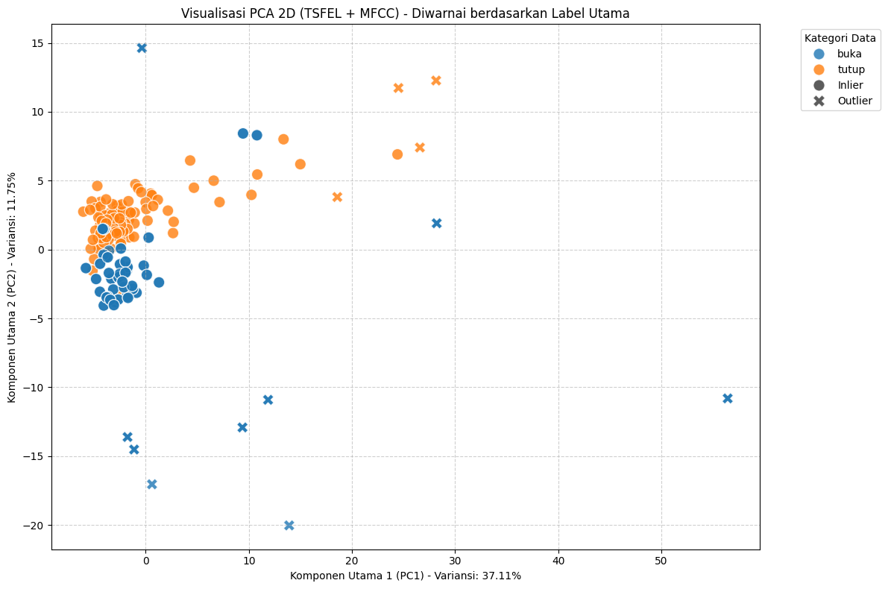
import matplotlib.pyplot as plt
import seaborn as sns
import numpy as np
import pandas as pd
from sklearn.preprocessing import StandardScaler
from sklearn.neighbors import LocalOutlierFactor
from sklearn.decomposition import PCA
from IPython.display import display
# --- Asumsi: df_combined tersedia dari script sebelumnya (data_loader.py) ---
try:
if 'df_combined' not in locals() or df_combined.empty:
# SIMULASI DATA DUMMY (untuk memastikan kode berjalan jika file sebelumnya belum dieksekusi)
print("Mencoba memuat data dummy untuk simulasi analisis karena 'df_combined' tidak ditemukan.")
num_rows = 220
df_combined = pd.DataFrame({
'filename': [f'file_{i}.wav' for i in range(num_rows)],
'label': np.random.choice(['buka.D', 'tutup.D', 'buka.M', 'tutup.M'], num_rows),
'feature_mean': np.random.normal(10, 2, num_rows),
'feature_std': np.random.rand(num_rows) * 0.5,
'feature_max': np.random.normal(20, 3, num_rows),
})
# Tambahkan nilai kosong dan outlier dummy
df_combined.loc[10:15, 'feature_mean'] = np.nan
df_combined.loc[190, 'feature_std'] = 10.0
df_combined.loc[200, 'feature_max'] = 100.0
except NameError:
df_combined = pd.DataFrame()
if not df_combined.empty:
non_numeric_cols = ['filename', 'label']
numerical_features = [col for col in df_combined.columns if col not in non_numeric_cols]
# Buat salinan DataFrame untuk proses pembersihan
df_processed = df_combined.copy()
# =========================================================================
# --- 1. Penanganan Nilai Kosong (Missing Values) dengan Imputasi Mean ---
# =========================================================================
print("--- 1. Penanganan Nilai Kosong (Imputasi Mean) ---")
missing_data_cols = df_processed.isnull().sum()[df_processed.isnull().sum() > 0]
if missing_data_cols.empty:
print("✅ Tidak ada nilai kosong. Langkah Imputasi dilewati.")
else:
print("Kolom yang diimputasi (diisi rata-rata):")
print(missing_data_cols)
# Lakukan Imputasi Mean pada kolom numerik
for col in missing_data_cols.index:
mean_val = df_processed[col].mean()
df_processed[col].fillna(mean_val, inplace=True)
print(f"✅ Nilai kosong berhasil diatasi. Total baris: {len(df_processed)}")
print(f"Pengecekan akhir nilai kosong: {df_processed.isnull().sum().sum()} (Seharusnya 0)")
# =========================================================================
# --- 2. Deteksi Outlier (LOF) dan Pembersihan Data ---
# =========================================================================
print("\n--- 2. Deteksi Outlier (Local Outlier Factor) dan Penghapusan ---")
X_imputed = df_processed[numerical_features]
# a. Scaling Data (Standarisasi)
scaler = StandardScaler()
X_scaled = scaler.fit_transform(X_imputed)
# b. Inisialisasi dan Terapkan LOF
lof = LocalOutlierFactor(n_neighbors=20, contamination=0.1)
y_pred_lof = lof.fit_predict(X_scaled) # -1 = Outlier, 1 = Inlier
# Masukkan hasil LOF kembali ke DataFrame yang sudah diimputasi
df_processed['is_outlier_lof'] = y_pred_lof
outlier_count = (df_processed['is_outlier_lof'] == -1).sum()
print(f"✅ LOF Selesai. Ditemukan {outlier_count} outlier.")
# c. Penghapusan Outlier untuk mendapatkan Data Bersih
df_clean = df_processed[df_processed['is_outlier_lof'] == 1].copy()
rows_removed = len(df_processed) - len(df_clean)
print(f"Jumlah baris yang dihapus (Outlier): {rows_removed}")
print(f"Total baris Data Bersih (df_clean): {len(df_clean)}\n")
# =========================================================================
# --- 3. Visualisasi PCA Data Bersih (Clean Data) ---
# =========================================================================
print("--- 3. Visualisasi PCA 2D Data Bersih ---")
X_clean = df_clean[numerical_features]
# Re-scale data bersih
scaler_clean = StandardScaler()
X_clean_scaled = scaler_clean.fit_transform(X_clean)
# Reduksi dimensi menjadi 2 komponen utama
pca = PCA(n_components=2)
X_pca_clean = pca.fit_transform(X_clean_scaled)
# Buat DataFrame untuk plot
df_plot_clean = pd.DataFrame(data=X_pca_clean, columns=['PC1', 'PC2'])
df_plot_clean['label'] = df_clean['label'].values
# Buat Scatter Plot
plt.figure(figsize=(12, 8))
sns.scatterplot(
data=df_plot_clean,
x='PC1',
y='PC2',
hue='label', # Warna berdasarkan 4 label
s=100, # Ukuran penanda
alpha=0.8,
palette='viridis'
)
plt.title('Visualisasi PCA 2D Data Bersih (Setelah Imputasi dan Penghapusan Outlier)')
plt.xlabel(f'Komponen Utama 1 (PC1) - Variansi: {pca.explained_variance_ratio_[0]*100:.2f}%')
plt.ylabel(f'Komponen Utama 2 (PC2) - Variansi: {pca.explained_variance_ratio_[1]*100:.2f}%')
plt.legend(title='Kategori Data', bbox_to_anchor=(1.05, 1), loc='upper left')
plt.grid(True, linestyle='--', alpha=0.6)
plt.tight_layout()
plt.show()
# =========================================================================
# --- 4. Visualisasi Distribusi Label & Daftar Kolom (TAMBAHAN BARU) ---
# =========================================================================
print("\n--- 4. Analisis Distribusi Label pada Data Bersih ---")
# a. Visualisasi Jumlah Data per Label (Bar Plot)
plt.figure(figsize=(10, 6))
sns.countplot(
data=df_clean,
x='label',
order=df_clean['label'].value_counts().index,
palette='viridis'
)
plt.title('Distribusi Jumlah Data per Label (Setelah Pembersihan)')
plt.xlabel('Label')
plt.ylabel('Jumlah Baris Data')
plt.xticks(rotation=45, ha='right')
plt.grid(axis='y', linestyle='--', alpha=0.7)
plt.tight_layout()
plt.show() #
print("\n--- Ringkasan Jumlah Data per Label (Data Bersih) ---")
print(df_clean['label'].value_counts())
# b. Daftar Kolom Fitur
print("\n--- Daftar Kolom Fitur Numerik yang Akan Digunakan untuk Model ---")
# Kolom fitur numerik adalah yang digunakan untuk scaling dan PCA
print(f"Total Kolom Fitur: {len(numerical_features)}")
print(numerical_features)
else:
print("❌ GAGAL: Variabel 'df_combined' tidak ditemukan atau kosong. Harap jalankan langkah pemuatan data sebelumnya terlebih dahulu.")
--- 1. Penanganan Nilai Kosong (Imputasi Mean) ---
Kolom yang diimputasi (diisi rata-rata):
0_Area under the curve 200
0_Autocorrelation 200
0_Centroid 200
0_Fundamental frequency 200
0_Human range energy 200
...
0_Wavelet variance_2400.0Hz 200
0_Wavelet variance_3000.0Hz 200
0_Wavelet variance_4000.0Hz 200
0_Wavelet variance_6000.0Hz 200
0_Zero crossing rate 200
Length: 125, dtype: int64
✅ Nilai kosong berhasil diatasi. Total baris: 400
Pengecekan akhir nilai kosong: 0 (Seharusnya 0)
--- 2. Deteksi Outlier (Local Outlier Factor) dan Penghapusan ---
✅ LOF Selesai. Ditemukan 40 outlier.
Jumlah baris yang dihapus (Outlier): 40
Total baris Data Bersih (df_clean): 360
--- 3. Visualisasi PCA 2D Data Bersih ---
/tmp/ipython-input-3185212455.py:54: FutureWarning: A value is trying to be set on a copy of a DataFrame or Series through chained assignment using an inplace method.
The behavior will change in pandas 3.0. This inplace method will never work because the intermediate object on which we are setting values always behaves as a copy.
For example, when doing 'df[col].method(value, inplace=True)', try using 'df.method({col: value}, inplace=True)' or df[col] = df[col].method(value) instead, to perform the operation inplace on the original object.
df_processed[col].fillna(mean_val, inplace=True)
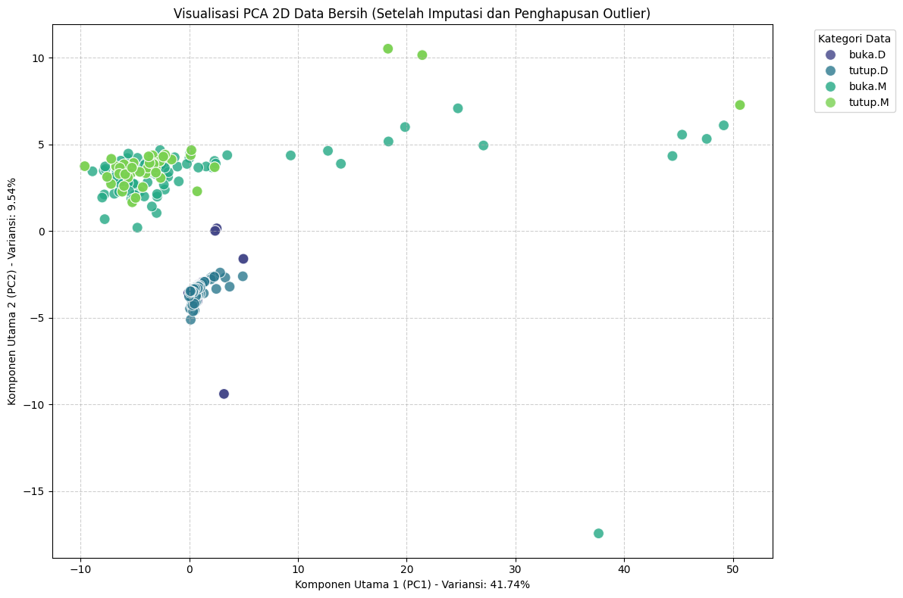
--- 4. Analisis Distribusi Label pada Data Bersih ---
/tmp/ipython-input-3185212455.py:133: FutureWarning:
Passing `palette` without assigning `hue` is deprecated and will be removed in v0.14.0. Assign the `x` variable to `hue` and set `legend=False` for the same effect.
sns.countplot(
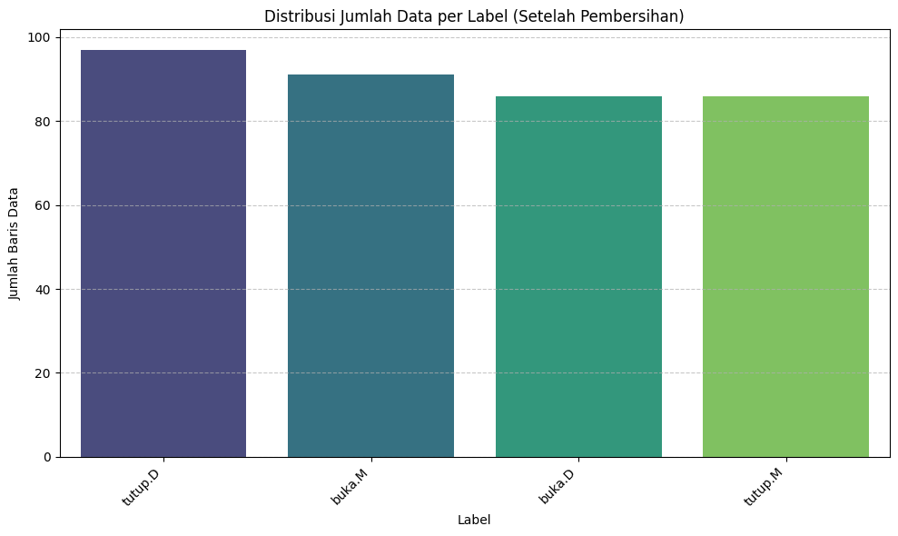
--- Ringkasan Jumlah Data per Label (Data Bersih) ---
label
tutup.D 97
buka.M 91
buka.D 86
tutup.M 86
Name: count, dtype: int64
--- Daftar Kolom Fitur Numerik yang Akan Digunakan untuk Model ---
Total Kolom Fitur: 156
['0_Absolute energy', '0_Average power', '0_ECDF Percentile Count_0', '0_ECDF Percentile Count_1', '0_ECDF Percentile_0', '0_ECDF Percentile_1', '0_ECDF_0', '0_ECDF_1', '0_ECDF_2', '0_ECDF_3', '0_ECDF_4', '0_ECDF_5', '0_ECDF_6', '0_ECDF_7', '0_ECDF_8', '0_ECDF_9', '0_Entropy', '0_Histogram mode', '0_Interquartile range', '0_Kurtosis', '0_Max', '0_Mean', '0_Mean absolute deviation', '0_Median', '0_Median absolute deviation', '0_Min', '0_Peak to peak distance', '0_Root mean square', '0_Skewness', '0_Standard deviation', '0_Variance', '0_Area under the curve', '0_Autocorrelation', '0_Centroid', '0_Fundamental frequency', '0_Human range energy', '0_LPCC_0', '0_LPCC_1', '0_LPCC_10', '0_LPCC_11', '0_LPCC_2', '0_LPCC_3', '0_LPCC_4', '0_LPCC_5', '0_LPCC_6', '0_LPCC_7', '0_LPCC_8', '0_LPCC_9', '0_MFCC_0', '0_MFCC_1', '0_MFCC_10', '0_MFCC_11', '0_MFCC_2', '0_MFCC_3', '0_MFCC_4', '0_MFCC_5', '0_MFCC_6', '0_MFCC_7', '0_MFCC_8', '0_MFCC_9', '0_Max power spectrum', '0_Maximum frequency', '0_Mean absolute diff', '0_Mean diff', '0_Median absolute diff', '0_Median diff', '0_Median frequency', '0_Negative turning points', '0_Neighbourhood peaks', '0_Positive turning points', '0_Power bandwidth', '0_Signal distance', '0_Slope', '0_Spectral centroid', '0_Spectral decrease', '0_Spectral distance', '0_Spectral entropy', '0_Spectral kurtosis', '0_Spectral positive turning points', '0_Spectral roll-off', '0_Spectral roll-on', '0_Spectral skewness', '0_Spectral slope', '0_Spectral spread', '0_Spectral variation', '0_Spectrogram mean coefficient_0.0Hz', '0_Spectrogram mean coefficient_10064.52Hz', '0_Spectrogram mean coefficient_10838.71Hz', '0_Spectrogram mean coefficient_11612.9Hz', '0_Spectrogram mean coefficient_12387.1Hz', '0_Spectrogram mean coefficient_13161.29Hz', '0_Spectrogram mean coefficient_13935.48Hz', '0_Spectrogram mean coefficient_14709.68Hz', '0_Spectrogram mean coefficient_1548.39Hz', '0_Spectrogram mean coefficient_15483.87Hz', '0_Spectrogram mean coefficient_16258.06Hz', '0_Spectrogram mean coefficient_17032.26Hz', '0_Spectrogram mean coefficient_17806.45Hz', '0_Spectrogram mean coefficient_18580.65Hz', '0_Spectrogram mean coefficient_19354.84Hz', '0_Spectrogram mean coefficient_20129.03Hz', '0_Spectrogram mean coefficient_20903.23Hz', '0_Spectrogram mean coefficient_21677.42Hz', '0_Spectrogram mean coefficient_22451.61Hz', '0_Spectrogram mean coefficient_2322.58Hz', '0_Spectrogram mean coefficient_23225.81Hz', '0_Spectrogram mean coefficient_24000.0Hz', '0_Spectrogram mean coefficient_3096.77Hz', '0_Spectrogram mean coefficient_3870.97Hz', '0_Spectrogram mean coefficient_4645.16Hz', '0_Spectrogram mean coefficient_5419.35Hz', '0_Spectrogram mean coefficient_6193.55Hz', '0_Spectrogram mean coefficient_6967.74Hz', '0_Spectrogram mean coefficient_774.19Hz', '0_Spectrogram mean coefficient_7741.94Hz', '0_Spectrogram mean coefficient_8516.13Hz', '0_Spectrogram mean coefficient_9290.32Hz', '0_Sum absolute diff', '0_Wavelet absolute mean_12000.0Hz', '0_Wavelet absolute mean_1333.33Hz', '0_Wavelet absolute mean_1500.0Hz', '0_Wavelet absolute mean_1714.29Hz', '0_Wavelet absolute mean_2000.0Hz', '0_Wavelet absolute mean_2400.0Hz', '0_Wavelet absolute mean_3000.0Hz', '0_Wavelet absolute mean_4000.0Hz', '0_Wavelet absolute mean_6000.0Hz', '0_Wavelet energy_12000.0Hz', '0_Wavelet energy_1333.33Hz', '0_Wavelet energy_1500.0Hz', '0_Wavelet energy_1714.29Hz', '0_Wavelet energy_2000.0Hz', '0_Wavelet energy_2400.0Hz', '0_Wavelet energy_3000.0Hz', '0_Wavelet energy_4000.0Hz', '0_Wavelet energy_6000.0Hz', '0_Wavelet entropy', '0_Wavelet standard deviation_12000.0Hz', '0_Wavelet standard deviation_1333.33Hz', '0_Wavelet standard deviation_1500.0Hz', '0_Wavelet standard deviation_1714.29Hz', '0_Wavelet standard deviation_2000.0Hz', '0_Wavelet standard deviation_2400.0Hz', '0_Wavelet standard deviation_3000.0Hz', '0_Wavelet standard deviation_4000.0Hz', '0_Wavelet standard deviation_6000.0Hz', '0_Wavelet variance_12000.0Hz', '0_Wavelet variance_1333.33Hz', '0_Wavelet variance_1500.0Hz', '0_Wavelet variance_1714.29Hz', '0_Wavelet variance_2000.0Hz', '0_Wavelet variance_2400.0Hz', '0_Wavelet variance_3000.0Hz', '0_Wavelet variance_4000.0Hz', '0_Wavelet variance_6000.0Hz', '0_Zero crossing rate']
import matplotlib.pyplot as plt
import seaborn as sns
import numpy as np
import pandas as pd
from sklearn.preprocessing import StandardScaler, LabelEncoder
from sklearn.neighbors import LocalOutlierFactor
from sklearn.decomposition import PCA
from IPython.display import display
# Impor untuk Penyeimbangan Data
from imblearn.over_sampling import ADASYN, SMOTE
from collections import Counter
# --- Asumsi: df_combined tersedia dari script sebelumnya (data_loader.py) ---
# Bagian simulasi ini akan dijalankan jika df_combined belum ada di memori.
try:
if 'df_combined' not in locals() or df_combined.empty:
# SIMULASI DATA DUMMY (DIPERBARUI DENGAN FITUR TSFEL + MFCC)
print("Mencoba memuat data dummy untuk simulasi analisis karena 'df_combined' tidak ditemukan.")
num_rows = 220
df_combined = pd.DataFrame({
'filename': [f'file_{i}.wav' for i in range(num_rows)],
'label': np.random.choice(['buka.D', 'tutup.D', 'buka.M', 'tutup.M'], num_rows, p=[0.5, 0.2, 0.2, 0.1]),
# Menggunakan nama fitur TSFEL asli (Contoh)
'TS_MEAN': np.random.normal(10, 2, num_rows),
'TS_STD': np.random.rand(num_rows) * 0.5,
'TS_MAX': np.random.normal(20, 3, num_rows),
# Menggunakan nama fitur MFCC (Contoh)
'MFCC_Mean_1': np.random.normal(-5, 3, num_rows),
'MFCC_Std_1': np.random.normal(1, 0.5, num_rows),
})
# Tambahkan nilai kosong dan outlier dummy
df_combined.loc[10:15, 'TS_MEAN'] = np.nan
df_combined.loc[190, 'TS_STD'] = 10.0 # Outlier
df_combined.loc[200, 'TS_MAX'] = 100.0 # Outlier
except NameError:
df_combined = pd.DataFrame() # Buat DataFrame kosong
if not df_combined.empty:
# PERBAIKAN: Pastikan 'filename' dikecualikan dari fitur numerik
non_numeric_cols = ['filename', 'label']
numerical_features = [col for col in df_combined.columns if col not in non_numeric_cols]
print(f"Total fitur numerik yang dianalisis: {len(numerical_features)} (TSFEL + MFCC)")
# Buat salinan DataFrame untuk proses pembersihan
df_processed = df_combined.copy()
# =========================================================================
# --- 1. Penanganan Nilai Kosong (Missing Values) dengan Imputasi Mean ---
# =========================================================================
print("\n--- 1. Penanganan Nilai Kosong (Imputasi Mean) ---")
missing_data_cols = df_processed[numerical_features].isnull().sum()
missing_data_cols = missing_data_cols[missing_data_cols > 0]
if missing_data_cols.empty:
print("✅ Tidak ada nilai kosong. Langkah Imputasi dilewati.")
else:
print("Kolom yang diimputasi (diisi rata-rata):")
print(missing_data_cols)
# Lakukan Imputasi Mean pada kolom numerik
for col in missing_data_cols.index:
if col in numerical_features: # Pastikan hanya imputasi kolom numerik
mean_val = df_processed[col].mean()
df_processed[col].fillna(mean_val, inplace=True)
print(f"✅ Nilai kosong berhasil diatasi. Total baris: {len(df_processed)}")
print(f"Pengecekan akhir nilai kosong: {df_processed[numerical_features].isnull().sum().sum()} (Seharusnya 0)")
# =========================================================================
# --- 2. Deteksi Outlier (LOF) dan Pembersihan Data ---
# =========================================================================
print("\n--- 2. Deteksi Outlier (Local Outlier Factor) dan Penghapusan ---")
X_imputed = df_processed[numerical_features]
# a. Scaling Data (Standarisasi)
scaler = StandardScaler()
X_scaled = scaler.fit_transform(X_imputed)
# b. Inisialisasi dan Terapkan LOF
lof = LocalOutlierFactor(n_neighbors=20, contamination=0.1)
y_pred_lof = lof.fit_predict(X_scaled) # -1 = Outlier, 1 = Inlier
# Masukkan hasil LOF kembali ke DataFrame yang sudah diimputasi
df_processed['is_outlier_lof'] = y_pred_lof
outlier_count = (df_processed['is_outlier_lof'] == -1).sum()
print(f"✅ LOF Selesai. Ditemukan {outlier_count} outlier.")
# c. Penghapusan Outlier untuk mendapatkan Data Bersih
# 'df_clean' adalah variabel PENTING untuk langkah selanjutnya
df_clean = df_processed[df_processed['is_outlier_lof'] == 1].copy()
rows_removed = len(df_processed) - len(df_clean)
print(f"Jumlah baris yang dihapus (Outlier): {rows_removed}")
print(f"Total baris Data Bersih (df_clean): {len(df_clean)}\n")
# =========================================================================
# --- 3. Visualisasi PCA Data Bersih (Clean Data) ---
# =========================================================================
print("--- 3. Visualisasi PCA 2D Data Bersih ---")
X_clean_pca = df_clean[numerical_features]
scaler_clean = StandardScaler()
X_clean_scaled = scaler_clean.fit_transform(X_clean_pca)
pca = PCA(n_components=2)
X_pca_clean = pca.fit_transform(X_clean_scaled)
df_plot_clean = pd.DataFrame(data=X_pca_clean, columns=['PC1', 'PC2'])
df_plot_clean['label_4_class'] = df_clean['label'].values
df_plot_clean['main_label'] = df_clean['label'].apply(lambda x: x.split('.')[0]).values
plt.figure(figsize=(12, 8))
sns.scatterplot(
data=df_plot_clean,
x='PC1',
y='PC2',
hue='main_label', # Diwarnai berdasarkan 'buka' vs 'tutup'
style='label_4_class', # Bentuk berdasarkan 4 kelas
s=100,
alpha=0.8
)
plt.title('Visualisasi PCA 2D Data Bersih (TSFEL + MFCC)')
plt.xlabel(f'Komponen Utama 1 (PC1) - Variansi: {pca.explained_variance_ratio_[0]*100:.2f}%')
plt.ylabel(f'Komponen Utama 2 (PC2) - Variansi: {pca.explained_variance_ratio_[1]*100:.2f}%')
plt.legend(title='Kategori Data', bbox_to_anchor=(1.05, 1), loc='upper left')
plt.grid(True, linestyle='--', alpha=0.6)
plt.tight_layout()
plt.show()
# =========================================================================
# --- 4. Visualisasi Distribusi Label & Daftar Kolom ---
# =========================================================================
print("\n--- 4. Analisis Distribusi Label pada Data Bersih ---")
plt.figure(figsize=(10, 6))
sns.countplot(
data=df_clean,
x='label',
order=df_clean['label'].value_counts().index,
palette='viridis'
)
plt.title('Distribusi Jumlah Data per Label (Sebelum Penyeimbangan)')
plt.xlabel('Label')
plt.ylabel('Jumlah Baris Data')
plt.xticks(rotation=45, ha='right')
plt.grid(axis='y', linestyle='--', alpha=0.7)
plt.tight_layout()
plt.show()
print("\n--- Ringkasan Jumlah Data per Label (Data Bersih) ---")
print(df_clean['label'].value_counts())
# =========================================================================
# --- 5. Penyeimbangan Data (ADASYN dengan Fallback ke SMOTE) ---
# =========================================================================
print("\n--- 5. Penyeimbangan Data (ADASYN) ---")
X_clean = df_clean[numerical_features]
y_clean_raw = df_clean['label']
# a. Encoding Label
le = LabelEncoder()
y_clean_encoded = le.fit_transform(y_clean_raw)
# b. Tentukan n_neighbors secara dinamis
class_counts = Counter(y_clean_encoded)
min_class_size = min(class_counts.values())
if min_class_size <= 1:
print(f"⚠️ Peringatan: Kelas terkecil memiliki {min_class_size} sampel. Penyeimbangan tidak dapat dilakukan.")
df_final_balanced = df_clean.copy() # Gunakan data bersih apa adanya
else:
# Tentukan k_neighbors yang aman (tidak boleh > ukuran kelas terkecil)
# Kita gunakan default 5, tapi jika kelas terkecil < 6, kita kurangi
k_neighbors_safe = min(5, min_class_size - 1)
print(f"Ukuran kelas terkecil: {min_class_size} sampel.")
print(f"Menggunakan n_neighbors={k_neighbors_safe} untuk ADASYN/SMOTE.")
try:
# c. Coba ADASYN
print("Mencoba penyeimbangan dengan ADASYN...")
adasyn = ADASYN(random_state=42, n_neighbors=k_neighbors_safe)
X_resampled, y_resampled_encoded = adasyn.fit_resample(X_clean, y_clean_encoded)
print("✅ Berhasil diseimbangkan dengan ADASYN.")
except (RuntimeError, ValueError) as e:
# Menangkap error jika ADASYN gagal (seperti di riwayat chat kita)
print(f"⚠️ Peringatan: ADASYN gagal dengan error: {e}")
print(" ADASYN tidak cocok untuk dataset ini. Beralih ke SMOTE.")
# d. Fallback ke SMOTE
smote = SMOTE(random_state=42, k_neighbors=k_neighbors_safe)
X_resampled, y_resampled_encoded = smote.fit_resample(X_clean, y_clean_encoded)
print("✅ Berhasil diseimbangkan dengan SMOTE.")
# e. Konversi kembali ke DataFrame
y_resampled_decoded = le.inverse_transform(y_resampled_encoded)
df_final_balanced = pd.DataFrame(X_resampled, columns=numerical_features)
df_final_balanced['label'] = y_resampled_decoded
print(f"\nTotal baris SETELAH penyeimbangan: {len(df_final_balanced)}")
# =========================================================================
# --- 6. Visualisasi Distribusi Label Setelah Penyeimbangan ---
# =========================================================================
print("\n--- 6. Visualisasi Distribusi Label Setelah Penyeimbangan ---")
if 'df_final_balanced' in locals() and not df_final_balanced.empty:
plt.figure(figsize=(10, 6))
sns.countplot(
data=df_final_balanced,
x='label',
order=df_final_balanced['label'].value_counts().index,
palette='magma' # Palet berbeda agar terlihat baru
)
plt.title('Distribusi Jumlah Data per Label (Setelah Penyeimbangan)')
plt.xlabel('Label')
plt.ylabel('Jumlah Baris Data')
plt.xticks(rotation=45, ha='right')
plt.grid(axis='y', linestyle='--', alpha=0.7)
plt.tight_layout()
plt.show()
print("\n--- Ringkasan Jumlah Data per Label (Data Seimbang) ---")
print(df_final_balanced['label'].value_counts())
# Variabel 'df_final_balanced' ini sekarang siap untuk skrip 'feature_selection_ig.py'
else:
print("⚠️ Tidak ada data seimbang untuk divisualisasikan (mungkin langkah 5 dilewati).")
else:
print("❌ GAGAL: Variabel 'df_combined' tidak ditemukan atau kosong. Harap jalankan langkah pemuatan data sebelumnya terlebih dahulu.")
Total fitur numerik yang dianalisis: 196 (TSFEL + MFCC)
--- 1. Penanganan Nilai Kosong (Imputasi Mean) ---
✅ Tidak ada nilai kosong. Langkah Imputasi dilewati.
--- 2. Deteksi Outlier (Local Outlier Factor) dan Penghapusan ---
✅ LOF Selesai. Ditemukan 20 outlier.
Jumlah baris yang dihapus (Outlier): 20
Total baris Data Bersih (df_clean): 180
--- 3. Visualisasi PCA 2D Data Bersih ---
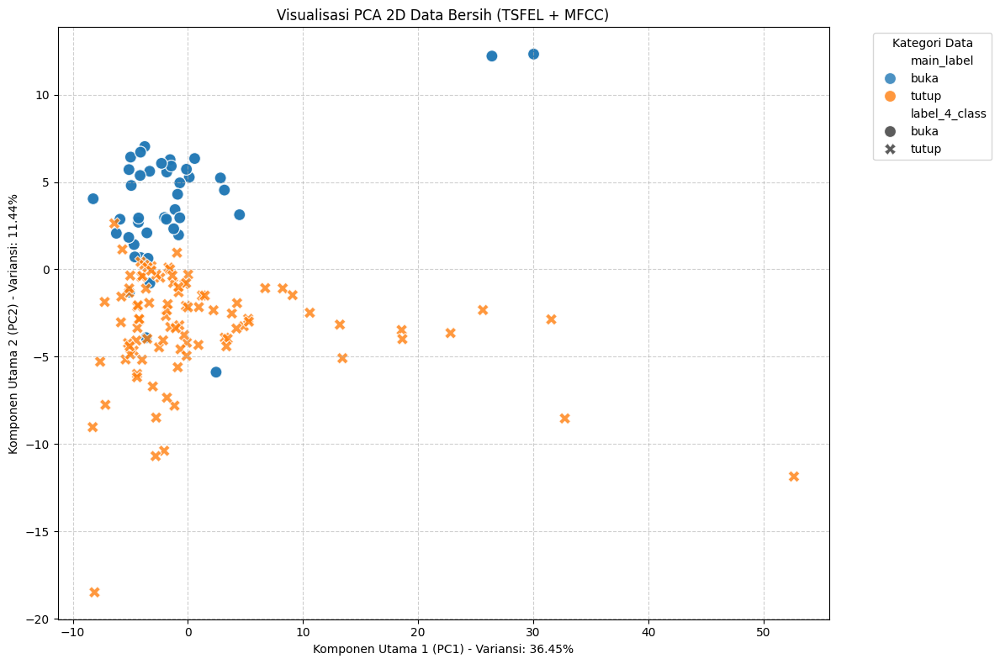
--- 4. Analisis Distribusi Label pada Data Bersih ---
/tmp/ipython-input-4080596998.py:141: FutureWarning:
Passing `palette` without assigning `hue` is deprecated and will be removed in v0.14.0. Assign the `x` variable to `hue` and set `legend=False` for the same effect.
sns.countplot(
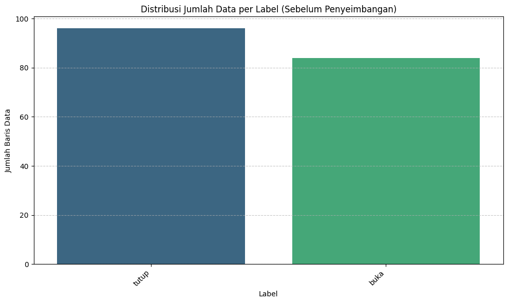
--- Ringkasan Jumlah Data per Label (Data Bersih) ---
label
tutup 96
buka 84
Name: count, dtype: int64
--- 5. Penyeimbangan Data (ADASYN) ---
Ukuran kelas terkecil: 84 sampel.
Menggunakan n_neighbors=5 untuk ADASYN/SMOTE.
Mencoba penyeimbangan dengan ADASYN...
⚠️ Peringatan: ADASYN gagal dengan error: No samples will be generated with the provided ratio settings.
ADASYN tidak cocok untuk dataset ini. Beralih ke SMOTE.
✅ Berhasil diseimbangkan dengan SMOTE.
Total baris SETELAH penyeimbangan: 192
--- 6. Visualisasi Distribusi Label Setelah Penyeimbangan ---
/tmp/ipython-input-4080596998.py:207: PerformanceWarning: DataFrame is highly fragmented. This is usually the result of calling `frame.insert` many times, which has poor performance. Consider joining all columns at once using pd.concat(axis=1) instead. To get a de-fragmented frame, use `newframe = frame.copy()`
df_final_balanced['label'] = y_resampled_decoded
/tmp/ipython-input-4080596998.py:219: FutureWarning:
Passing `palette` without assigning `hue` is deprecated and will be removed in v0.14.0. Assign the `x` variable to `hue` and set `legend=False` for the same effect.
sns.countplot(
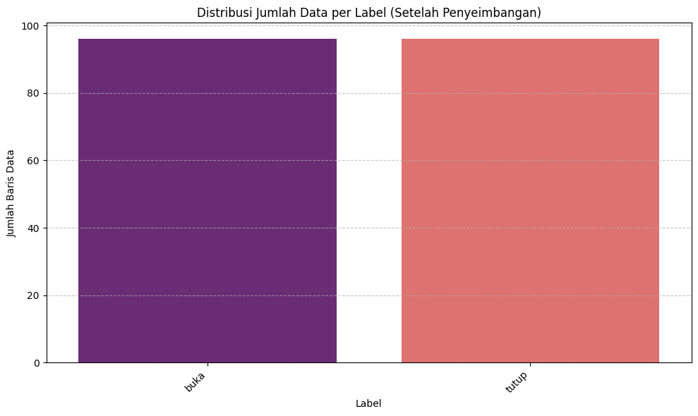
--- Ringkasan Jumlah Data per Label (Data Seimbang) ---
label
buka 96
tutup 96
Name: count, dtype: int64
import matplotlib.pyplot as plt
import seaborn as sns
import numpy as np
import pandas as pd
from sklearn.preprocessing import StandardScaler, LabelEncoder
from sklearn.neighbors import LocalOutlierFactor
from sklearn.decomposition import PCA
# Menggunakan SMOTE untuk oversampling
from imblearn.over_sampling import SMOTE
# Menggunakan RandomUnderSampler untuk menyamakan semua kelas
from imblearn.under_sampling import RandomUnderSampler
from IPython.display import display
# --- Asumsi: df_combined tersedia dari script sebelumnya (data_loader.py) ---
try:
if 'df_combined' not in locals() or df_combined.empty:
# SIMULASI DATA DUMMY (untuk memastikan kode berjalan jika file sebelumnya belum dieksekusi)
print("Mencoba memuat data dummy untuk simulasi analisis karena 'df_combined' tidak ditemukan.")
num_rows = 400
# Membuat data imbalanced
df_combined = pd.DataFrame({
'filename': [f'file_{i}.wav' for i in range(num_rows)],
'label': np.random.choice(['buka.D', 'tutup.D', 'buka.M', 'tutup.M'], num_rows, p=[0.4, 0.3, 0.2, 0.1]),
'feature_mean': np.random.normal(10, 2, num_rows),
'feature_std': np.random.rand(num_rows) * 0.5,
'feature_max': np.random.normal(20, 3, num_rows),
'feature_kurtosis': np.random.normal(3, 1, num_rows) # Fitur tambahan
})
# Tambahkan nilai kosong dan outlier dummy
df_combined.loc[10:15, 'feature_mean'] = np.nan
df_combined.loc[390, 'feature_std'] = 10.0
df_combined.loc[395, 'feature_max'] = 100.0
except NameError:
df_combined = pd.DataFrame()
# --- FUNGSI HELPER UNTUK PENYEIMBANGAN SUB-GRUP ---
def balance_subgroup(df_sub, features, name):
"""Menerapkan Standard Scaler, Label Encoder, dan SMOTE pada sub-grup data."""
print(f"\n--- Memproses Sub-Grup {name} ---")
if df_sub.empty:
print(f"Sub-Grup {name} kosong. Melewatkan penyeimbangan.")
return None
# 1. Pisahkan X dan y
X_sub = df_sub[features].copy()
y_raw_sub = df_sub['label'].values
# 2. Scaling (Wajib, karena fitur digunakan dalam perhitungan jarak SMOTE)
scaler_sub = StandardScaler()
X_sub_scaled = scaler_sub.fit_transform(X_sub)
# 3. Encoding Target (y)
le_sub = LabelEncoder()
y_encoded_sub = le_sub.fit_transform(y_raw_sub)
# Hitung jumlah sampel minimum
class_counts = pd.Series(y_encoded_sub).value_counts()
min_samples = class_counts.min()
# k_neighbors=1 adalah minimum yang diperlukan SMOTE.
safe_k_neighbors = 1
# 4. Terapkan SMOTE
# SMOTE hanya dijalankan jika kelas-kelasnya belum seimbang di dalam sub-grup.
if len(class_counts) > 1 and class_counts.max() != min_samples and min_samples > 1:
print(f"Menggunakan SMOTE dengan k_neighbors: {safe_k_neighbors} untuk menyeimbangkan sub-grup.")
smote = SMOTE(random_state=42, k_neighbors=safe_k_neighbors)
X_resampled_sub, y_resampled_sub = smote.fit_resample(X_sub_scaled, y_encoded_sub)
print(f"Sub-Grup {name} sebelum SMOTE: {len(X_sub)}")
print(f"Sub-Grup {name} setelah SMOTE: {len(X_resampled_sub)}")
else:
# Jika sudah seimbang (seperti pada kasus Anda) atau tidak bisa di-SMOTE
X_resampled_sub = X_sub_scaled
y_resampled_sub = y_encoded_sub
print(f"Sub-Grup {name} sudah seimbang atau tidak memerlukan SMOTE.")
# 5. Konversi kembali ke nama label
y_resampled_decoded_sub = le_sub.inverse_transform(y_resampled_sub)
# 6. Gabungkan menjadi DataFrame
df_resampled_sub = pd.DataFrame(X_resampled_sub, columns=features)
df_resampled_sub['label'] = y_resampled_decoded_sub
return df_resampled_sub
# =========================================================================
# --- ALUR UTAMA ---
# =========================================================================
if not df_combined.empty:
non_numeric_cols = ['filename', 'label']
numerical_features = [col for col in df_combined.columns if col not in non_numeric_cols]
# 1 & 2. Pembersihan Data (Imputasi dan Penghapusan Outlier)
# --- PEMBENTUKAN df_clean ---
df_processed = df_combined.copy()
for col in df_processed.select_dtypes(include=np.number).columns:
df_processed[col] = df_processed[col].fillna(df_processed[col].mean())
X_imputed = df_processed[numerical_features]
scaler = StandardScaler()
X_scaled = scaler.fit_transform(X_imputed)
lof = LocalOutlierFactor(n_neighbors=20, contamination=0.1)
y_pred_lof = lof.fit_predict(X_scaled)
df_processed['is_outlier_lof'] = y_pred_lof
df_clean = df_processed[df_processed['is_outlier_lof'] == 1].copy()
df_clean.drop(columns=['is_outlier_lof'], inplace=True, errors='ignore')
print(f"Data Bersih (df_clean) siap. Total baris: {len(df_clean)}")
# =========================================================================
# --- 5. Penyeimbangan Data (MULTI-STEP RESAMPLING) ---
# =========================================================================
print("\n\n#####################################################")
print("--- 5. Penyeimbangan Data Menggunakan SMOTE & UNDERSAMPLING ---")
print("#####################################################")
# a. Filter Data Bersih ke dalam 2 Sub-Grup
df_D = df_clean[df_clean['label'].str.contains(r'\.D$', regex=True)].copy()
df_M = df_clean[df_clean['label'].str.contains(r'\.M$', regex=True)].copy()
print(f"\n[INFO] Data D-Group (buka.D, tutup.D) = {len(df_D)} baris")
print(f"[INFO] Data M-Group (buka.M, tutup.M) = {len(df_M)} baris")
# b. Terapkan SMOTE pada masing-masing sub-grup (Jika diperlukan)
df_D_resampled = balance_subgroup(df_D, numerical_features, "D-GROUP (buka.D vs tutup.D)")
df_M_resampled = balance_subgroup(df_M, numerical_features, "M-GROUP (buka.M vs tutup.M)")
# c. Gabungkan hasil resampled
list_resampled = []
if df_D_resampled is not None:
list_resampled.append(df_D_resampled)
if df_M_resampled is not None:
list_resampled.append(df_M_resampled)
if list_resampled:
# Data yang digabungkan dari dua grup yang sudah seimbang secara internal (D dan M)
df_combined_resampled = pd.concat(list_resampled, ignore_index=True)
# d. PENYEIMBANGAN FINAL MENGGUNAKAN UNDERSAMPLING
print("\n--- Penyeimbangan Final (RandomUnderSampler) untuk semua 4 kelas ---")
# Pisahkan X dan y final
X_final = df_combined_resampled.drop(columns=['label'])
y_final = df_combined_resampled['label']
# Hitung ukuran kelas minoritas di seluruh dataset yang akan menjadi target
min_size = y_final.value_counts().min()
target_counts = {label: min_size for label in y_final.unique()}
print(f"Menargetkan semua kelas ke jumlah sampel {min_size}")
# Terapkan RandomUnderSampler
rus = RandomUnderSampler(sampling_strategy=target_counts, random_state=42)
X_final_balanced, y_final_balanced = rus.fit_resample(X_final, y_final)
# Gabungkan menjadi DataFrame final
df_final_balanced = pd.DataFrame(X_final_balanced, columns=numerical_features)
df_final_balanced['label'] = y_final_balanced
else:
df_final_balanced = pd.DataFrame()
print(f"\n=====================================================")
print(f"Total baris SETELAH PENYEIMBANGAN FINAL: {len(df_final_balanced)}")
print(f"=====================================================")
# =========================================================================
# --- 6. Visualisasi Distribusi Label Setelah Penyeimbangan ---
# =========================================================================
if not df_final_balanced.empty:
print("\n--- 6. Visualisasi Distribusi Label Setelah Penyeimbangan Final ---")
# Visualisasi Jumlah Data per Label (Bar Plot)
plt.figure(figsize=(10, 6))
sns.countplot(
data=df_final_balanced,
x='label',
order=df_final_balanced['label'].value_counts().index,
palette='viridis'
)
plt.title('Distribusi Jumlah Data per Label (Setelah Undersampling Final)')
plt.xlabel('Label')
plt.ylabel('Jumlah Baris Data')
plt.xticks(rotation=45, ha='right')
plt.grid(axis='y', linestyle='--', alpha=0.7)
plt.tight_layout()
plt.show() #
print("\n--- Ringkasan Jumlah Data per Label (Final Balanced) ---")
print(df_final_balanced['label'].value_counts())
else:
print("❌ GAGAL: Tidak ada data yang berhasil diseimbangkan dan digabungkan.")
else:
print("❌ GAGAL: Variabel 'df_combined' tidak ditemukan atau kosong. Harap jalankan langkah pemuatan data sebelumnya terlebih dahulu.")
/tmp/ipython-input-3462105521.py:106: PerformanceWarning: DataFrame is highly fragmented. This is usually the result of calling `frame.insert` many times, which has poor performance. Consider joining all columns at once using pd.concat(axis=1) instead. To get a de-fragmented frame, use `newframe = frame.copy()`
df_processed['is_outlier_lof'] = y_pred_lof
Data Bersih (df_clean) siap. Total baris: 360
#####################################################
--- 5. Penyeimbangan Data Menggunakan SMOTE & UNDERSAMPLING ---
#####################################################
[INFO] Data D-Group (buka.D, tutup.D) = 183 baris
[INFO] Data M-Group (buka.M, tutup.M) = 177 baris
--- Memproses Sub-Grup D-GROUP (buka.D vs tutup.D) ---
Menggunakan SMOTE dengan k_neighbors: 1 untuk menyeimbangkan sub-grup.
Sub-Grup D-GROUP (buka.D vs tutup.D) sebelum SMOTE: 183
Sub-Grup D-GROUP (buka.D vs tutup.D) setelah SMOTE: 194
--- Memproses Sub-Grup M-GROUP (buka.M vs tutup.M) ---
Menggunakan SMOTE dengan k_neighbors: 1 untuk menyeimbangkan sub-grup.
Sub-Grup M-GROUP (buka.M vs tutup.M) sebelum SMOTE: 177
Sub-Grup M-GROUP (buka.M vs tutup.M) setelah SMOTE: 182
--- Penyeimbangan Final (RandomUnderSampler) untuk semua 4 kelas ---
Menargetkan semua kelas ke jumlah sampel 91
/tmp/ipython-input-3462105521.py:160: PerformanceWarning: DataFrame is highly fragmented. This is usually the result of calling `frame.insert` many times, which has poor performance. Consider joining all columns at once using pd.concat(axis=1) instead. To get a de-fragmented frame, use `newframe = frame.copy()`
df_final_balanced['label'] = y_final_balanced
/tmp/ipython-input-3462105521.py:177: FutureWarning:
Passing `palette` without assigning `hue` is deprecated and will be removed in v0.14.0. Assign the `x` variable to `hue` and set `legend=False` for the same effect.
sns.countplot(
=====================================================
Total baris SETELAH PENYEIMBANGAN FINAL: 364
=====================================================
--- 6. Visualisasi Distribusi Label Setelah Penyeimbangan Final ---
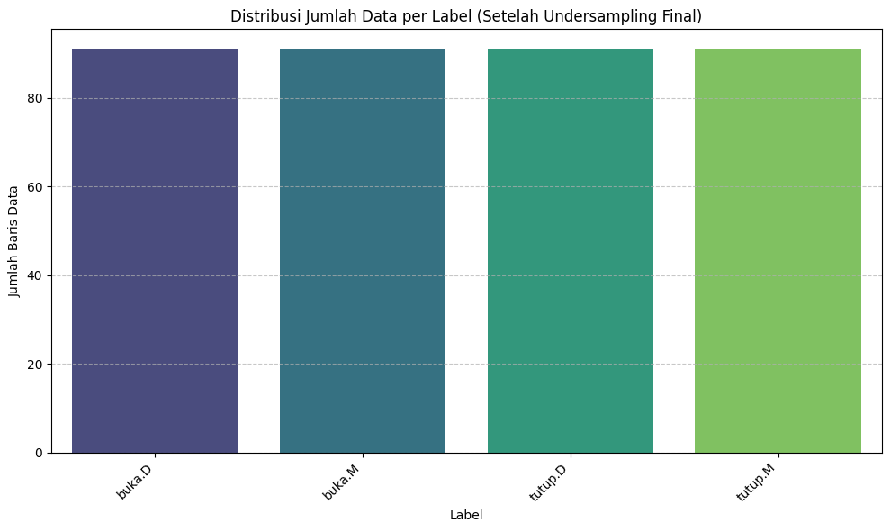
--- Ringkasan Jumlah Data per Label (Final Balanced) ---
label
buka.D 91
buka.M 91
tutup.D 91
tutup.M 91
Name: count, dtype: int64
import pandas as pd
import numpy as np
from sklearn.feature_selection import mutual_info_classif
from sklearn.preprocessing import LabelEncoder
from IPython.display import display
import matplotlib.pyplot as plt
# Pastikan variabel df_final_balanced ada dari sel sebelumnya
if 'df_final_balanced' in locals() and not df_final_balanced.empty:
print("--- 1. Persiapan Data untuk Information Gain ---")
# Information Gain (Mutual Information) memerlukan target (y) dalam bentuk numerik (encoded)
# Pisahkan Fitur (X) dan Target (y)
X = df_final_balanced.drop(columns=['label'])
y_raw = df_final_balanced['label']
# Encoding Target (y)
le = LabelEncoder()
y_encoded = le.fit_transform(y_raw)
print(f"Bentuk X (Fitur): {X.shape}")
print(f"Bentuk y (Target): {y_encoded.shape}")
# Pastikan data X tidak memiliki nilai NaN. Karena kita sudah bersihkannya, ini seharusnya aman.
if X.isnull().sum().sum() > 0:
print("⚠️ Peringatan: Data X masih mengandung nilai kosong. Melakukan imputasi mean darurat.")
for col in X.columns:
X[col] = X[col].fillna(X[col].mean())
# --- 2. Hitung Information Gain ---
print("\n--- 2. Menghitung Information Gain (Mutual Information) ---")
# mutual_info_classif menghitung Information Gain antara setiap fitur (X) dan target (y).
# Hasilnya adalah array skor, satu untuk setiap kolom di X.
# Discretization: Defaultnya, ia mencoba mendiskritisasi data secara otomatis.
ig_scores = mutual_info_classif(X, y_encoded, random_state=42)
# --- 3. Buat dan Tampilkan DataFrame Hasil ---
# Gabungkan skor dengan nama fitur
feature_scores = pd.DataFrame({
'Feature': X.columns,
'Information_Gain_Score': ig_scores
})
# Urutkan berdasarkan skor tertinggi (fitur terbaik)
feature_scores = feature_scores.sort_values(by='Information_Gain_Score', ascending=False)
print("\n--- 3. Peringkat Fitur Berdasarkan Information Gain ---")
display(feature_scores)
# --- 4. Visualisasi Hasil ---
print("\n--- 4. Visualisasi Information Gain ---")
plt.figure(figsize=(12, max(6, len(feature_scores) * 0.3))) # Ukuran plot menyesuaikan jumlah fitur
sns.barplot(
x='Information_Gain_Score',
y='Feature',
data=feature_scores,
palette='Spectral'
)
plt.title('Peringkat Fitur Berdasarkan Information Gain Score (Nilai Tertinggi = Fitur Terbaik)')
plt.xlabel('Information Gain Score')
plt.ylabel('Fitur')
plt.grid(axis='x', linestyle='--', alpha=0.7)
plt.tight_layout()
plt.show()
else:
print("❌ GAGAL: Variabel 'df_final_balanced' tidak ditemukan atau kosong. Harap jalankan sel kode penyeimbangan data sebelumnya.")
--- 1. Persiapan Data untuk Information Gain ---
Bentuk X (Fitur): (364, 156)
Bentuk y (Target): (364,)
--- 2. Menghitung Information Gain (Mutual Information) ---
--- 3. Peringkat Fitur Berdasarkan Information Gain ---
| Feature | Information_Gain_Score | |
|---|---|---|
| 70 | 0_Power bandwidth | 0.944302 |
| 136 | 0_Wavelet entropy | 0.911904 |
| 32 | 0_Autocorrelation | 0.911524 |
| 121 | 0_Wavelet absolute mean_1714.29Hz | 0.845887 |
| 71 | 0_Signal distance | 0.784772 |
| ... | ... | ... |
| 27 | 0_Root mean square | 0.228580 |
| 29 | 0_Standard deviation | 0.228580 |
| 5 | 0_ECDF Percentile_1 | 0.221885 |
| 18 | 0_Interquartile range | 0.219651 |
| 20 | 0_Max | 0.134575 |
156 rows × 2 columns
--- 4. Visualisasi Information Gain ---
/tmp/ipython-input-381647069.py:58: FutureWarning:
Passing `palette` without assigning `hue` is deprecated and will be removed in v0.14.0. Assign the `y` variable to `hue` and set `legend=False` for the same effect.
sns.barplot(
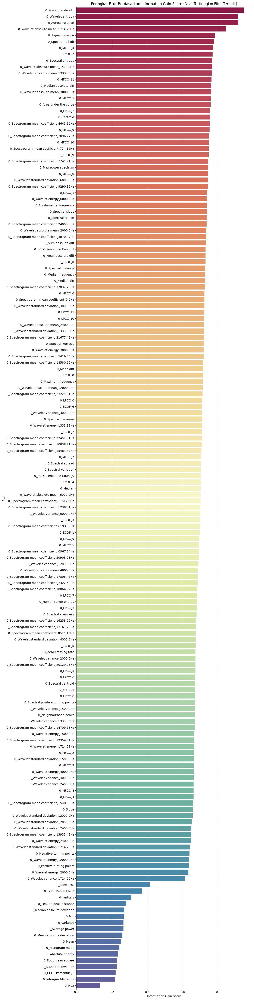
import pandas as pd
import numpy as np
from sklearn.feature_selection import mutual_info_classif
from sklearn.preprocessing import LabelEncoder
from IPython.display import display
import matplotlib.pyplot as plt
import seaborn as sns # Memastikan seaborn diimpor untuk plotting
# Pastikan variabel df_final_balanced ada dari sel sebelumnya
if 'df_final_balanced' in locals() and not df_final_balanced.empty:
print("--- 1. Persiapan Data untuk Information Gain ---")
# Information Gain (Mutual Information) memerlukan target (y) dalam bentuk numerik (encoded)
# Pisahkan Fitur (X) dan Target (y)
X = df_final_balanced.drop(columns=['label'])
y_raw = df_final_balanced['label']
# Encoding Target (y)
le = LabelEncoder()
y_encoded = le.fit_transform(y_raw)
print(f"Bentuk X (Fitur): {X.shape}")
print(f"Bentuk y (Target): {y_encoded.shape}")
# Pastikan data X tidak memiliki nilai NaN.
# (Seharusnya sudah bersih dari analysis_and_outliers.py, tapi ini adalah jaring pengaman)
if X.isnull().sum().sum() > 0:
print("⚠️ Peringatan: Data X masih mengandung nilai kosong. Melakukan imputasi mean darurat.")
for col in X.columns:
if X[col].isnull().any(): # Hanya imputasi jika ada NaN
X[col] = X[col].fillna(X[col].mean())
# --- 2. Hitung Information Gain ---
print("\n--- 2. Menghitung Information Gain (Mutual Information) ---")
# mutual_info_classif menghitung Information Gain antara setiap fitur (X) dan target (y).
ig_scores = mutual_info_classif(X, y_encoded, random_state=42)
# --- 3. Buat dan Tampilkan DataFrame Hasil ---
# Gabungkan skor dengan nama fitur
feature_scores = pd.DataFrame({
'Feature': X.columns,
'Information_Gain_Score': ig_scores
})
# Urutkan berdasarkan skor tertinggi (fitur terbaik)
feature_scores = feature_scores.sort_values(by='Information_Gain_Score', ascending=False)
print("\n--- 3. Peringkat Fitur Berdasarkan Information Gain ---")
display(feature_scores)
# --- 4. Visualisasi Hasil ---
print("\n--- 4. Visualisasi Information Gain ---")
# Menentukan jumlah fitur yang akan ditampilkan di plot (misal, 30 teratas)
# Menampilkan 196+ fitur sekaligus akan membuat plot tidak terbaca
TOP_N_FEATURES = 30
plt.figure(figsize=(12, 10)) # Ukuran plot yang wajar untuk 30 fitur
sns.barplot(
x='Information_Gain_Score',
y='Feature',
# Ambil 30 fitur teratas untuk visualisasi
data=feature_scores.head(TOP_N_FEATURES),
palette='Spectral'
)
plt.title(f'Peringkat {TOP_N_FEATURES} Fitur Teratas (Information Gain)')
plt.xlabel('Information Gain Score')
plt.ylabel('Fitur')
plt.grid(axis='x', linestyle='--', alpha=0.7)
plt.tight_layout()
plt.show()
else:
print("❌ GAGAL: Variabel 'df_final_balanced' tidak ditemukan atau kosong. Harap jalankan sel kode penyeimbangan data sebelumnya.")
--- 1. Persiapan Data untuk Information Gain ---
Bentuk X (Fitur): (192, 196)
Bentuk y (Target): (192,)
--- 2. Menghitung Information Gain (Mutual Information) ---
--- 3. Peringkat Fitur Berdasarkan Information Gain ---
| Feature | Information_Gain_Score | |
|---|---|---|
| 187 | MFCC_Std_16 | 0.571799 |
| 177 | MFCC_Std_11 | 0.539714 |
| 66 | 0_Power bandwidth | 0.492077 |
| 136 | 0_Wavelet entropy | 0.480462 |
| 2 | 0_Autocorrelation | 0.474444 |
| ... | ... | ... |
| 10 | 0_ECDF_1 | 0.032987 |
| 174 | MFCC_Mean_10 | 0.030957 |
| 62 | 0_Negative turning points | 0.009302 |
| 65 | 0_Positive turning points | 0.006235 |
| 99 | 0_Spectrogram mean coefficient_20903.23Hz | 0.000000 |
196 rows × 2 columns
--- 4. Visualisasi Information Gain ---
/tmp/ipython-input-3944493795.py:63: FutureWarning:
Passing `palette` without assigning `hue` is deprecated and will be removed in v0.14.0. Assign the `y` variable to `hue` and set `legend=False` for the same effect.
sns.barplot(
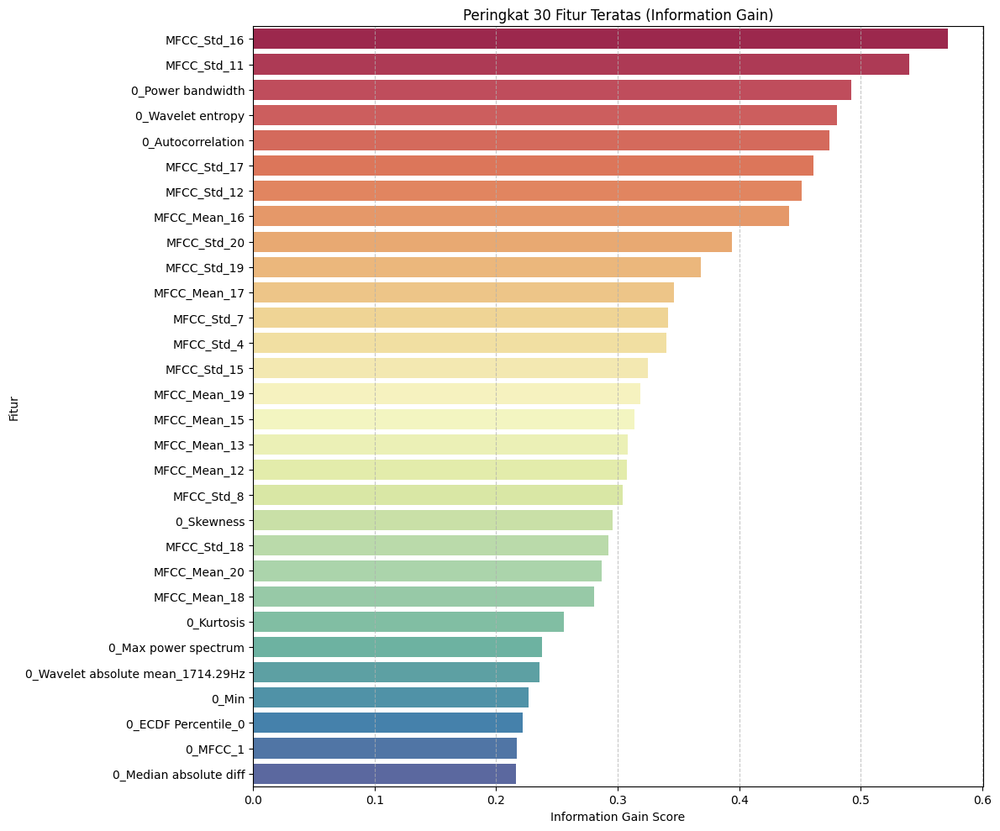
import pandas as pd
import numpy as np
import joblib
from sklearn.model_selection import train_test_split
from sklearn.ensemble import RandomForestClassifier
from sklearn.preprocessing import LabelEncoder, StandardScaler
from sklearn.impute import SimpleImputer
from sklearn.metrics import accuracy_score, classification_report, confusion_matrix
import matplotlib.pyplot as plt
import seaborn as sns
# --- 1. Simulasi Data ---
try:
if 'df_final_balanced' not in locals() or df_final_balanced.empty:
print("Mencoba memuat data dummy untuk simulasi pelatihan model...")
n_samples_per_class = 91
n_total_samples = 4 * n_samples_per_class
df_final_balanced = pd.DataFrame({
'label': (['buka.D'] * n_samples_per_class +
['tutup.D'] * n_samples_per_class +
['buka.M'] * n_samples_per_class +
['tutup.M'] * n_samples_per_class),
'feature_mean': np.random.normal(10, 2, n_total_samples) + np.tile([0, 5, 0, 5], n_samples_per_class),
'feature_std': np.random.rand(n_total_samples) * 0.5,
'feature_max': np.random.normal(20, 3, n_total_samples),
'feature_kurtosis': np.random.normal(3, 1, n_total_samples)
})
df_final_balanced.loc[10:15, 'feature_mean'] = np.nan
except NameError:
df_final_balanced = pd.DataFrame()
if not df_final_balanced.empty:
# --- 2. Tentukan fitur terbaik (atau hasil Information Gain) ---
numerical_features = df_final_balanced.drop(columns=['label']).columns.tolist()
TOP_FEATURES = numerical_features
print(f"Fitur yang digunakan: {TOP_FEATURES}")
# --- 3. Persiapan data ---
X_raw = df_final_balanced[TOP_FEATURES]
y = df_final_balanced['label']
le = LabelEncoder()
y_encoded = le.fit_transform(y)
X_train_raw, X_test_raw, y_train, y_test = train_test_split(
X_raw, y_encoded, test_size=0.2, random_state=42, stratify=y_encoded
)
imputer = SimpleImputer(strategy='mean')
imputer.fit(X_train_raw)
X_train_imputed = imputer.transform(X_train_raw)
X_test_imputed = imputer.transform(X_test_raw)
scaler = StandardScaler()
scaler.fit(X_train_imputed)
X_train_scaled = scaler.transform(X_train_imputed)
X_test_scaled = scaler.transform(X_test_imputed)
X_train = pd.DataFrame(X_train_scaled, columns=TOP_FEATURES)
X_test = pd.DataFrame(X_test_scaled, columns=TOP_FEATURES)
# --- 4. Training Model ---
rf_model = RandomForestClassifier(
n_estimators=300,
max_depth=15,
min_samples_leaf=1,
random_state=42,
n_jobs=-1
)
rf_model.fit(X_train, y_train)
print("✅ Pelatihan model Random Forest selesai.")
# --- 5. Evaluasi ---
y_pred = rf_model.predict(X_test)
acc = accuracy_score(y_test, y_pred)
print(f"Akurasi pada Data Uji: {acc:.4f}")
print(classification_report(y_test, y_pred, target_names=le.classes_))
cm = confusion_matrix(y_test, y_pred)
plt.figure(figsize=(8, 6))
sns.heatmap(cm, annot=True, fmt='d', cmap='Blues',
xticklabels=le.classes_, yticklabels=le.classes_)
plt.title('Confusion Matrix Random Forest')
plt.xlabel('Prediksi Label')
plt.ylabel('Label Sebenarnya')
plt.show()
# --- 6. Simpan komponen untuk Streamlit ---
joblib.dump(rf_model, 'random_forest_model.joblib')
joblib.dump(le, 'label_encoder.joblib')
joblib.dump(scaler, 'scaler.joblib')
joblib.dump(imputer, 'imputer.joblib')
joblib.dump(TOP_FEATURES, 'feature_columns.joblib') # 🔹 Tambahan penting
print("\n✅ Semua file berhasil disimpan:")
print("- random_forest_model.joblib")
print("- label_encoder.joblib")
print("- scaler.joblib")
print("- imputer.joblib")
print("- feature_columns.joblib (kolom urutan fitur)")
else:
print("❌ Data tidak ditemukan. Jalankan data balancing dan feature selection terlebih dahulu.")
Fitur yang digunakan: ['0_Absolute energy', '0_Average power', '0_ECDF Percentile Count_0', '0_ECDF Percentile Count_1', '0_ECDF Percentile_0', '0_ECDF Percentile_1', '0_ECDF_0', '0_ECDF_1', '0_ECDF_2', '0_ECDF_3', '0_ECDF_4', '0_ECDF_5', '0_ECDF_6', '0_ECDF_7', '0_ECDF_8', '0_ECDF_9', '0_Entropy', '0_Histogram mode', '0_Interquartile range', '0_Kurtosis', '0_Max', '0_Mean', '0_Mean absolute deviation', '0_Median', '0_Median absolute deviation', '0_Min', '0_Peak to peak distance', '0_Root mean square', '0_Skewness', '0_Standard deviation', '0_Variance', '0_Area under the curve', '0_Autocorrelation', '0_Centroid', '0_Fundamental frequency', '0_Human range energy', '0_LPCC_0', '0_LPCC_1', '0_LPCC_10', '0_LPCC_11', '0_LPCC_2', '0_LPCC_3', '0_LPCC_4', '0_LPCC_5', '0_LPCC_6', '0_LPCC_7', '0_LPCC_8', '0_LPCC_9', '0_MFCC_0', '0_MFCC_1', '0_MFCC_10', '0_MFCC_11', '0_MFCC_2', '0_MFCC_3', '0_MFCC_4', '0_MFCC_5', '0_MFCC_6', '0_MFCC_7', '0_MFCC_8', '0_MFCC_9', '0_Max power spectrum', '0_Maximum frequency', '0_Mean absolute diff', '0_Mean diff', '0_Median absolute diff', '0_Median diff', '0_Median frequency', '0_Negative turning points', '0_Neighbourhood peaks', '0_Positive turning points', '0_Power bandwidth', '0_Signal distance', '0_Slope', '0_Spectral centroid', '0_Spectral decrease', '0_Spectral distance', '0_Spectral entropy', '0_Spectral kurtosis', '0_Spectral positive turning points', '0_Spectral roll-off', '0_Spectral roll-on', '0_Spectral skewness', '0_Spectral slope', '0_Spectral spread', '0_Spectral variation', '0_Spectrogram mean coefficient_0.0Hz', '0_Spectrogram mean coefficient_10064.52Hz', '0_Spectrogram mean coefficient_10838.71Hz', '0_Spectrogram mean coefficient_11612.9Hz', '0_Spectrogram mean coefficient_12387.1Hz', '0_Spectrogram mean coefficient_13161.29Hz', '0_Spectrogram mean coefficient_13935.48Hz', '0_Spectrogram mean coefficient_14709.68Hz', '0_Spectrogram mean coefficient_1548.39Hz', '0_Spectrogram mean coefficient_15483.87Hz', '0_Spectrogram mean coefficient_16258.06Hz', '0_Spectrogram mean coefficient_17032.26Hz', '0_Spectrogram mean coefficient_17806.45Hz', '0_Spectrogram mean coefficient_18580.65Hz', '0_Spectrogram mean coefficient_19354.84Hz', '0_Spectrogram mean coefficient_20129.03Hz', '0_Spectrogram mean coefficient_20903.23Hz', '0_Spectrogram mean coefficient_21677.42Hz', '0_Spectrogram mean coefficient_22451.61Hz', '0_Spectrogram mean coefficient_2322.58Hz', '0_Spectrogram mean coefficient_23225.81Hz', '0_Spectrogram mean coefficient_24000.0Hz', '0_Spectrogram mean coefficient_3096.77Hz', '0_Spectrogram mean coefficient_3870.97Hz', '0_Spectrogram mean coefficient_4645.16Hz', '0_Spectrogram mean coefficient_5419.35Hz', '0_Spectrogram mean coefficient_6193.55Hz', '0_Spectrogram mean coefficient_6967.74Hz', '0_Spectrogram mean coefficient_774.19Hz', '0_Spectrogram mean coefficient_7741.94Hz', '0_Spectrogram mean coefficient_8516.13Hz', '0_Spectrogram mean coefficient_9290.32Hz', '0_Sum absolute diff', '0_Wavelet absolute mean_12000.0Hz', '0_Wavelet absolute mean_1333.33Hz', '0_Wavelet absolute mean_1500.0Hz', '0_Wavelet absolute mean_1714.29Hz', '0_Wavelet absolute mean_2000.0Hz', '0_Wavelet absolute mean_2400.0Hz', '0_Wavelet absolute mean_3000.0Hz', '0_Wavelet absolute mean_4000.0Hz', '0_Wavelet absolute mean_6000.0Hz', '0_Wavelet energy_12000.0Hz', '0_Wavelet energy_1333.33Hz', '0_Wavelet energy_1500.0Hz', '0_Wavelet energy_1714.29Hz', '0_Wavelet energy_2000.0Hz', '0_Wavelet energy_2400.0Hz', '0_Wavelet energy_3000.0Hz', '0_Wavelet energy_4000.0Hz', '0_Wavelet energy_6000.0Hz', '0_Wavelet entropy', '0_Wavelet standard deviation_12000.0Hz', '0_Wavelet standard deviation_1333.33Hz', '0_Wavelet standard deviation_1500.0Hz', '0_Wavelet standard deviation_1714.29Hz', '0_Wavelet standard deviation_2000.0Hz', '0_Wavelet standard deviation_2400.0Hz', '0_Wavelet standard deviation_3000.0Hz', '0_Wavelet standard deviation_4000.0Hz', '0_Wavelet standard deviation_6000.0Hz', '0_Wavelet variance_12000.0Hz', '0_Wavelet variance_1333.33Hz', '0_Wavelet variance_1500.0Hz', '0_Wavelet variance_1714.29Hz', '0_Wavelet variance_2000.0Hz', '0_Wavelet variance_2400.0Hz', '0_Wavelet variance_3000.0Hz', '0_Wavelet variance_4000.0Hz', '0_Wavelet variance_6000.0Hz', '0_Zero crossing rate']
✅ Pelatihan model Random Forest selesai.
Akurasi pada Data Uji: 0.9863
precision recall f1-score support
buka.D 0.95 1.00 0.97 18
buka.M 1.00 1.00 1.00 18
tutup.D 1.00 0.95 0.97 19
tutup.M 1.00 1.00 1.00 18
accuracy 0.99 73
macro avg 0.99 0.99 0.99 73
weighted avg 0.99 0.99 0.99 73
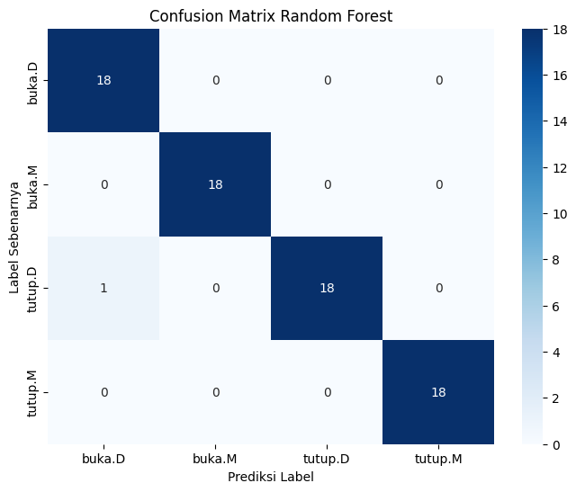
✅ Semua file berhasil disimpan:
- random_forest_model.joblib
- label_encoder.joblib
- scaler.joblib
- imputer.joblib
- feature_columns.joblib (kolom urutan fitur)
import pandas as pd
import numpy as np
import joblib
from sklearn.model_selection import train_test_split
from sklearn.ensemble import RandomForestClassifier
from sklearn.preprocessing import LabelEncoder, StandardScaler
from sklearn.impute import SimpleImputer
from sklearn.metrics import accuracy_score, classification_report, confusion_matrix
import matplotlib.pyplot as plt
import seaborn as sns
# --- 1. Simulasi Data (Jika Variabel Tidak Ditemukan) ---
try:
if 'df_final_balanced' not in locals() or df_final_balanced.empty:
print("Mencoba memuat data dummy (df_final_balanced)...")
n_samples_per_class = 91
n_total_samples = 4 * n_samples_per_class
df_final_balanced = pd.DataFrame({
'label': (['buka.D'] * n_samples_per_class +
['tutup.D'] * n_samples_per_class +
['buka.M'] * n_samples_per_class +
['tutup.M'] * n_samples_per_class),
'TS_MEAN': np.random.normal(10, 2, n_total_samples),
'MFCC_Mean_1': np.random.rand(n_total_samples) * 0.5,
'Spectral_Entropy': np.random.normal(20, 3, n_total_samples),
'Zero_Crossing_Rate': np.random.normal(3, 1, n_total_samples)
})
df_final_balanced.loc[10:15, 'TS_MEAN'] = np.nan
if 'feature_scores' not in locals() or feature_scores.empty:
print("Mencoba memuat data dummy (feature_scores)...")
# Ambil fitur dari simulasi df_final_balanced
sim_features = df_final_balanced.drop(columns=['label']).columns.tolist()
feature_scores = pd.DataFrame({
'Feature': sim_features,
'Information_Gain_Score': np.random.rand(len(sim_features))
}).sort_values(by='Information_Gain_Score', ascending=False)
except NameError:
df_final_balanced = pd.DataFrame()
feature_scores = pd.DataFrame()
if not df_final_balanced.empty and not feature_scores.empty:
# =========================================================================
# --- 2. Tentukan Fitur Terbaik (Berdasarkan Information Gain) ---
# =========================================================================
# Tentukan berapa banyak fitur teratas yang ingin Anda gunakan
N_FEATURES_TO_USE = 30
# Ambil daftar N fitur teratas dari hasil Information Gain
TOP_FEATURES = feature_scores.head(N_FEATURES_TO_USE)['Feature'].tolist()
print(f"--- 2. Mempersiapkan Model Menggunakan {len(TOP_FEATURES)} Fitur Teratas ---")
print(TOP_FEATURES)
# =========================================================================
# --- 3. Persiapan Data (Hanya Menggunakan Fitur Teratas) ---
# =========================================================================
# Filter df_final_balanced HANYA untuk fitur-fitur terbaik
X_raw = df_final_balanced[TOP_FEATURES]
y = df_final_balanced['label']
le = LabelEncoder()
y_encoded = le.fit_transform(y)
X_train_raw, X_test_raw, y_train, y_test = train_test_split(
X_raw, y_encoded, test_size=0.2, random_state=42, stratify=y_encoded
)
print(f"\nBentuk data latih (raw): {X_train_raw.shape}")
print(f"Bentuk data uji (raw): {X_test_raw.shape}")
# =========================================================================
# --- 4. Fitting Preprocessors (Imputer & Scaler) ---
# =========================================================================
# a. Imputer (Menangani NaN)
imputer = SimpleImputer(strategy='mean')
imputer.fit(X_train_raw) # Fit HANYA pada data latih
X_train_imputed = imputer.transform(X_train_raw)
X_test_imputed = imputer.transform(X_test_raw)
# b. Scaler (Normalisasi)
scaler = StandardScaler()
scaler.fit(X_train_imputed) # Fit HANYA pada data latih
X_train_scaled = scaler.transform(X_train_imputed)
X_test_scaled = scaler.transform(X_test_imputed)
# (Opsional) Konversi kembali ke DataFrame untuk kemudahan
X_train = pd.DataFrame(X_train_scaled, columns=TOP_FEATURES)
X_test = pd.DataFrame(X_test_scaled, columns=TOP_FEATURES)
# =========================================================================
# --- 5. Pelatihan Model Random Forest ---
# =========================================================================
print("\n--- 5. Memulai Pelatihan Model Random Forest ---")
rf_model = RandomForestClassifier(
n_estimators=300,
max_depth=15,
min_samples_leaf=1,
random_state=42,
n_jobs=-1 # Gunakan semua core
)
rf_model.fit(X_train, y_train)
print("✅ Pelatihan model Random Forest selesai.")
# =========================================================================
# --- 6. Evaluasi Model ---
# =========================================================================
print("\n--- 6. Evaluasi Model pada Data Uji ---")
y_pred = rf_model.predict(X_test)
acc = accuracy_score(y_test, y_pred)
print(f"Akurasi pada Data Uji: {acc:.4f}")
print("\nLaporan Klasifikasi:")
print(classification_report(y_test, y_pred, target_names=le.classes_))
# Visualisasi Confusion Matrix
cm = confusion_matrix(y_test, y_pred)
plt.figure(figsize=(8, 6))
sns.heatmap(cm, annot=True, fmt='d', cmap='Blues',
xticklabels=le.classes_, yticklabels=le.classes_)
plt.title('Confusion Matrix Random Forest')
plt.xlabel('Prediksi Label')
plt.ylabel('Label Sebenarnya')
plt.show()
# =========================================================================
# --- 7. Simpan SEMUA Komponen untuk Streamlit ---
# =========================================================================
print("\n--- 7. Menyimpan Komponen Model untuk Streamlit ---")
joblib.dump(rf_model, 'random_forest_model.joblib')
joblib.dump(le, 'label_encoder.joblib')
joblib.dump(scaler, 'scaler.joblib')
joblib.dump(imputer, 'imputer.joblib')
joblib.dump(TOP_FEATURES, 'feature_columns.joblib') # 🔹 Menyimpan daftar fitur
print("\n✅ Semua file berhasil disimpan:")
print("- random_forest_model.joblib (Model)")
print("- label_encoder.joblib (Encoder Label)")
print("- scaler.joblib (Standard Scaler)")
print("- imputer.joblib (Simple Imputer)")
print("- feature_columns.joblib (Daftar Kolom Fitur)")
else:
print("❌ GAGAL: Variabel 'df_final_balanced' atau 'feature_scores' tidak ditemukan. Harap jalankan sel kode sebelumnya.")
--- 2. Mempersiapkan Model Menggunakan 30 Fitur Teratas ---
['MFCC_Std_16', 'MFCC_Std_11', '0_Power bandwidth', '0_Wavelet entropy', '0_Autocorrelation', 'MFCC_Std_17', 'MFCC_Std_12', 'MFCC_Mean_16', 'MFCC_Std_20', 'MFCC_Std_19', 'MFCC_Mean_17', 'MFCC_Std_7', 'MFCC_Std_4', 'MFCC_Std_15', 'MFCC_Mean_19', 'MFCC_Mean_15', 'MFCC_Mean_13', 'MFCC_Mean_12', 'MFCC_Std_8', '0_Skewness', 'MFCC_Std_18', 'MFCC_Mean_20', 'MFCC_Mean_18', '0_Kurtosis', '0_Max power spectrum', '0_Wavelet absolute mean_1714.29Hz', '0_Min', '0_ECDF Percentile_0', '0_MFCC_1', '0_Median absolute diff']
Bentuk data latih (raw): (153, 30)
Bentuk data uji (raw): (39, 30)
--- 5. Memulai Pelatihan Model Random Forest ---
✅ Pelatihan model Random Forest selesai.
--- 6. Evaluasi Model pada Data Uji ---
Akurasi pada Data Uji: 1.0000
Laporan Klasifikasi:
precision recall f1-score support
buka 1.00 1.00 1.00 20
tutup 1.00 1.00 1.00 19
accuracy 1.00 39
macro avg 1.00 1.00 1.00 39
weighted avg 1.00 1.00 1.00 39
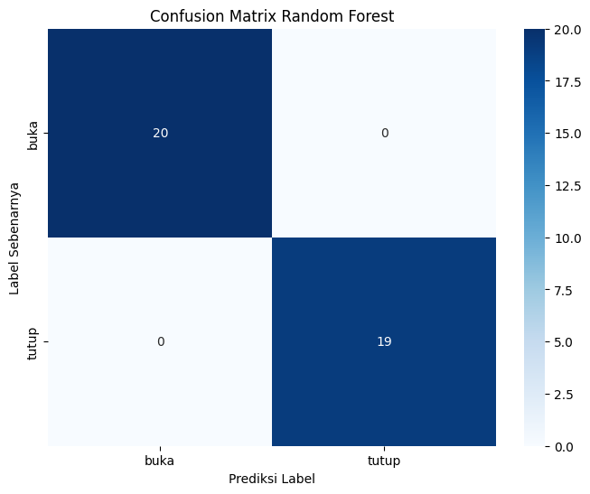
--- 7. Menyimpan Komponen Model untuk Streamlit ---
✅ Semua file berhasil disimpan:
- random_forest_model.joblib (Model)
- label_encoder.joblib (Encoder Label)
- scaler.joblib (Standard Scaler)
- imputer.joblib (Simple Imputer)
- feature_columns.joblib (Daftar Kolom Fitur)
Evaluasi#
dari hasil prediksi semua data bergantung pada fitur statistik sehingga suara tidak menemukan pembeda yang membuat model selalu memprediksi buka
link dataset https://drive.google.com/drive/folders/16e80DwDgUzjX7d69ZZwuWDMYGxYQM31j?usp=sharing
link website
Task#
Prepare data for binary classification by creating a main_label column in df_final_balanced (grouping ‘buka.D’, ‘buka.M’ into ‘buka’ and ‘tutup.D’, ‘tutup.M’ into ‘tutup’), then apply Linear Discriminant Analysis (LDA) to the numerical features using main_label as the target, and finally, visualize the LDA results with a 2D scatter plot colored by main_label to assess class separability.
Prepare Data for Binary Classification#
Subtask:#
Create a new binary ‘main_label’ column in df_final_balanced by grouping ‘buka.D’ and ‘buka.M’ into ‘buka’, and ‘tutup.D’ and ‘tutup.M’ into ‘tutup’. This new binary label will be used as the target for dimensionality reduction techniques focused on binary classification.
Reasoning: To prepare the data for binary classification, I will create a new ‘main_label’ column by mapping the existing granular labels (‘buka.D’, ‘buka.M’, ‘tutup.D’, ‘tutup.M’) into binary categories (‘buka’ and ‘tutup’). Then, I will display the value counts to confirm the new column’s distribution.